| 新解さんの謎 | |
| 赤瀬川 原平 | |
| 文藝春秋 (1999) | |
〈底 本〉文春文庫 平成十一年四月十日刊
(C) Genpei Akasegawa 2003
〈お断り〉
本作品を「文春ウェブ文庫」に収録するにあたり、一部の漢字が簡略体で表記されている場合があります。
また、差別的表現と受け取られかねない表現が使用されている場合もありますが、作品の書かれた当時の事情を考慮し、できる限り原文の通りにしてあります。差別的意図がないことをご理解下さいますようお願い申し上げます。
〈ご注意〉
本作品の全部または一部を著作権者ならびに（株）文藝春秋に無断で複製（コピー）、転載、改ざん、公衆送信（ホームページなどに掲載することを含む）することを禁じます。万一このような行為をすると著作権法違反で処罰されます。
巷に氾濫するチラシの生態／人の財布をのぞいてみたい／記憶力は地球を救う／余白をどうするか......／余白ぎっしりの世の中／ゴッホは過労死だった／写真の紙焼きのもつ無意味／日本列島、物族と紙族の争い／おみくじのやり直し／やんごとなき有価証券／有機毛筆くろぐろ文字の高級感／紙上の争い、万年筆を倒すのは誰か／憂鬱の鬱が書ける芯の太さ／和紙は健在である／いざというときの紙吹雪／投票用紙の原始的蓄積／Ａ５判のガット・ウルグアイラウンド／コピー用紙の出所祝いを二十回／名刺の国際交流は難しい／賞状は透明人間の包帯である／「読まれ率」百パーセントの雑誌／正月一日に発表される紙のゴミ／ブランド手帖か便利手帖か／返信用はがきの儀式／ペーパータオルの輸入に踏み切る!?／ブータンの切手／来たるべきプリントアウトロー／住所不定の電子暗室／地球に優しすぎると孫に嫌われる／紙と、紙ではない紙／全部空っぽになっていく
新解さんの謎
第一章 言葉の森の奥へ
ＳＭ君から電話があった。
ＳＭ君といっても縛り叩きの人ではなくて、ただ名前の頭文字なんだが、紛らわしいのでＳ君としよう。女性である。仕事の合い間に路上観察をしている。
「いまよろしいですか」
もう夜の十一時だったが、Ｓ君なら知っている。よろしいだろう。
「よろしいですよ」
「わたしはいま、しんめいかいに来てるんです」
「え？」
こんな夜中に路上観察ではないと思うが、何か様子からして物件を見つけたらしい。
「どこにいるって？」
「しんめいかいです。じしょの」
新明解国語辞典というのは知っている。むかし私は学生のころ明解国語辞典というのを使っていて、上京してぼろぼろになり、もう大人になったんだからと岩波国語辞典を買ったのだった。でもそれは聞き間違いで、しんめいかいという横浜の中華街のような、そんな特殊な街ではないのだろうか。
「なに、あの三省堂の辞書の？」
「そうなんです。その一三七九ページの中段に来てるんです。【恋愛】のところです」
これはちょっと危ない。夜の十一時である。電話で、いきなり辞書の「恋愛」である。これが見知らぬ女性だったら私は即座に電話を切る。最近の見知らぬ女性は恐ろしい。でもこのＳ君は友人の娘さんで、路上観察学者である。女性では珍しい。好奇心旺盛なだけでなく、ちゃんと頭脳明解な人だ。明解か。
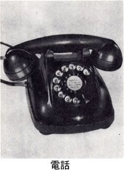
私もその新明解国語辞典を持ち出してきた。私は前述の「大人の」辞書を使っているのだけど、当該の辞書は娘が持っている。娘はアルバイトの疲れで口を開けて寝ていた。そっとドアを閉める。
なになに、一三七九ページ、中段、なるほど。
れん あい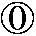【恋愛】─する 特定の異性に特別の愛情をいだいて、二人だけで一緒に居たい、出来るなら合体したいという気持を持ちながら、それが、常にはかなえられないで、ひどく心を苦しめる・（まれにかなえられて歓喜する）状態。「─結婚・─関係」
私は変な気がした。読書のような気持になった。辞書なのに。
「何これ、いま見てるけど」
「凄いんですよ。凄いと思いません？」
「いや、たしかにこの通りだよ。この通りだけど、ちょっとこの通りすぎるね」
「そうなんです。その感じなんです。こんな辞書ってほかにあります？」
「うん、合体ね。恋愛の説明に合体まで出るか」
「凄いんです」
「しかも、出来るなら合体したいという気持を持ちながら。この〝出来るなら〟というのが......」
「そうなんです。真に迫るんです」
「出来るなら、ねえ。辞書ってここまで書くのかな」
「いえ、この辞書が特別なんです」
「ふうん、新明解......」
「もう黙っていられなくて」
「たしかにね〝常にはかなえられないで、ひどく心を苦しめる〟なんて、辞書にあるまじき細かさだな」
「もう文学です。訴えているんです」
「そのダメ押しがまた（まれにかなえられて歓喜する）。これをわざわざ丸カッコに包んで出している」
「正確なんです」
「合体が、まれにかなえられて歓喜する、そうだったよなあ、恋愛なんて」
いけない。夜の十一時である。相手はまだ若い女性だ。
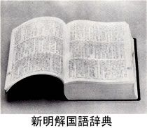
「それでわたし、たまらずに〝合体〟を調べたんです。二二九ページです」
積極的である。相手の方が先を行っている。私も慌てて後をついて行く。
がっ たい【合体】─する 起原・由来の違うものが新しい理念の下（モト）に一体となって何かを運営すること。「公武─」「性交」の、この辞書でのえんきょく表現。
「運営ねえ」
「運営ですよ」
「でも辞書とか、お役所の書類というのは、大マジメなところが即おかしかったりするもんだよ」
「そうなんですけど、ここではむしろ〝二〟です。〝この辞書でのえんきょく表現〟。何か辞書なのに、自己主張を感じませんか」
「たしかに匂うね」
「もう大変に匂います。わたし以前からこの匂いが気になっていて、最近ちょっと記録をとってみたら本当に凄いので、夜分すみませんでした、こんなお電話して」
「まだあるんですね」
「もうたくさんあるんです。明日すぐにお送りします」
明くる日、速達の郵便物が届いた。
「【性交】」
そりゃあたしかに、恋愛─合体ときたらこの言葉に進まないわけにはいかないだろう。
せい こう─カウ【性交】─する 成熟した男女が時を置いて合体する本能的行為。
私はこの文中の〝時を置いて〟というのに感動した。時を置かずになしていたら、それこそもう頰はげっそりと落ちてふらふらになる。人生に一、二度はそういうことがあるものである。一、二度でなく、二、三度かな。いけない、私も新明解国語辞典みたいになってきた。
でもいいなあ、時を置いて。この親切な実感。一週間か。あるいは二日とか三日とか。人によっては一月、あるいは一年ということもある。私は七年という人を知っている。
いけないなあ、考えることがリアリズムになりすぎる。単なる辞書なのに。これは明解というより、実感国語辞典だ。
Ｓ君の報告がある。電話で話した「恋愛」は新明解国語辞典の三版・四版でのことで、じつは一版・二版では別の表記になっている。
れん あい【恋愛】─する 一組の男女が相互に相手にひかれ、ほかの異性をさしおいて最高の存在としてとらえ、毎日会わないではいられなくなること。「─結婚・─関係」
なるほど。たしかにまあ、これがふつうの辞書表現である。あとの細かいことは自分で考えなさいということである。でもこれでは「明解」ではないと思ったのか、三版以降は〝合体〟や〝まれに〟が登場してきた。いったい一版から三版までの間に何があったのか。
奥付を見ると新明解国語辞典の初版発行が一九七二年一月で、手元にある第三版は第四十六刷一九八七年四月となっている。
じつはその前に「明解国語辞典」というのが一九四三年に出ているが、その内容はむしろ現在の「三省堂国語辞典」の方に継承されているようで、だからオリジナルはやはり一九七二年の「新明解......」と考えていいようである。
まあこんな細かいことをいかにも知ってるふうに書くのは私の柄じゃないのだけど、とにかくその一版から三版までの十数年間に、どうしてもその〝合体〟や〝まれに〟を使って表現しなければならないものが、恋愛をめぐる気持の中に盛り上がっていたのだ。いや恋愛という言葉をめぐる辞書編纂者の気持の中に、と書くべきかもしれない。あとの細かいことは自分で考えなさい、といってはいられない、もっと〝合体〟や〝まれに〟を使ってでも説明したい、明解にしたい、という気持がむくむくと盛り上がってきていたのである。
合体というと、私は合体マシンを思い出す。鉄人28号とか、ああいうロボットものの流行があった。個別の戦車とか飛行機のように見えるものが、いざというときになるとカシーン、カシャーンと合体し、一つの巨大ロボットとなって動きはじめる。それがマンガの連載中に時を置いて合体するわけで、いやシャレをいっている場合ではないが、とにかくスボッ、とかブチュッ、とかの有機的合体に代ってカシーン、カシャーンの金属的合体があらわれ、その感覚が現代の恋愛感情にも染み込んできているようにも思うが、あまり関係ないか。
とにかくＳ君の報告を頼りに新明解国語辞典のページを進む。
「【馬鹿】」
いきなり来ますね。辞書というのはいきなりである。当り前だけど。
ばか〔雅語形容詞「はかなし」の語根の強調形〕─な 記憶力・理解力の鈍さが常識を越える様子。また、そういう人。「─者・薄─・人を─にする〔＝ばか者のように扱う〕・─にならない〔＝軽く見過ごせない〕・─に出来ない〔＝無視出来ない〕〔人をののしる時に一番普通に使う語。公の席では刺激が強過ぎるので使わない方がいい〕 利口
利口
社会通念としての常識にひどく欠けている・こと（人）。「人から物をもらってろくにお礼も言わない─が有るか・専門─〔＝専門外の事については常識的な判断すら出来ない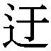遠［ウエン］さを批判した語〕・学者─・役者─」
不合理さ・つまらなさが常識を超える様子だ。「そんな─な事が！・─な目に会う」「ばか貝」の略。
私は読んだあと、思わず遠くを見つめた。
〔公の席では刺激が強過ぎるので使わない方がいい〕
こんな親切な辞書があるだろうか。親切というよりおせっかいというか、いやいや、犯罪を未然に防ごうという心づかいは親切であろう。犯罪ではないけれど、人生の間違いを未然に防ごうとして忠告してくれる。明解というより、それをはるかに超えて、超明解というか、親切国語辞典だ。
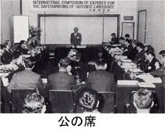
なになに、報告によるとこれは第一版・第二版のもので、第三版以後はさらに変化しているという。
ばか【馬〈鹿】〔雅語形容詞「はかなし」の語根の強調形〕─な 記憶力・理解力の鈍さが常識を超える様子。また、そうとしか言いようの無い人。〔人をののしる時に最も普通に使うが、公の席で使うと刺激が強過ぎることが有る。また、身近の存在に対して親しみを込めて使うことも有る。例、「あの─＝あいつが・──＝女性語で、相手に甘える時の言い方」〕「─者・薄─：─の高笑い・人を─にする〔＝馬鹿者のように扱う。.........
なるほど、いっそうの充実を見せている。問題は「女性語で」の項。じつはそのカッコの上に「──」とあるが、これは単なる二本の棒ではなくて用例なのだ。つまり、
「馬鹿馬鹿」
ということらしい。漢字では感じが出ないが、要するに、
「ばかばか」
ということ。しかしここまできたら、
「いやん、──」
としてほしかった。あるいは「ばか」の下に小さいカタカナの「ン」がつくこともある、という、よりいっそうの親切心も必要だろう。
しかしこの一版から四版までの変化についてはほかの項目でもＳ君の調査がかなり進んでいるので、その一、二を紹介しよう。
かね がね（副）以前から。かねて。〔予・兼がねなどと書く〕
これは第一版、第二版で、次の第三版ではちょっと増える。
かね がね（副）その事がその時点まで暗黙裡（リ）に、当事者の間に了承されていることを表わす。「─〔＝以前から〕存じ上げております・─〔＝以前に〕御連絡申し上げました通り」〔「《予・兼がね」などと書く〕
これではしかし、新明解のファンとしてはいささか食い足りない思いがあるかもしれない。それを察したのか、第四版ではがぜん充実度が盛り上がり、明解の力が爆発する。
かね がね（副）機会有るごとに、特定の言動に出たり出会ったりしていたことを表わす。「─『若さをぶつけてみたい。知らない世界の人びとを知って自分を磨きたい』といっていたそうだ・─面白くないと思っていたらしい・お前さんとこはうまい物を食はせると─聞いて居たが、こいつは凄［スゴ］い刺身だねえ・─好んで読んだ外国小説の、人生そのものを直写した力強さに、一人よがりの頭をどやしつけられた」
以前から現在に至るまでとだえること無く主体にその傾向の見えることを表わす。「─あなたのご活躍には敬服しておりました・しかし自分には、文を売って銭に替へる外には方法が無いので、─勧説を受けて居た大阪毎日新聞に、長篇［ヘン］小説を寄せる事に決心した・─願［ガン］にかけて居た通り先生を囲んで話の出来る喜びはいっぱいだったが、変に堅くなって楽には口がきけなかった」
そうですか、口がきけなかったんですか。そりゃあ堅くなりますよね。しかし何でしたっけ話は。え？ 辞書？ 新明解国語辞典、なるほど。私はまた大阪毎日新聞の......。
いや、つい新明解リズムに乗せられてしまうが、しかしそれにしてもこいつは凄い刺身、いや、凄い明解パワーだねえ。とにかく明解さが濃密になり、明解の森に分け入る感じで、森の中で遭難しそうになるのだった。
ではあんまり深入りしない、遭難の危険のないものをもう一つ。
か えんクワ─【火炎】〔正しくは、火〕「ほのお」の意の漢語的表現。「─放射機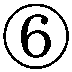・─太鼓［ダイコ］」［─〈瓶［びん］］ガラス瓶の底に濃硫酸、その上に・ガソリン（石油）を入れ、瓶のふたに砂糖・塩酸カリを付け、投げつけると発火するようにしたもの。
これが一版である。次の二版・三版では多少の切除部分があるのに要注意。
か えんクワ─【火炎】〔正しくは、火〕「ほのお」の意の漢語的表現。「─放射器・─太鼓［ダイコ］」［─〈瓶［びん］］ガラス瓶に・ガソリン（石油）を入れ、投げつけると発火するようにしたもの。
つまり常識的に公知の様態は記してあるが、専門知識の中に隔離するべき発火装置は取り除いてあるのだ。
「公の席では刺激が強過ぎるので使わない方がいい」
たしかに火炎瓶というのは公の席では......、いやもちろんそうだが、さらに四版ではまた多少の変化が見える。
か えんクワ─【火炎】「ほのお」の意の漢語的表現。「─放射器・─太鼓［ダイコ］」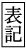「火〈」とも書く。［─〈瓶［びん］］ガラス瓶に・ガソリン（石油）を入れ、投げつけると発火するようにしたもの。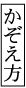一本
この一本、この感触が泣けてしまう。何だか小学校の校庭で火炎瓶を並べて教えているみたいで、何とも微笑ましくも恐ろしく、なかなかデヴィッド・リンチだ。いったんは危険な専門知識を取り除いたものの、それでは体内に充満する明解パワーが抑えきれずに、つい「かぞえ方」として漏れ出たのであろう。
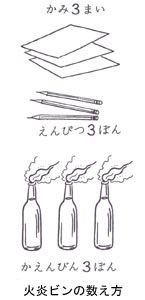
でもこういう可愛いのはたくさんある。
こく ぞく【国賊】体制に対する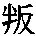乱（ハンラン）を企てたり国家の大方針と反対したりする、いけない奴（ヤツ）〔体制側から言う語〕
本当にいけない奴なんだよ。困るんだよもう、いたずらばかりして。こないだも首相を二人殺しちゃった。
ごきぶり〔「御器かぶり」の変化〕台所を初め、住宅のあらゆる部分にすむ、油色の平たい害虫。さわると臭い。あぶらむし。〔ゴキブリ科〕一匹
さわったのだ。しかもその指を嗅いでみたんだ。辞典編纂者も大変である。それがしかも住宅のあらゆる部分に棲んでいる。
むっちり（副）─と ─する〔腕・乳房などの〕肉づきがよくて引きしまっていることを表わす。「イナゴは軽快で、香ばしく、肉に─したところもあって、いいオヤツになるのだった」
だったと、いきなり事実として決定されてしまった。しかしせっかくの乳房のあとに何もイナゴを出さなくても。
いえ でイヘ─【家出】帰らないつもりで自分の家をそっと出て、どこかへ 行ってしまうこと。
「そっと」という心づかいがいい。何だかいたいけな、家出人の姿が目に浮かぶ。
きょう しゅうケウシウ【〈嬌羞〉】〔男性にとってそれがたまらない魅力となる〕女性のはじらい。
ただの魅力ではない。もう「たまらない」のである。やはり新明解『実感』国語辞典とするべきである。
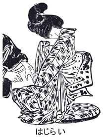
「そうなんです。私もうこの新明解にかぎっては、辞書を引く人ではなく辞書を読む人になりました」
Ｓ君は分厚いノートを何冊も持ってあらわれた。中にびっしりと書き込みがある。もちろん新明解の「紙上観察」報告書である。
「もうこのところ毎日この辞書を読みふけっていて、きのうはとうとう徹夜したんです」
「燃えてるね」
「そうなんです。電車の中で辞書を読んでいて飽きないなんてはじめてです」
「ぼくもね、最初はヘンな辞書、ちょっとおかしな辞書、と思っていたけど、読んでいくうちに変ったね」
「はい。何というか、最初感じるいかがわしさみたいなのが、だんだん味になって離れられなくなるというか、そういう新興宗教みたいな力があるんです」
「そうだね、新明解じゃなく新宗教というか、いや冗談じゃなく、ふつう辞書というのはもっと守りの姿勢にあるもんだよね」
「そう思います。ほかからミスを指摘されないように、されないようにで、説明はもっと最小限に切り詰めてます」
「それがふつうだよね。だけどこの辞書はなんといっても明解パワーだから、守りを考えるというより、むしろミスを恐れずに攻め込んでくる。明解にするために攻めている。攻めの辞書だねこれは」
「凄い。攻めの辞書！」
「いや、凄いことだよこれは。あえて〝明解〟としている意味がわかるね」
「そうです。ぐいぐい攻め込まれてしまうんです。とくに用例のところでファウルラインぎりぎりまで攻め込んでいるんですけど、次の〝ぴたり〟なんか見て下さい」
ぴたり（副）─と動きが止まることを表わす。「粛清を怖［オソ］れるように・（この件に対しては）─口を閉じた：─とドアを閉ざす〔＝しめる〕・スピーチが─ととまった・むろん─〔＝それ以来ずっと〕来なくなった・親分の『そこらで、やめておきなさい』の一言で─〔＝見事に〕鎮まるのだった」間隔を置くこと無く、くっつくことを表わす。「若い刑事が川上の横腹に─とついてきた」過不足無く、目標・（照準をあてたもの）に合うことを表わす。「狙〔ネラ〕いは女性─・着地は小野が四年前のヘルシンキ大会後あみ出した開脚伸身とび越し下りで─と決まった・これが課税対象所得になるが、まったく同額の当期繰り越し欠損金があって、申告所得額は─ゼロ」
Ｓ君のノートである。
「この川上って誰なんでしょうか」
「うーん、川上じゃなきゃいけない、わけじゃないけど川上」
「とにかくいきなり川上です。凄い攻めです。それがたくさんあるんです」
以下ノート。
ぶり ぶり（副）─と ─する 腹立たしさが、その荒あらしい態度や口ぶりからありありとうかがわれることを表わす。「庄吾は─しながら、ひょいと下を見ると、さっきの犬が、ちょこんと、彼の足もとにうずくまっていた」
庄吾である。しかもさっきの犬である。庄吾の身の上にさっき何ごとが起ったのか。それはわからないが、とにかく「ぶりぶり」のためにさっきの犬まで出てきて、足もとにうずくまってしまうのである。しかもちょこんと。いいなあ、「ぶりぶり」から「ちょこんと」への距離。
い がい─グワイ【意外】─な ─に それまで漫然と抱いていた予想や期待が、現場に臨んで見て、見事に破られる、ということを表わす。「事の─に驚く・愛するものの─な才能を発見するのは、このうえない喜びである・鈴木の死は彼に取ってそんなに─な報告でもなく、そんなに悲しい事実でもない・すんなりと入学出来て自分でも─に思った：─性」............
ああ、鈴木の人生はいったい何だったんだろう。哀れな鈴木。しかし気になるのはこの〝彼〟である。鈴木の死にも平然としている彼。私はこの、いまだ誰も見たことのない〝彼〟の似顔絵を南伸坊先生に描いてもらいたい。
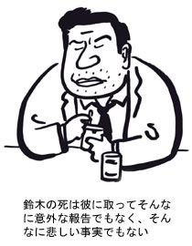
ぞっこん（副）〔口頭〕〔「そっこん」の強調形〕その者の魅力にしんそこから引きつけられていることを表わす。「私は、雪子の美貌［ビボウ］と気性に─引きつけられていたが」
雪子か。それはそうかもしれない。雪子なら誰だって─になります。見たことないけど。しかし「引きつけられていたが」の「が」が付いてしまうところは、みなさんも覚悟しといた方がいいだろう。
たら（接助）「...た（な）らば」の省略表現。「一度許し─深みにはまってしまうわよ」
（副助）〔「...と言ったら」の変化〕予想外だという気持をこめて、話題として取り上げることを表わす。「田中さん─案外親切なのね・あの子っ─親の言うことなんか、ちっともきかないんだから・この時計っ─もうこわれちゃった」
普通考えられる程度を超えていることを表わす。「おもしろいっ─ないんだ・きたないっ─話にならない」............
親切な田中さんているものである。しかしこの田中さんの親切は真に受けていいのだろうか。いや人を疑っちゃあいけないが、まったくもう、田中さんたら。
むっ と（副）─する相手の不用意な言動に触発されて、一瞬、内心の怒りがこみ上げて来る（のをじっと抑える）ことを表わす。「それをいわれると私は─する・『何も、そんな意味で訊［キ］いているんじゃない』久保木は、いささか─した・父はてき面に不機嫌になった。─して口も利かず、憤然としてストーブにあたっていた・旦那［ダンナ］さんは─くるのを強いて抑えて...」熱気やにおいで息が詰まりそうになる様子。「─する部屋」
私だって何もそんな意味で辞書を引いてるんじゃないんだけど、しかし久保木という男（女か）のこの後の言動を、次の第五版あたりで明らかにしてもらいたいと思うのは、私一人ではないだろう。
すなわちスナハチ（接）【《即（ち）】前の語句を承（ウ）け、その趣旨を別の観点からより分かりやすく説明することを表わす。「『陽［ヒ］の当る家』は─〔＝端的に言えば〕幸福と善と豊かさを象徴する・戦前の封建的遺制─〔＝たとえば〕家父長権だの戸主権だのが大手を振ってまかり通り...」
ほかならぬ、その年月日その場所その人である、ということを表わす。「米国商業飛躍の最初の結節点になったのが、一九二九年、─大恐慌の年だった・玄関わきで草をむしっていたのが─西郷隆盛［サイゴウタカモリ］であった」
二つの物事が相即関係に在ることを表わす。「動─騒に馴［ナ］れた日本人は、静─寂を本能的にこわがる国民になってしまったようである」............
びっくりした。いきなり有名人だ。すなわちといわれたって、私はてっきり上野公園の入口の近くで銅像になってると思っていたのに、まさかこんな玄関わきで草むしりとは。いったい日本の将来はどうなる。もうこうなってはいるが。
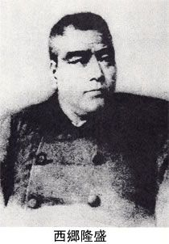
「でも一つ、私はこの方の、新解さんの女性観というのが気になるんです」
「ほう」
「これを見て下さい」
たま ゆら（副）〔雅〕〔もと、「玉響［タマユラ］」の意。ちなみに、この語形は万葉集の旧訓に基づく語〕幾つかの玉が触れ合って出す音。「漢字と漢字のつらなりは固そうにみえますが、かえり点を打ってゆっくりと味わってみますと、一語一語が珠玉のように光ってそれがふれあうたび、─のさやかな音をたてます」過ぎ去ってみれば、その状態がほんの短い間のことであったことを表わす。「或［ア］る不安定な足場の上で─の冒険を楽しんでいたに過ぎない・あゝ、─の幸福も今日で終［オワ］った・春がきたら治るだろうと信じているから嬉［ウレ］しい。治らなかったらどうするか、そこまでは考えていない。考えないことによって女は─の平和を得ている・─の青春」
「凄いなあ。たまゆらまでたどり着くのに、春からはじまってゆっくりと考えごとをしたりしている、辞書なのに」
「それよりも、女なんです。私、女ですけど、女って全員がこのような頭脳の持主なんですか」
「いや、それはぼくに訊かれても」
「まだあります」
くされ【腐れ】〔イネ・ハクサイなどが〕病害で腐ったような状態になること。また、その物。「─が出る：─状態」
（造語）けいべつすべき・存在（もの）に冠する語。「─金［ガネ］・─儒者・─女［オンナ］」
「何もここで女を出さなくてもいいでしょうに。まだあります」
いけない。それはたしかに、Ｓ君の発言の途中であるが、ちょっとここで一休みして、時を置いて、気を静めよう。
しかしこれは何だろうか。フィクションならまだわかるが、これは現実である。紛れもなく市販されている辞書の現実。その中で濃厚な、何だろう、濃厚な......、とにかくそれからというもの、私は新明解の森の奥深くにずるずると引き込まれて、毎日が森に生きる生活である。
第二章 深まる謎
ＳＭ報告はその後もつづいた。
ＳＭとは、そういうみんなが考えるような変な意味ではなくて、ただ女性の頭文字である。だから誤解を避けてＳ君にすると、ＳＭのＳの方かと思われる。Ｍ君としても、Ｍ専門かと思われる。だから誤解の避けようはないわけで、もうフルネームでＳＭ君だ。
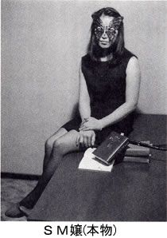
私はＳＭ君から三省堂の新明解国語辞典の中に誘い込まれた。何で辞書の中に？ と怪訝に思ってついて行くと、それが単なる辞書ではなく深い密林のようなところで、あれよあれよと読むうちに出られなくなり、危うく遭難しそうになった。
これまで辞書を引いたことはあったけれど、辞書を熱中して読んだのなんてはじめてだった。ふつうの辞書と違うのは、頭に明解が付き、その上に新が付いている。
とにかく日本語を明解にしようというパワーにあふれている。ふつう辞書というのは説明をムダなく最小限に抑えている。その方がミスも少なく、辞書的な正しさを保守しやすい。ところがこの新明解国語辞典はムダなく最小限なんてケチなことをせずに、どんどん説明してくれる。ミスを恐れるなんてビクついたところがあろうことか、いくらでも説明サービスをしてくれるのだ。日本語をわからせようという明解パワーである。そのパワーが渦を巻いて、逆に辞書の中が密林の奥の沼のようになっている。ページをめくるほどに、言葉が繁り、蔦みたいに伸びて、あちこちでからまってぬらぬら、ぬるぬるしてくるようだ。
ちなみに「ぬらぬら」を引いてみる。
ぬら ぬら（副）─と ─する 〔ヘビや細長い水草のようなものなどが〕くねくねと曲がったりうごめいたりすることを表わす。そのものの表面が粘液状のものでおおわれ、いやな感じがすることを表わす。「先刻［サツキ］小屋へ入って世話をしましたので、─した馬の鼻息が体じゅうへかかって気味が悪うござんす」
これが「ぬらぬら」である。悪うござんすなのだ。いったいここはどこ？ いつの時代？ と辞書の中を見回す。新明解の密林の奥は、タイムスリップもしばしばである。いましがた辞書を引きましたので、新明解の鼻息が体じゅうへかかって気味が悪うござんす。
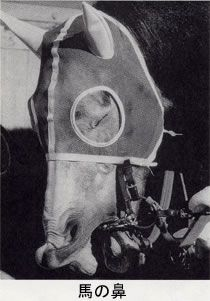
このように「ぬらぬら」一つとっても、この辞書はその言葉の神髄を身をもって教えてくれるのであった。
ついでに「ぬるぬる」も引いてみる。
ぬる ぬる（副）─と ─する 粘液や苔（コケ）状のものでおおわれている物の表面が、粘り着いたり 滑りやすそうであったりすることを表わす。「船縁［フナベリ］から覗［ノゾ］いて見たら、金魚の様な縞［シマ］のある魚が糸にくっついて、右左へ漾［タダヨ］いながら、手に応じて浮き上がってくる。...漸［ヨウヤ］くつらまえて、針をとろうとするが中々取れない。捕［ツラ］まえた手は─する。大［オオイ］に気味が悪い」
と、こうである。「ぬるぬる」を美味しくいただいてもらうために、前菜が出て、焼物、酢の物、お吸い物というようなフルコースでもてなしてくれて、その上でやっと「捕まえた手はぬるぬるする」という主菜の登場である。
しかもその後に「大に気味が悪い」というデザートまで付いている。これが明解魂というものだ。
それでいて「つらまえる」などという不思議な言葉を使い「漾」という見たこともないような珍味の文字を食べさせてくれる。そんな心づくしの陰で「つらまえて」「捕まえた」あるいは「針をとろうとするが中々取れない」のように、文字遣いはばらばらになっている。固い統一を崩し、あえて乱す。日本語の中の乱調の美を身をもって教えてくれる。
どうもこの「身をもって」というのが新明解国語辞典の最大の特徴のような気がする。辞書を引いていて、こんなに「身」を感じる辞書はほかにない。新解さんという人はいったいどんな「身」の人なんだろうか。
新解さんとは、ＳＭ君がこの辞書につけたあだ名である。たとえば前回の文章を世に発表したあと、どこかのテレビ局が早速この辞書の遊びをやったらしいのだが、ＳＭ君はそれを見て、
「あの人たちは新解さんのことをわかってくれていない」
と不満そうな顔をする。新解さんが身をもって示していることを、ただ一種の鈍重頭と見て笑ってるみたいで、嫌だという。新解さんを一種の知的チック症と見て、それをあざ笑っているといわんばかりだ。
そのころ何と新解さんを分析した単行本まで出たらしいのだが、ＳＭ君はそれにも不満を示した。それはただ間違いを指摘しただけの本で、ぜんぜんつまらないという。
それはわかる。前にも書いたが、新解さんの辞書の特徴は、守りではなく攻めの辞書だということ。辞書に限らず学問の世界というのは、できるだけミスを指摘されないように、守りに徹して、堅苦しく堅苦しくやっていけば間違いはない。でもそうすると正しくはなっても明解にはならない。しかしそういう不明解な正しさなんて何ぼのもんじゃ、というので新解さんは攻めに回る。
新解さんの凄いのはここのところだ。辞書の身で、よく攻めに回れるもんだ。でも攻めというのは正しさを上回るから、じっとしている者から見ると隙だらけである。だからミスを指摘するのは簡単である。
日本の野党的気分だ。自分は何もせずにじっとしていて、相手のミスだけを指摘する。ミスの指摘だけでもなんとか一生やっていける。自分の方はじっとしているから、正しさに破綻はない。ＳＭ君はそれが不快で、
「そんなの新解さんには屁でもないわ」
といって、ほとんど新解さんと出来ているような感じなのだ。
で・きる：【出来る】（自上一）物事が生じる。「免疫・（共通の土俵・法律・溝・用事・でこぼこ）が─：一朝一夕に─ものではない・初めて子供が出来た〔＝生まれた〕・今年出来た〔＝とれた〕リンゴ・今度お金が出来たら〔＝入ったら〕・耳にたこが─ほど聞いている〔＝たこ〕」成立する。「合意・（妥協）が─〔＝可能だ〕：用意が─〔＝整う〕・木で出来て〔＝作られて〕いる・サラリーマンになるように出来た〔＝教育された〕人間」その方面の特技を持っていたりそれをこなすだけの能力を備えていたりする。「運転・（野球）が─：外国語の─〔＝話せる〕人・この問題は私には出来ない・よく─〔＝成績の良い〕人だ」何かをする・見込み（チャンス・余裕・権利）が有る。「その日のうちに着くことが─かどうか・どれくらい休憩─か？・私にも申し込むことが─かしら？」その人のしようとした事が支障無く成立する。「高く評価─・─〔＝なし得る〕事は何でもいたします・出来ない〔＝実現不可能な〕相談ではない」〔俗〕（相愛の）男女の間に、情交関係が成立する。「出来ている・出来合う・出来た仲」【出来た人】苦労を積んでおり、細かな事によく気の付く人。人格の円満な人。【...出来る】...することが・許される（可能な事情にある）。「航行─：避けて通ることが・（手放しの楽観は・身動き・事実は否定）出来ない」
これは特に面白くはなかったが、まあ辞書だからこのくらいが当り前だ。
そもそもＳＭ君と新解さんとのなれそめは、中学生のころだという。同級の男子生徒に、辞書を貸してくれといわれた。ＳＭ君はそのとき新解さんを持っていて、貸してあげた。よくあることだ。若い男女というのは何とか接触の口実が欲しくて、わざわざ何か借りたりする。やがてその男子生徒から辞書が返されてきた。はいはいと受取って、家で勉強のときぱらぱら引くと、赤線が引いてある。「恋愛」の項目。どきっとしてまたぱらぱらやると、また赤線、「性交」の項目。つづいて「合体」「キス」「陰茎」「勃起」そのほか、要するに性的な言葉、Ｈな言葉に全部赤線が引かれて戻されてきたのである。
これはまあイタズラでもあるし、愛の告白というかちょっかいでもある。愛のちょっかい。
ちょっかい〔口頭〕ネコなどが用心しながら前足を使って、ちょっと物をかき寄せること。「─をかける〔＝うまく行くかと思って、ためしにやって見る〕」おせっかい。「─を出す〔＝横から口を出す。干渉する。軽い気持で女性に手を出す〕」
まあそんなところだが、なるほどと思い、私もためしに「陰茎」を引いてみた。
いん けい【陰茎】男子の生殖器の一部で、さおのように伸びたりする部分。男根。
さおのように。たしかに昔からよく使われる比喩だけど、私は正直にいって棒のようにとは思っても竿は連想できない。だって竿は最低でも二メートルはありますよ。
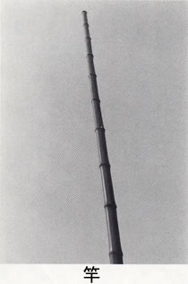
まあそれも比喩だけど、しかし「伸びたりする部分」の「たり」とは。ほかに多くの可能性を含んでいる。曲がったり、捩れたり、折れたり、丸まったりとか、いったいどのくらいのことを指すのだろうか。
ためしに「勃起」も引いてみる。
ぼっ き【〈勃起】─する 急に力強く起（タ）つこと。〔狭義では、合体を思い、陰茎が伸びて堅くなることを指す〕
合体を思い。これですね。ずばり本音で迫る。ふつうはここまで踏み込まない。伸びて硬く、くらいの現象面で止まる。だけど新解さんは「思い」まで踏み込んでくる。その思いがふくらんで、そのふくらみが遂に伸びて硬くなるわけで、そこで日本語がはじめて勉学青少年の血肉となる。
しかし「狭義では」と断っているが、広義ではどうなるのだろう。国会でも、オリンピックでも、あるいは学校や美術館などでも、広義で勃起という言葉の使われるのを見たことは一度もない。でもそれは今の話で、昔はあったのかな。
で、ＳＭ君のところにはそうやって赤線入りの辞書が返されてきたんだが、ぱらぱらやっていると、必ずしもＨな個所だけでなく変な個所にも赤線がある。どうということはないけど変なところ。ＳＭ君もそれまで必要に応じて新解さんの辞書を引きながらも、変なところは感じていた。新解さんの変なそぶりというか、変な訛りというか、ふつうでは見かけない気配をちらちらと感じていたのが、この赤線事件で、やっぱり確実にあるんだ、この中には変が詰まってるんだと正式に認知したという。
後にその男子生徒に聞いてみると、その子もはじめはちょっかいを目的に赤線を引いていたが、そのうちちょっかいに関係なく変なところが見えてきたんだという。単なる目的一から目的二へ進み、それを超えて大人になったわけだ。
そのようにして、新明解国語辞典の奥深くに埋れていた変なものが、はじめて人々の意識の表面にまで浮上してきた。
「でも私はこの新解さんの女性観というの、ちょっとおかしいんじゃないかと思います」
ＳＭ君はそういう。
「そうだ、この間はそこで時間切れになったんだな」
「そうですよ。だから今回、私は張り切って続篇をお願いしてるんです」
「でもおかしいのは新解さんのキャラクターだから」
「そりゃそうですけど、そのおかしい、変なというのの傾きが問題なんです」
「そりゃそうだろうが」
「見て下さい、ずばり〝女〟です」
おんなヲンナ【女】男人間のうち、雌としての性器官・性機能を持つ方。〔広義では、動物の雌をも指す。例、「─ネコ」〕一人前に成熟した女性。〔やさしい心根や優柔不断や決断力の乏しさがからまり存する一方で、強い粘りと包容力を持つ〕「いい〔＝器量のいい〕─」正式の妻以外の、愛人。情婦・めかけなど。女性の召使。
..............................【だてらに】
（副）〔「だて」は「男だて」の後要素と同性質。「ら」は接辞〕控えめな態度・行動を要求される女性が、男性も顔負けする振舞いをすることを、批判と驚嘆の気持を交えながら取り上げる意を表わす。女性の身でありながら。
「まあしかし、こんなもんじゃないのかな」
「だって〝控えめな態度・行動を要求される女性が〟ですよ」
「まあ、古風な女性観だとはいえる」
「古風ですむのでしょうか。〝優柔不断〟で〝決断力が乏し〟くて、で、〝強い粘りと包容力を持つ〟なんて、ちょっと勝手なイメージ過ぎないでしょうか」
「まあ、そういう願望が潜んでるんだ」
「私は納得できずに〝包容〟を引きました」
ほう ようハウ─【包容】─する おおらかで、自分と反対意見を持つ人、自分の悪口を言う人などと、承知の上でつきあうこと。「─力」
「と、こうなんです。これも願望ですか」
「まあ、願望というか......」
「私はこれ、教育だと思います。予備教育です。あらかじめのきめつけです。これでは女は、反対意見や悪口をいわれるのを承知で人とつきあう、悲しい、ただの座蒲団みたいなものです」
「いや、座蒲団なんかじゃないよ」
「文豪はやっぱり男性なんですね。だって否定の仕方に力がないもの」
「厳しいなあ」
「厳しくはありません。こういう感じが新解さんの言葉の端々に出ているんです」
ヒステリー〔ド Hysterie〕わずかのことでも、すぐ感情を大げさに表わす、精神の・状態（病的症状）。欲求不満の女性に多い。ヒス。「─を起こす」
「これです。問題発言ですよ、これは」
ヒステリーか。難しい。これ、医学的にはどうなんだろう。
「まだあります」
なまじ（副）〔「生強［ナマジヒ］」の変化〕十分な成果が期待出来ないのに、何かを敢（アエ）てすることを表わす。「─〔＝つい〕口を出したのが悪かった・─〔＝無理に〕女の子が柔道など習ってもしようがない」それで十分だと言える状態には達していないことを表わす。「─〔＝中途半端に〕知っているから困る」古来の用字は、「〈憖」。
「なまじの説明に、何でわざわざ女の子に柔道を習うな、なんて」
「でも辞書なんだから、これは新解さんの意見というより、世間一般の言葉づかいとして書いてるんだと思う」
「世間がそうだというのはわかります。でもそれだったら、オリンピックの柔ちゃんはどうなるんですか」
「そうだよなあ。これを書いたとき、まさか、柔ちゃんが出てくるとは思わなかったろうね」
「天罰ですよ」
「天罰かあ」
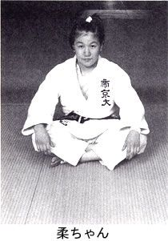
「まだあります」
あさぢえ─ヱ【浅知恵】なまじっか有るためにかえって事を誤るようなあさはかな知恵。「女の─」もとの用字は、「浅〈智慧〉」。
「ほら」
「うーん」
「駄目なのはすぐ女です。次」
あざと・い：（形）〔関西方言〕〔「あ」は接辞〕浅はか・（小利口）な点が批判の対象となる様子だ。「─手立て・─女の恨み」あくどい所が有って、悪い印象を与える様子だ。「前回は頭の回らないところをつくりすぎてあざとくなっちゃったけど・空海の思想家としての性格はむしろ─ばかりに煩瑣［ハンサ］な美を愛する傾向があり・─商売」
「これです。次」
のに（接助）前件の事実にもかかわらず、意外にも・（やむを得ず）後件に述べる事柄が実現することを表わす。〔終助詞的にも用いられる。例、「女だてらに、よせばいい─」〕「熱が有る─外出した・上手な─やらない・金も無い─ぜいたくをする・行きたかった─希望者が多かったので遠慮した」
「文豪、たかが〝のに〟ですよ。〝のに〟を説明するのに、何で女が槍玉に上がるんですか」
「でもね、そういうことを気にして気にして隠し込むより、言葉の端からちろっと出てしまうところが、何だか新解さんて可愛いなって思うんだけど」
「もちろん私は新解さんを批判なんかしていません。でも見ちゃったら、黙ってるわけにもいきませんよ」
「でもね、可愛いんだ新解さんは」
とら【〈虎】アジア特産の猛獣。背中から腹にかけて黄色の地に黒いしまが前後方向に対して直角に有る。口が大きく、鋭い牙（キバ）と爪（ツメ）を持ち、眼光が鋭い。皮は敷皮用。〔ネコ科〕〔押えにくいというところから、俗に、酔っぱらいの意にも用いられる〕「─の威を借る狐［キツネ］〔＝有力者の陰に隠れていばる者のたとえ〕・─の尾を踏む〔＝きわめて危険な事をするたとえ〕」一匹・一頭
「この〝皮は敷皮用〟というの、可愛いと思わない？」
「思う思う」
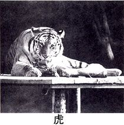
さい【〈犀】熱帯地方にすむ哺乳動物。鼻の頭に角がある。頭が長く首は短く、四足はゾウに似る。全身の毛が少なく皮は厚い。角は漢方薬用。〔サイ科〕一頭
「これもね。〝角は漢方薬用〟」
「犀の角って、漢方薬用に生えてるのね」
「何だかね、童話的な世界なんだ」
「蛇は皮がお守り用ですね」
「鰐──皮が鰐皮用」
「クロダイ──全身が拓本用」
「タラ──こどもはメンタイコ用」
「これなんかも凄く可愛いんです」
はこ【箱】物がよごれたり傷んだりばらばらになったりしないように、そこに収めておくための（方形の）容器。〔ふたの有る物が多い。また、算［カゾ］えるのにも用いられる。例、「段ボール五十─［パコ］分の資料」〕「宝石─［バコ］・ごみ─［バコ］」鉄道の車両。三味線。「箱屋」の略。〔は俗用〕は、「〈函」とも書く。
（造語）数個・数本・数枚・数瓶・数粒...を、売買・取引などの単位として一まとめにして箱に入れ、算える語。例、「たばこ・マッチ・せっけん・ティッシュ：角砂糖・せんべい・ハム・ナシ・シューマイ・ようかん・ヤマノイモ・バター・きんとん・黒豆・おこわ：丸薬」など。
「きんとんが可愛い」
「黒豆もいい」
「おこわがどうして出てくるの」
「ハムの次にナシがくるのも何だか可愛い」
「これ、ほとんど内田百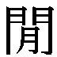ですよ」
「あの、戦時中に書いた『餓鬼道肴蔬目録』の随筆。随筆というか、単なるご馳走の羅列」
「そうです。百先生も可愛い」
「百物件って、可愛いよね」
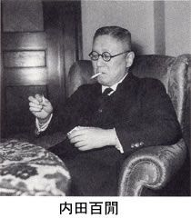
「新解さんて、こういう数に異常に関心があるみたいです。項目の末尾に『かぞえ方』というのがついていますし」
「この間の、火炎ビン一本、てやつね」
「そうです。この辞書の帯にも〝国語辞典で初の欄を新設〟って誇らし気にうたってあります」
「変だね。でも正しいよ」
「そうなの。変だけど正しいんです。それで私、項目末尾ののいろいろをいくつか集めてみました」
あばら屋 一軒
黒かび 一株
さなだ虫 一匹
十手 一本
手榴弾 一発
つの 一本
ネグリジェ 一枚
虫歯 一本
ももひき 一枚
腰蓑 一枚
小屋 一軒
毛虫 一匹
くらげ 一匹
恐竜 一匹
汁粉 一杯
血 一滴
枕絵 一葉
どぶねずみ 一匹
枯葉 一枚
どす 一本
盲導犬 一頭
藪蚊 一匹
熱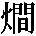 一本
キーウィ 一玉
ピラニア 一匹
鞭 一本
ふうせん 一枚
コスモス 一本
ナパーム弾 一発
口紅 一本
核弾頭 一発
さそり 一匹
整形外科 一軒
くしゃみ 一発・一回
「凄い。可愛い。正しい。でも何だろう、これ」
「かぞえ方です」
「そりゃあ、あばら屋だって、かぞえ方に迷うことが、ないとはいえない」
「恐竜も」
「恐竜は一匹か。盲導犬が一頭なのに、恐竜は一匹か」
「小さい恐竜でしょうか」
「小さくたって大きいよ」
「一匹なんて、恐竜が怒りそうです」
つぎ に【次に】（副）時間的に、または物事の順位の上で、前のものに続いて問題と・する（なる）ことを表わす。「自分は初め眼を信じなかった。─これは夢に違いないと考えた・東京で驚いたものはたくさんある。第一電車のちんちん鳴るので驚いた。それからそのちんちん鳴るあいだに、非常に多くの人間が乗ったり降りたりするので驚いた。─丸の内で驚いた」
「もう可愛くてたまらない」
「どんどん驚く新解さん」
「次々ですね」
つぎ つぎ【次次】（副）─に ─と 同じ・（似た）事が距離・間隔を置かずに続いたり繰り返されたりすることを表わす。「雪を満載した巨大トラックの雲が─〔＝ひっきり無し〕にやってくる・この人たちも─〔＝順順〕に定年を迎える・苦労して建てたマイホームが─と〔＝Ａの部屋ばかりでなく、Ｂの部屋までも〕シロアリに食われている」
「せっかく建てた家が」
「シロアリのご飯になっちゃって」
「新解さんて、可哀相」
「つぎつぎですから」
「ものの哀れだ」
「新解さんの可哀相な面って、すごくあります」
くるし・い：【苦しい】（形）肉体的・精神的にがまんの出来ない状態が続き、出来るだけ早くそれから抜け出したい気持だ。「息が─・─仕事・─立場に追い込まれる」困難な財政状態だ。「経営・（やりくり・財政・懐具合）が─：─中から子供を三人まで大学にやる・─〔＝すんなりとは行かない〕勝ち方」（快くない状態に）堪えられない感じだ。「─〔無理にこしらえた〕弁解・苦しゅう無い、近う寄れ〔＝さしつかえない。昔、殿様が家来に向かって言った言葉〕」
「三人まで」
「三人まで！」
「三人と断定するところが凄い」
「もう白髪がぼうぼうです」
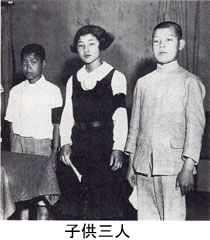
はなし【話】声に出して何かを言うこと。「─をしてはいけない・こそこそ─［バナシ］・ひとり─［バナシ］」筋に従って述べること。「─がうまい・─上手・─べた・─方・お─中・（お）─にならない〔＝述べる価値が無い。問題にならない（ほどひどい）〕・─〔＝事実の裏づけの無い、単なるおしゃべり。作文〕として聞く・─半分としても」話・す（した）内容。「─が合わない・つまらない─・子供の─によると・─がうま過ぎる・─〔＝物事の道理・事情。他人の言い分を聞いて、その真意〕が分かる人」話題。「その─はもうやめて・─を変える・─変わって〔＝さて〕・ばかげた─〔＝事柄〕さ・全くひどい─〔＝事〕だ・それはこういう─〔＝事〕だろう・そうなれば又─が違う〔＝全く別問題だ〕・うまい─〔＝金もうけになる事〕は無いかね」相談。交渉。「─が・まとまる（つく）：─を・決める（つける）：それでは─が〔＝最初の約束と〕違う：─を・進める（詰める）：...というのなら─は別だが・─に乗る：結婚─［バナシ］」うわさ。「もっぱら...という─だ・彼の─で持ち切りだ」作り話。物語。〔狭義では、落語を指す〕「長い長い─：一口─［バナシ］・昔─［バナシ］・お伽─［トギバナシ］・三題─［バナシ］」は、「〈噺・〈咄」とも書く。
「うわ」
「が二つもついて、よっぽど嫌な話なんですよ、可哀相に」
ぬっと（副）急にその場所に・現われ出る（来て何かをする）ことを表わす。「目の前に─大男が現われる・横から─手を出す」その場所に居ながら何も・言わないで（しないで）いることを表わす。「御用聞きが─立ったままでいる・─突っ立ってばかりいないで少しは働けよ」
「もうさんざんですね」
「新解さんはずいぶんこれを言われたんでしょうね」
「いい人なのに」
た・りる：【足りる】（自上一）十分（で）ある。必要なだけ有る。「指に足りない〔＝指の大きさほども無い〕一寸法師・互いに足りない〔＝欠点のある〕所を補い合う・少し足りない〔＝頭の働きが十分でない〕奴［ヤツ］：自覚・（突っ込み・認識）が足りない」...する（だけの）値うちが十分ある。「信頼するに─男：問題とする・（取る）に足りない」...するに十分である。まにあう。「五千円あれば一週間は何とか─・用が─：事─」
「私心配です。このままじゃ新解さん、サラ金に行くんじゃないでしょうか」
あわせ てアハセ─（副）【合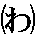せて】数量を合計すれば以下のようになる、ということを表わす。「男女─二十人・支払いは先月分と─三千円になる」【併せて】前件と後件とを同時に考慮の中に入れる、ということを表わす。「一連の発言を─考えると・心からお祝いを申し上げ、─〔＝それと共に〕今後の御発展を祈り上げます」
「ほら、さっきは五千円だったけど、三千円ですよ。しかも先月分と合わせて」
そう そうサウサウ（副）無制限に続くものではないということを表わす。「いくら好きだって─〔＝そんなにたくさん〕（は）食べられまい・─〔＝そんなに〕長年月のことではあるまいと思う・─〔＝そんなに何度も〕ねだられても無いものは無いのだ・─〔＝そんなにいつまでも〕居［イラ］れるわけのものじゃあるまい」
（感）忘れていたことを思い出した時に使う言葉。「─、いつかの千円を返してくれないか」相手の言った言葉に同意することを表わす。「─〔＝そうだ、そうだ〕、おっしゃる通りに違いありません」
「いよいよ、貸金の取り立てです」
「もうぎりぎりです」
「でも、辞書の仕事してるんだから、大丈夫だと思うんだけど」
ど だい【土台】建築物の基礎（として使用される材料や構築物）。「─石〔＝土台の下に密着するものを『布石』と言い、柱の直接下に来るものを『沓［クツ］石』と言う〕・橋の─」木造建築の柱の下に置く横木。〔物事の基礎の意にも用いられる。例、「─を・固める（崩す）」〕（副）〔口頭〕そのような考え・態度・性質・傾向を本質的に備えていることを表わす。「─僕は原稿料を収入と考えたことがない」根本的な欠陥や力の差、性格の違いなどが有って全く問題にならない、という主体の判断を表わす。「彼我の力関係は大将と二等兵、横綱と取的［トリテキ］のようなもので、─勝負にならなかった」
「だめですよ新解さん、ヤケになっちゃ」
「いや、ヤケじゃあなくて、新解さん、芸術家なんだよ」
「だってお金がなくて苦しいのに。先月分と合わせたって三千円ですよ」
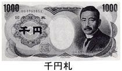
いっそ（副）〔どう・やっても（考えても）うまく行かず思い悩んだ末に〕普通の人ならば二の足を踏むような・積極策（消極策）をあえて取ろうという決意を表わす。「─〔＝思い切って〕休もうか・こんなに苦労ばかりするなら─〔＝ままよ〕死ぬか・幼い時から─〔＝全く〕不幸の連続だ・─の事〔＝どちらかと言えば〕日本料理店がよくはありません？」
「いけません、ままよなんて、新解さん！」
「早まらないで！」
おそかれ はやかれ、─【遅かれ早かれ】（副）遅い早いの違いは有っても、いつか必ずそのような事態に立ち至ることだけは疑い無いという判断を表わす。「─一度は死ぬのだ」
「ちょっと文豪、私、一一〇番に電話します」
「いけないなあ。そりゃあ一度は死ぬけど、一度だけだからなあ」
「新解さんは二、三度あると思ってるみたい」
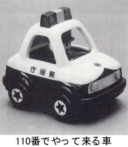
ひょっ と（副）その事態が必ずしも期待したものでなかったことを表わす。「出先で─私の耳に入りましたので」物の弾みでそうならないとは限らないことを表わす。「─（したら）まだお目にかかれるかも知れないと思って、やって来ました・─して〔＝もし万一〕私が明日にでも死んだら、お前はどうする積りだ・─すると〔＝成行き次第では。考えようによっては〕」
「どうする、ＳＭ君」
「私こわい」
「お前はどうする積りだ」
「でもいきなりそう言われたってねえ。私だって都合があるわ」
「急に冷めたね」
「新解さん、ときどき怖いです」
あく ねん【悪念】 人を殺してやりたいとかだましてみせようなどと、心の中に起こってはまた消える、悪い考え。
「この、心の中に起ってはまた消えるという、また消えるというところが、何か感じが出てます。これきっと自分のことです」
「うん、ブキミ感がちゃんとあるね。それを正直に出せるところが、やはり可愛いと思う。ある意味で、アンリ・ルソーとか山下清の絵だなこれは」
「え......」
「可愛さとブキミさって、裏腹なものがあるよね」
きり（副助）〔口頭〕関連するのはそれだけで、他には及ばないことを表わす。「机が一つある─の部屋・一人─で住んでいる・もう百円─残っていない・あの人は中学─行っていない・返事はまだ君からっ─もらっていない」関連する動作・作用はその時点で終わり、本来期待される動作・作用がついに行われないことを表わす。「朝出かけたっ─まだ帰らない・アメリカへ行った─、向こうに住みついてしまった・大きくなった─で、もとにもどらなくなってしまった・彼とは去年クラス会で会った─だ」〔接尾語のように使うことも有る。例、「丸っ─分からない・あれっ─か？」〕
「困っちゃった」
「どうするんでしょう」
「でも何でしょうこれ、もどらなくなっちゃったものって」
「何か可愛いものだと思う。ちょっとブキミで」
「棒みたいなものかな、竿みたいな」
「とは限りません！」
じっ と（副）─する 動きを止めて・いる（何かに集中したり局面の展開を待っていたりする）ことを表わす。「その針は─とまっているように思われた：─・見つめる（目をつぶる）：─聞き耳を立てる・なにごとかを─考えはじめた・長椅子［イス］にもたれたまま、─動かなくなった・不安げな目つきで─立ちつくしていた・─出獄の時を待った・こっちも、─などしておれん」
「ほら、怖いんです」
「これは別に暴力じゃないんだけどね」
「ブキミなんです」
て かげん【手加減】 物の取扱い方のこつ。「味のつけ方に─が要［イ］る・女学校は初めてなので─が分からない」
物事を一律にきびしくするのでなく、その場に応じて適当にはからうこと。手ごころ。「─を加える」手に感じる重さや握りぐあいなどで、その物の分量や中身をはかること。目分量
「誰ですかこの人。こんな怖い人見たことがない」
「とにかく行為に及んだんでしょうね。見えないけど」
「でもはっきり見えます。手とか皮膚だけアップで」
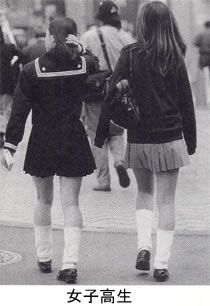
ひと とおり─トホリ【一通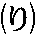】（副）ともかく当面の用が足りる程度に、そろっていたり大体の内容にわたっていたりすることを表わす。「一週間ばかりしたら学校の様子を─はのみ込めたし、宿の夫婦の人物もたいがいわかった・校長は─おれの説明を聞いた・品物に─目を通す・授業は─すんだが、まだ帰れない」人が普通見聞きしたり経験したりする程度のものであることを表わす。「当時京都の町は─ならず衰微していた・─の苦労ではない」
「この人はいったい何者ですか」
「学生じゃないの、新入生」
「いや、怪しいです。私は違うと思う」
「じゃあ誰」
「これは広域連続強盗です」
どっぷり（副）─と 液体を十分に含ませたり湯水などに十分に浸ったりすることを表わす。「おそばのタレは、たっぷりとつけたい。たっぷり、というより─といった方がいい」その中に浸り切っている自分と、その世界とが、もはや分離出来ない状態になっていることを表わす。「仕事に─つかり出したのは、新しい会社を始めてからですね・悪に─つかる」
「ブキミだと思いませんか。この食べ方」
「どっぷりね」
「いったんたっぷりつけて、そのあとさらに深くどっぷりつける」
「何だかこね回して食べてるみたいだね」
「でもやっぱり芸術家です、新解さんは。説明にドキリとします。私、辞書引いてドキリとするのははじめてなんです」
「そうだ。可愛さとブキミさも裏腹だけど、ブキミと芸術も裏腹だからね」
「そうすると腹が合計三つになっちゃって、どうなるんでしょう」
ごそ ごそ（副）─と ─する 耳に立つ音をさせて、何か・（だれか）が動き回ることを表わす。「家の外で─していると、くたびれますわね・何かが顔にあたった。いやに─する。タオルにくっついていたのは、キリギリスであった」こわばった（粗い）物に何かが触れて出す音の形容。「─と財布を出しかけたところ」
「びっくりです」
「キリギリスですよ」
「キリギリスって、そんなにタオルにつくもんですか」
「芸術だねえ」
やにわ にヤニハ─（副）〔「矢庭」すなわち、矢を射た・（矢に当たった）その場所で、の意〕何かをしたその場で一気に次の行動に移ることを表わす。何かをした途端、ふと思いがけない行動に出ることを表わす。「隅田は鼻ごえで、同じことばをくりかえしながら、帽子もかぶらず、─、外へ出て行ってしまった」
「芸術です」
「やにわに隅田です」
「この、同じ言葉を繰り返しながらっていうのが、いいですね」
「どんな言葉でしょう」
「永遠の謎です」
「帽子もかぶらずに」
ぼさっ と（副）─する しなければならない事を忘れていたり仲間からひとり取り残されたりして、しまらないことを表わす。「駅から花屋に出る四つ角には交番があるのだが、管内の出来事には鈍感な警官が─立っているだけであった」
「これはもう文学ですね」
「ぼさっと一言に、これだけの物語があらわれる」
と、書いていてもキリがないわけで、もうこれは一つ一つここに書くというより、映画化するのが一番である。私は十時間くらいの超大作を考えている。「新明解国語辞典」超オムニバス映画。
たとえば、第一話、タイトル「ぼさっと」。駅から花屋に出る四つ角の交番である。警官がぼさっと立っている。管内の出来事に鈍感な警官である。今日もまたきのうと同じように、通行人があれこれ通っている。
いいですね。想像しただけでたまりません。
たとえばタイトル「時を置いて」。裸の男女が愛し合っている。いつの世も果てしなく人類がなしてきた男女のおこないである。ほどよいところで映像が消えて字幕が入る。「時を置いて」。そしてまた裸の男女が愛し合っている。
いや、私にはテーマパークの計画もあるのだ。千葉の幕張メッセの隣辺りに、忽然とそれは建っている。巨大な門の上には「新明解国語辞典」のネオン入り大看板。......略......門を入ってしばらく行くと、和風の家があり、玄関がある。玄関わきに草が生えていて、体格のいい男がしゃがんで草むしりをしている。誰だろうと思って近づくと、玄関の柱から、
「すなわち」
という文字板がストンと出てくる。同時に男がゆっくりと顔を上げる。西郷隆盛である。西郷はまた顔をもどして、いつまでも草むしりをつづけるのであった。
第三章 見えてきた新解像
そんなわけで、新明解国語辞典は映画化され、テーマパークも出来た。でもそれで終りとなるような辞典ではない。何しろ攻め込む言葉のジャングルだから、その奥へ踏み込めば踏み込むほど、ねばねばどろどろ、ねちねちむにゅむにゅ。
春のＳＭ報告が来た。ご存知縛り叩きと同じ頭文字のＳＭ君である。本当は会社勤めで、編集ではなく営業にいるのだ。その意外性がＳＭである。
「営業って面白い。だって本というのは、売れてはじめて輝きますもの」
といって仕事にいそしんでいる。
文豪、こんにちは。
春のＳＭ報告が出来たのでお送りします。
今回わかったこと。
新解さんは、魚好きである。→これは「おいしい、うまい、美味」コーナーをご覧いただくとよくわかります。辞典なのに、自分の好きなものには、おいしいだの、うまいだの言っています。いいんでしょうか？ おいしいものは別に桃だけじゃないです。コーヒー牛乳だっておいしいと思います。
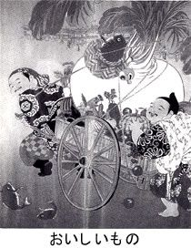
どれどれ、報告書を見てみよう。
おいしい、うまい、美味コーナー。
はく とう─タウ【白桃】〔「黄桃［オウトウ］」と違って〕実の肉が白い桃。果汁が多く、おいしい。一玉
かも【〈鴨】ニワトリくらいの大きさの水鳥。首が長くて足は短い。冬北から来て、春に帰る。種類が多く、肉はうまい。〔ガンカモ科〕〔転じて〕御（ギヨ）しやすい相手や、いいもうけの対象として利用される相手。「いい─だ」は一羽【──が〈葱［ねぎ］をしょって来る】すぐ鴨鍋（ナベ）にして食べられる意から、注文通りでこんな都合のいい事は無い意に用いられる。
いしなぎ スズキに似て大きい深海魚。幼魚はからだに茶色と水色の縦じまが有る。夏期が最もうまい。肝臓から肝油をとる。〔ハタ科〕普通、「石《投」と書く。一尾・一匹
あこう だいアカヲダヒ【あこう〈鯛】〔赤魚の意〕タイに似た深海魚。顔はいかついが、うまい。〔カサゴ科〕一尾・一匹：一枚
たしかにそうだな。うまいというのは個人的な問題である。私は里芋の煮物を最高にうまいと思う。でも家内は、あんなもの、と言っている。だからわが家では辞典なんて出来ない。
いやここでそういうことをいってもしょうがないが、そうなんだ、そこが変なんだ。これはレッキとした辞典である。辞典というのは言葉の意味の多数決を発表するもの。というのが常識。でもそんな選挙結果など待たずに、自分の投票内容をどんどん公表してしまう。新解さんはそういう人だ。
多数決は義理飯みたいなものであることを体で承知している。そりゃそうだな。多数決というのは頭の計算方式だ。でも新解さんは絶対に体の人だ。匂いでわかる。
あこう鯛は、顔はいかついが、うまい。あくまで自分が食べる対象である。じゃあ鯛は、と思って引いてみると、うまいとも何とも、味のことは書いていない。きっと好みじゃないんだな。それとも鯛は食べ物なんかでなく、あくまで目出度いことのシンボルだと規定しているのだろうか。
あか がい─ガヒ【赤貝】海でとれる二枚貝の一種。貝殻は心臓形、肉は赤くてうまい。〔フネガイ科〕一枚
【 】
】
凄い字だ。これでおこぜと読む。
おこぜヲコゼ【〈】背びれに毒のとげが有る近海魚。ぶかっこうな頭をしているが、うまい。〔カサゴ科〕一尾・一匹
うまいといわれるのは有難いが、ぶかっこうな頭だなんて大きなお世話だと、ならいうんじゃないだろうか。
【鱈場蟹】
なるほどたらば蟹というのは鱈の場の蟹だったのか。
たらば がに【〈鱈場〈蟹】北方の海でたくさんとれる、カニによく似た節足動物。大形で肉がおいしく、缶詰にする。〔タラバガニ科〕一匹
缶詰にしない鱈場蟹だっているんじゃないかと思うが、こう断言しているのを見ると、ひょっとしてこれは鱈場蟹の生態系に組み込まれているのだろうか。ブリなどは成長の過程でイナダとかワラサとか名前が変っていって最後にブリとなる。鱈場蟹もそうやって最後に「缶詰」となるみたいだ。
【鼈】
すっぽんである。
すっぽん【〈鼈】日本南部の泥沼や川にすむ、カメの一種。甲らは丸く柔らかで、かみついたら離れない。吸い物にして、美味。〔スッポン科〕花道の七三〔＝舞台へ三分、揚げ幕へ七分〕にある穴。役者をせり出したりする。は一匹
私も鼈とはどんなものかと鍋をいちど食べたことがある。そのときは美味しくはなかった。でも精がつくといわれた。でもここでは精のことはあえて触れず、美味、とだけ言っている。あえて触れずに。
はまぐり【〈蛤】〔浜栗の意〕遠浅の海にすむ二枚貝の一種。食べる貝として、最も普通で、おいしい。殻はなめらか。〔マルスダレガイ科〕「─刃［バ］〔＝刀のしのぎと刃の間にハマグリのような形にふくらみをつけたもの〕」一枚
最も普通？ あさりが普通で、ちょっと下がしじみ、上がはまぐり、と思っていました、わたし。
というＳＭ但し書がついている。そう、値段もその通りで、ということは新解さんは上流である。しかし漢字で浜栗とははじめて知った。何だか縄文時代の海辺の砂浜が一気に目の前に浮かんだ。
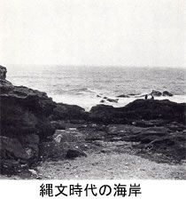
ひきつづきＳＭ報告。
新解さんって、苦労人ではないか→世の中に対して、なにかさめた目を持っています。
新解さんは出版に対して厳しい。また、本が好きだ→例えば、買漁るの用例は「古本を─」だし、お金がない時は本を読んでいるようです。本が好きだけど、世の中で本を出している人に対しての態度が嫌味な気がします。例えば「売文」「ブックメーカー」です。「上」の用例で「形の─では共著になっているが」とあり、過去につらいことのあった人のように思えます。
うん、だんだん、次第に、新解さんの人格が見えてきているような気がする。謎の新解像というものが明かされてくるような予感がふくらむ。新解＝苦労人説を見てみよう。
かい べんクワイ─【快便】大便を排泄（ハイセツ）したあと、さっぱりした状態になること。
この「さっぱり」というところに、それまでの苦労を振り返るような、苦労人でなければ出てこない実感がこもっている。コンパクトな苦労の代表例。
すいしゃ べん【水〈瀉便】しゅうっと出る、激しい下痢。
今度は「しゅうっと」というところ、これは「さっぱり」とは違って、苦労の瞬間、苦労そのものである。
ふ せい【浮世】善き意志が必ず正当に報いられるとは限らず、むしろ悪（アク）の論理が罷（マカ）り通るかに見える、この世。
こうなる。じつにさめている。たんに善意ぶったりはしない。浮世の底にじーっと沈んで見ている目つき。
ふつ ふつ【沸沸】（副）─と 何かが煮えたぎったり水がわき出たりすることを表わす。抑えがたいものの勢い、ことに人間の欲望・意志・感情などが醱酵（ハツコウ）に醱酵を重ね、爆発寸前に至ることを表わす。
危ない。爆発寸前は、やめて下さい。しかしその寸前にまで、それまでの苦労が勢揃いしている。その寸前の苦労がここでは迫る。
ひ だるま【火《達磨】からだ全体に火がついて燃え上がった状態。
いや、わるいけど、この項目を読んだとたん、噴き出してしまった。それはそう、確かにそういう状態には違いないんだけど、その状態のままたんたんと説明している様子を思い浮かべてしまう。この「状態」で五年、十年、あるいは一生をやり抜くことを考えた場合、苦労の集積がついにはさめた目に至るのであろうか。
だって（接）〔口頭〕〔自分の行為を非難する相手の言葉に対して〕それは実情を知らない人の言う事だ、無理な事であると、自分の立場を正当化することを表わす。「なぜ遅刻した？・─ストライキで電車が来ないんですもの」
（副助）特殊・（代表的）な場合を例示し、他の場合も同様であるということを表わす。「私─〔＝でさえやはり〕いやです・安いの─〔＝でも〕結構使える・そんな事は親に─〔＝さえ〕話せません・君─僕─〔＝われわれは皆〕同じさ・洋服─靴─〔＝身のまわりの物は〕みんな兄貴のお古だ」〔疑問・（最小単位）を表わす語に付いて〕例外無くそうであることを表わす。「なん─出来る・どこへ─行ける・だれ─知らない・彼はいつ─家に居ない・一度─来ない・一日─休んだことは無い・一円─借りはしない〕
この「みんな」というところに力がこもっているように思う。新解さんは次男なのか。いつも洋服の袖が擦り切れていて、一度くらいは新品の洋服を着たかったことだろう。
なか・す：【泣かす】（他五）泣くようにする。「昔、よくいじめて泣かしたもんだ」〔口頭〕涙が出るほど感動させる。「本当にくれるのか？─なあ」
何をもらったのだろうか。いままで誰一人として、何一つとして、パチンコ玉の一粒だってくれなかったのに。
に・げる：【逃げる】（自下一）追われてつかまらないように、遠くへ去る。のがれる。危険な・（自由を縛る）ものから、離れる。「刑務所から─」めんどうなものに近づかないようにする。断わる。「いやな仕事を─」〔競馬・競技で〕追いつかれないうちに勝つ。「〈遁げる」とも書く。
これは苦労だ。苦労だけど、いけないことである。しかしいけないことでも時と場合によってはしなければならないというところに、本当の苦労人の苦労があるのだろう。苦労のプロ。
しん いり【新入】新しく・仲間（刑務所・留置場など）に入ること。また、入った人。
ほら、完全にプロである。いまは辞典を作っているけど、辞典掲載の森羅万象を知るために、世の中のあらゆるところをくぐり抜けてきている。いままでにどれだけの罪を重ねてきたことだろう。いや断定してはいけないが、そんなことは人には言えないという二重の苦労がうかがえる。
かん こうへん─カウ─【肝硬変】肝臓がかたくなる病気。治りにくい。
いきなり「治りにくい」である。肝硬変の人は読まないように。いや、もう読んだか。そりゃあ刑務所までくぐり抜けて、いやくぐり抜けたときめつけるわけではないが、そういう苦労の中で肝硬変にもなるだろう。もうこれ以上のムリはお控え下さい。
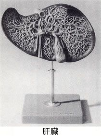
お あずけ─アヅケ【《御預け】飼い犬などを訓練して、その前に食物を置いても主人が許すまでは食べさせないこと。そうするという約束だけで、実現しないでいること。「─を食う・結婚は当分─だ」
そう言ったのか、言われたのか。この言葉づかいでは男性発言のようであるが、結婚というのは苦労の象徴のようなもの、であることもあり得るということは、苦労のプロでなければわからぬことだ。
た むし【田虫】白癬（ハクセン）の俗称・輪状のあとをつけて広がり、非常にかゆい。
そうです。非常にかゆい。苦労したものでなければわからない。田虫などというのはそれこそ治りにくく、そのくせそれで死ぬわけではないので人から同情もされぬ。「非常にかゆい」という実感的説明のところに、その苦労人本人による明解パワーを感じる。新解さんの場合、本当はこの田虫の上に「陰金」というのが付くんじゃないか。
ふと（副）何かの拍子に偶然思い出したり理由も無くそうしたい思いに駆られたりなどすることを表わす。「─心にかすかな痛みを感じた・─興味を覚えて尋ねた・私は、─我慢もならずに泣き出したくなった」何の気無しにそのような動作をしたりまた思いがけない折に何かの情景が耳目に入ったりある表情に接したりなどすることを表わす。「子供の顔に─かなしげな、人恋しげな表情のあらわれることがある」「不図」は、借字。
たかが「ふと」の用例に泣き出してしまう。プロの苦労人にも、そうなるときがあるのか。用例はさらに、
「子供の顔に─かなしげな、人恋しげな表情のあらわれることがある」
となるから、これはもう明らかに新解さんはバツイチを経験している。もちろん子供は前妻が連れて行った。そのあと家裁に何度も通ったり、慰謝料を工面したり、プロの苦労人はこのようにして鍛えられていったのであった。
はじ・ける：【《弾ける】（自下一）〔熱などが加えられたために〕表面にひびが入って来て、割れ目が出来る・（割れて、飛び散る）。「豆・（ゴマ）が─：パチパチと─火事場特有の音・才弾けた〔＝頭の回転が速くて・とてもついて行けない（警戒しなければならない所が有る）〕人」はぜる。
こういう用例がすぐ出るところ、まさか放火の常習犯じゃないでしょうね。それだけの苦労を重ねて【沸沸】となってくるのはわかるけど、まだ【火達磨】のわけではないんだから、やけを起してはいけません。
ひとり【一《人】人の数が一（イチ）であることを表わす「─も居ない〔＝人の数が零である〕」（相手・配偶者が無く）自分だけで・居る（する）こと。「─遊び・─とは寂しいな・彼はまだ─〔＝独身〕だ」「ひとり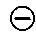」の状態に在る人。「ふたりやって来たが、─は帰った」ふたり付表「一人」。は、「独り」とも書く。
（副）その者だけ・で（が）そうすることを表わす。「私は─堀端［ホリバタ］に出た・四十年前のことを思い出して、私は─心の中で赤面しました」ただそのものだけに限られるという主体の判断を表わす。「これは─吾々［ワレワレ］洋学者ばかりでない、日本国中の刀を皆［ミン］なうっちゃってしまうということにしなければならぬ」
やっぱり何か隠していることは事実であろう。ＳＭ注記では、一・二・三版ではこの用例文はないという。四版の年齢に達して、やっと赤面のユトリができたのだろうか。それにしてもその思い出したこととは。
じ てん【時点】時間の流れの中の、ある一点。〔時刻と異なり、分・秒まで表わされていることを、必ずしも要しない。また、異なる日の同時刻は、時点としては異なるものと見なされる〕人間・自然の営みと共に在り、実社会の動きや自然の推移と切り放すことの出来ない、時間の一点。「現─で望み得る最善の方策・一月九日の─では、その事実は判明していなかった」
一月九日である。それははっきりしている。でもそれが何なのかはぜんぜんわからない。一月十日にはわかったのか。辞典なのに新聞みたいだ。ＳＭ注記によると、これも一・二・三版にはこの用例がなく、四版ではじめて出てくるという。何か私小説を感じる。
よの なか【世の中】同時代に属する広域を、複雑な人間模様が織り成すものととらえた語。愛し合う人と憎み合う人、成功者と失意・不遇の人とが構造上同居し、常に矛盾に満ちながら、一方には持ちつ持たれつの関係にある世間。「物騒な─・─〔＝現世〕がいやになる」現在の時点・環境を、これまで経験してきた環境となんらかの意味で比べて批評して言う語。時代。時節。「せちがらい─だ・大変な─になったものだ・今は原子力の〔＝原子力が必要とされる〕─だ・実力の〔＝実力が物を言う〕─」
ＳＭ「どきどきしますね、この説明は」
という注記があった。たしかにそうだ。世の中の全遺伝子がこの一項目に凝縮している。苦労があり、さめていて、なおも苦労があり、無限苦労の永久運動。常に矛盾に満ちながら、というところがたまらない。それでいて持ちつ持たれつの統一があり、背の高い人と低い人、体重の重い人と軽い人、駅から遠い人と近い人、満腹の人と空腹の人、便秘の人と下痢の人。
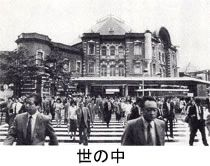
これがしかし一・二版では、もっとそっけなく簡単に片付けられている。
よの なか【世の中】人びとが互いにかかわりあいを持って住んでいる所。世間。社会。「物騒な─・─〔＝現世〕がいやになる」時代。「もう─が変わった・今の─は実力の─だ・原子力の─」
ずいぶん違う。あまりにもあっさりしているというか、まだ世間を知らないというか、苦労の味に鈍感というか、ただの書生文というか。いずれにしろこの後に新解さんは苦労人となったようだ。そしてさめてもきたのだろう。
じっ しゃかい─クワイ【実社会】実際の社会。〔美化・様式化されたものとは違って複雑で、虚偽と欺瞞［ギマン］とが充満し、毎日が試練の連続であると言える、きびしい社会を指す］
ＳＭ「読んでいてつらい気持になりました」
そうですね。「世の中」も大変なところだけど「実社会」も凄いところだ。虚偽と欺瞞とが充満し、酸素マスクがなければとても歩けないような、しかしそこを無酸素登攀するのが人間であり、しかし新解さんは苦労して鍛練の結果、この世の中を一種の大きな内燃機関としてとらえる境地に達したのではないだろうか。虚偽と欺瞞とが充満し、毎日の試練の連続で巨大モーターは回転していく。町角には行く先々に、虚偽と欺瞞のガソリンスタンドが建っている。それをタンクに入れてもらって、支払いは現金かチケットか、いずれにしろそういう矛盾のパワーの燃料補給は充分になされて、むしろこの世に虚偽と欺瞞がなかったら世の中は存在しない、動かない、といっているのではないだろうか。
よも や（副）〔「よも」に感動の助詞「や」の付いたもの〕万が一にもそのような可能性は無いはずだ、という主体の判断を表わす。「─あの老練な人がその道に手ぬかりなどの有ろうとは思われない・世間にはいろいろな人間がいるし、─と思うような出来事があるもんだ、ほんとだぜ小屋頭」
いきなり小屋頭である。小屋頭もこういわれている。よもやの用例で、思わず世間が出てくるのである。ほんとだぜ、といわれてしまった。私もほんとなんだろうと思う。しかし辞典の中でいきなり「ほんとだぜ」と呼びかけられても、返事のしようがないじゃないか。
もう一つの、新解さんが出版に対して厳しい、というところを点検してみよう。
ばい ぶん【売文】（つまらない）小説・評論などを書き、その原稿料・印税によって生活すること。「─の徒」
はい、それはそうでしょう。小説・評論の頭に（つまらない）とあるところが、単刀直入である。ほとんど短刀直入みたいで、ドキリとしないのは原稿料をもらってない人だ。しかしねえ、ソ連や中国でも自由経済が導入されているこんにち、売文という言葉の特殊性はずいぶん薄れてきている。考えていたら、何だか売文と売春と重なってきてしまった。売春はいけないことだが、いまでは高校生まで「─の徒」と化しているというし、売文という言葉も、その言葉だけが干物みたいに乾燥してきて、棚の上に置去りにされている。
ブックメーカー〔bookmaker〕〔金もうけのために〕（安っぽい）本をやたらに書く人。
これである。ミもフタもない。金もうけ、安っぽい、やたら、というのがびんびん輝いている。どうも新解さんは金と文章とをくっつけたくないようだ。本とか文章というものから、金の粘液を全部洗い落したい気でいるのがわかる。
すく・う：スクフ【救う】（他五）危険・（困窮）状態や悪い環境、貧しい境遇などにある人に力を貸したり励ましたりして、そこからのがれられるようにしてやる。「危機・（窮状）を─：貧民を─〔＝物・お金を与える〕・青少年を不良化から─・世を─〔＝世の中の悪い状態を直す〕・救いようの無い絶望感」【救い難［がた］い：】（形）どんな点から見ても、いい所が無い。「─駄作」どんな方法を講じても、良くする見込みが無い。「─連中」「度［ド］し難い」の意の和語的表現。【救われない】希望が無くて、明るい気持になれない。
うわあ。
うえウヘ【上】高い（方にある）・こと（所）。「玄関から─〔＝室内〕へ上がる」下〔地位・能力・数量などの程度が〕高いこと。まさっていること。「─に立つ者・─の人〔＝上司〕に話す・腕前が─だ〔＝すぐれている〕・三つ─〔＝年上〕の兄」外に現われている所。表面。「湖の─を照らす月・紙の─に現われない〔＝言外の〕意味」
〔造語成分的に〕身分が極めて高貴であることを表わす。「─様・紫の─」特定の関係にある長上に添えて言う語。「父─・姉─」
〔形式名詞的に〕...に関することを表わす。「形の─では共著になっているが・気持の─の圧迫感・二人の遺児の─を思って暗然たる気持になった：身の─話」それが成立の・条件（基盤）になっていることを表わす。「もとより・覚悟の─です・見た─で〔＝見てから〕決める・酒の─〔＝飲酒が過ぎた結果〕の失敗・見られた─〔＝以上〕はしかたが無い」何かに、それを加えることを表わす。「しかられた─に罰金まで取られた：慎重・な（の）─にも慎重を期する」
が、何かあったんですね。形の上じゃない、形の下で、何か物凄い暗闘があった。共著になってはいるが、が、あいつなんか何もせずに全部俺が書いたんだ、とはいわないけれども、何か著書をめぐる、もうあいつとは付き合わないよ、があったのではないだろうか。
どく しょ［読書］─する〔研究調査のためや興味本位ではなく〕教養のために書物を読むこと。〔寝ころがって読んだり、雑誌・週刊誌を読むことは、本来の読書には含まれない〕「─家・─力」〔古くは「とくしょ」〕
これが一・二・三版で、四版では次のように。
どく しょ【読書】─する〔研究調査や受験勉強の時などと違って〕想（ソウ）を思いきり浮世（フセイ）の外に馳（ハ）せ精神を未知の世界に遊ばせたり人生観を確固不動のものたらしめたりするために、時間の束縛を受けること無く本を読むこと。〔寝ころがって漫画本を見たり電車の中で週刊誌を読んだりすることは、勝義の読書には含まれない〕「─家・─力：─百遍」〔古くは、「とくしょ」〕
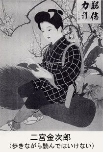
勝義なんて誤植じゃないかと思ったが、
しょう ぎ【勝義】〔転義やひゆ的用法でなく〕その言葉の持つ、本質的な意味・用法。
というわけで、ちょっと私の方に学がなかった。
しかし「読書」はさすがに凄い。さっきの「世の中」も凄かったが、読書となると何だか自分の宗教の教義について書き記すような、一字一句ないがしろにはできないというような、負けてなるものかというような、千秋楽、もう絶対に星は落せないぞというような、磐石の構えというか、正攻法のきわみというか。
寝ころがってはいけないし、漫画本はいけない。電車の中もいけないし、週刊誌もいけない。いやいけないわけじゃないが、それらは読書とはいわない。とにかくこれだけは譲れないというような新解さんの迫力というか、何か力みさえ感じられた。読書・本の世界というのは、新解さんにとっての聖域であることはたしかだろう。
いっ き【一気】「ひといき」の意の漢語的表現。【──〈呵成［かせい］】〔文章などを、ひといきに書き上げる意〕調子が出た勢いで、仕事をいっぺんに済ましてしまうこと。「─に仕上げる」【──に】（副）途中で休んだり何回かに分けたりしないで、続けざまにし終えることを表わす。「七時間の『モーツァルト』を─放送」間を置いてぽつりぽつりと事を行うのではなく、ほとんど一斉に事が決せられることを表わす。「─十四代表名乗り」ある事が契機になり、以前からの懸案を図らずも達し、問題を解決したり局面が展開したりすることを表わす。「従来の辞典ではどうしてもピッタリの訳語を見つけられなかった難解な語も、この辞典で─解決」それまでの状況にかかわらず、ある時点から・短時間（瞬時）に決定的な展開が見られることを表わす。「相手が手で腹を押えた瞬間、今度は彼女がスルスルと─スパート、あっさりと振り切ってゆうゆうとテープを切った」
いや、チャッカリしている。宣伝が入った。さっきはちょっとあんまり正しすぎて敬遠しかけたが、けっこう茶目っ気がある。本や出版のことには厳しいけれど、まあそれはそれ、となるところがどうにも新解さんというか、まあコノ。
だんだん新解像というのが明らかになってくる。明解になってくる。でもそれはすべての解決に向かうというのではなくて、新解さんの過去にひそむ、新解さんの奥底に沈澱するどろりとした胸毛のようなものが、アップで見えてくるということ。つまり明解になって見えてくるのは、その奥にあるわからなさかげん。深い深い新解の解底に棲んでいる新解魚のようなものが見えてくるのだけど、その形がどうなっているのかまだわからない。
ＳＭ君もそのことに言及していて、さらに報告書が来た。ＳＭ君はこの新明解国語辞典に関しては、スキンダイビングの達人である。息つぎなしで三十分くらい潜れる。いや測ったわけではないが、電車の中でもこの辞典を「読む」おこないをやるらしい。辞典というのは必要な項目だけ引いて、あとはぽんと置いとくものだが、満員電車の中で読みふけるという。手紙にも、
わたしは、辞典はあわれな物のように思うのです。一生のうちもしかしたら、一度も人の目に触れる事が無いとしたら......、と思うと、いてもたってもいられずまるで半分義務のように読むのでございます。
とあって、人が見たら何と思うかしれないが、電車に揺られながら息つぎなしで新解さんの辞典に潜ること三十分、時には一時間の素潜りをやる。そうするとどうしても新解魚の一端に触れることになり、両手両足がぬるぬるしてくる。
文豪、こんにちは。
新解さんのことについてご報告します。
この間の春の報告のあと、感じたものがあります。何かに触れた感じで、もう一度読み直したところ、わたしはあるひとつのものに気付きました。
それは、
「新解魂」というものです。
この「魂」は、ある方向についてすごく強く動き、あることに関してはすごくいいかげんです。
なぜ人名がいきなり出てくるのか、かぞえ方を出す基準、出さない基準というのも説明なしです。
現代社会において説明なしで公の場に出るということは、もしかしたら勇気のあることかもしれません。何でも代理店が代理でやってしまう......、という風潮と対立し、堂々としています。すがすがしさすら感じられます。主は主のやりたいことをすればよくて、主＝代理店ではないのに、今は主の姿も見えずに代理店のやっていることが即「主」のようでくだらないです。
この新解魂は、代理店の入る隙間さえ与えない太い魂だと思います。
そうだったのだ。ＳＭ君は電車の中のスキンダイビングで、その太い魂に触れていたのだ。
太い魂。
私はそれに毛が生えているような気がする。いや、変な意味じゃなくて、何か「生えている」というニュアンスを感じるのだ。
この世に生えるのは毛だけではない。草だって生えるし、木だって生える。つまり植物的な感触である。動物のシンボルが頭であるとすれば、植物のシンボルは胃袋であろう。樹木に胃袋なんてないというだろうが、ある。樹木の胃袋はその根本にあるわけで、土、地面、すなわち大地がその胃袋である。すなわち。
動物は胃袋を抱えて、大地の上をあちこち動く。あちこちきょろきょろで頭脳が発達する。その発達に味をしめて、すべてを頭で考えるようになる。
植物は動かない。胃袋が大きいから動かないし、考えない。じっとしてひたすら生える。さわさわと、もじゃもじゃと、にょきにょきと生えてくる。新解さんのその太い魂は、生えてくるものだと思う。生え抜きである。
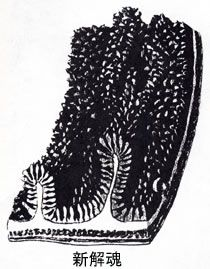
はえ ぬき【生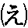抜】その土地に生まれ、その土地で育って、よそへ出たことが無い・こと（人）。「─〔＝きっすい〕の江戸っ子」創業以来ずっと長く勤めている・こと（人）。「─の社員」
そうか、新解さんは江戸っ子か。いや、ぼくには何となく埼玉とか茨城のような気がするんだが。というのも生えた感じが濃いからで、江戸っ子というのは生え抜きかもしれないが、ちょこちょこと頭が動き回っている感じが強い。
新解魂のそういう生えた感じ、生え感というのにはこの辞典の中でときどき接する。
にたり（副）─と 声は出さずに、相手の目を見ながら口もとで、わずかに笑うことを表わす。〔強調形は「にったり」〕
どうだろう。相手の目を見ながらである。かなり生えている。何が、どこに、といわれて答えられるものではないが、言葉では答えずに、口もとでわずかに笑う、というところに、生えてくる感触がある。何だかこちらも新解魚みたいな気持になってくる。生えるのだから、深海のコンブか。
しり【〈尻】腰の後ろ下で、すわる時や腰掛ける時に下に位置する、ふっくらした部位。肛門（コウモン）と尾骨が有るあたり。〔教育的意味で懲戒を加える場合は、古来この部位のみが適当とされた〕「─当て・─が抜ける〔＝長い間着ていたために、尻に当たる部分に穴があく〕」正座した時に、尻の下に当たる、和服の部分。すそ。「─をからげる・─をはしょる」茶わん・瓶・なべなどの下底部で、外物に接する方。移動するものの、後ろの方。あと「人の─について行く・女の─を追いまわす〔＝女につきまとって、愛を強要する〕」長く続いているものの末端。「─〔＝びり〕から算［カゾ］えた方が早い：どん─［ジリ］・幕─［ジリ］・帳─［ジリ］・言葉─ジリ・杖［ツエ］の─〔＝先〕・沼─［ジリ］」
強盗みたいにして強愛というのがあるのだろうか。強愛の場合はピストルや刃物、荒縄など持っている感じだが、窃愛となるとどうだろう。愛の窃盗。よそ見したりしている隙にサッと愛を盗む。時価三億円の愛が盗まれたりする。この【尻】の項目にも生え感はある。追いまわすという動きは動物的かもしれないが、でもつきまとって、強要するというあたり、私は植物の蔦みたいなものを感じる。
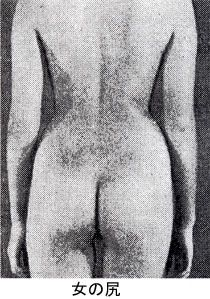
ねば ねば─と ─する 粘りついて容易には・離れないもの（除くことが出来ないことを表わす）。「─した暑熱と、たえまない靴音と、汗ばむ倦怠［ケンタイ］にひたって、すれちがうイタリア娘の腰と足を鑑賞していると...：─を取る」「粘粘」とも書く。
ねばねばの説明のために、これである。イタリア娘の腰と足は、鑑賞の後どうなっていったのか。文中ねばねばの語からはだいぶ距離があるが、その距離をものともせずにとうとう腰と足にまで達してしまう粘りに、やはり植物の蔦のような生え感がある。
よう（助詞・特殊型）主体の意志を表わす。「もう寝─・今出かけ─としている〔＝出かける寸前の状態だ〕」
相手に対する勧誘を表わす。「さあ、食べ─」えんきょくな命令や希望を表わす。「そんなに殴りたいと言うならひとつ殴られてみ─じゃないか」............
さあ怖い、殴る奴より殴られている奴の方が怖いということがある。暴力を発しないでじっと受入れている奴の方がどうにも無気味なのだ。この無気味さは、いまは動くことで生きている動物の、動かない先住植物に対するコンプレックスじゃないだろうか。たかが「よう」の説明に殴りが入って、いやまだ殴られたわけじゃないが、ここにも新解魂の毛の生えた感触がある。
生えてくるものには本音がこもってくるわけで、
わら・う：ワラフ【笑う】（自五）〔うれしい・おかしいなどの時〕目を細め、口許（モト）をゆるめて、やわらかい表情を見せる。「顔で笑って、心で泣く：山─〔＝新芽の出るころの山の様子を言う文学的表現〕・花─〔＝つぼみが開く〕・ひざが─〔＝長時間あるいて坂道を下る時など、ひざががくがくして思うように踏みしめることが出来なくなる〕」
声を立てて「笑う」。「箸［ハシ］がころんでも─年ごろ・おかしいと言っては笑い、悲しいと言っては泣く・笑って、ごまかす・笑って暮らすも一生、おこって暮らすも一生・─門［カド］には福きたる」
〔東京方言〕程度がひどくて、相手にするのもばかばかしいほどだ。「今ごろのこのこ頼みに来るなんて、笑っちゃうな」（他五）あざけりの対象にする。「人の失敗を─・笑わば笑え・陰で─・一円を─〔＝ばかにする〕者は一円に泣く」は、「〈嗤う」とも書く。
隠さずに人間的である。
うれし・い：【〈嬉しい】（形）自分の欲求が満足されたと感じて、その状態を歓迎する気持だ。〔動詞「思う・見る・感じる」などに続くことが多い〕「あの人に会えて嬉しかった・あしたは休みだ、─な・四月から自分も大学生かと思うと、何となく─気持になる・─ね、君のその一言を待っていたよ・あいつもだめだったかと思うと、嬉しくなっちゃう・─悲鳴」悲しい
人間的ではあるが、嫌な人ですね。その嫌な人を正直に、露骨に出すところが、明解へのパワーを秘めた新解魂であろう。
こそ こそ（副）─と ─する 他人に見られない・ように（所で）何かをすることを表わす。「運動会や遠足を欠席して─勉強をし、試験のとき一点でも多くとりたいという浅ましさ」他人に・気付かれ（聞こえ）ないように何かを言うことを表わす。
辞典というのは受験生がたくさん使う。しかし嫌われるのも構わず、そこにズドンとこういう嫌らしいほどの実感を打ち込んで、攻めまくる。
ぼん じん【凡人】自らを高める努力を怠ったり功名心を持ち合わせなかったりして、他に対する影響力が皆無のまま一生を終える人。〔マイホーム主義から脱することの出来ない大多数の庶民の意にも用いられる〕
まあ、それはそうだけど、こうまでいわれてしまうと、その説明が間違っているわけじゃないし、何だかしみじみとしてしまう。このしみじみ感は植物的である。生えるがままというか、生えたものを向上心によって剃り上げたりはしないというか、生えたあと枯れて、それでいいんじゃないかといっているみたいで、これも新解魂の素顔であろうか。
おお かたオホ─【大方】大部分。「入れ代り立ち代り現われて、彼女の財産の─を毟［ムシ］り取っていたようです」
大部分のものが、その傾向を持っていることを表わす。「─の国は、芸術作品の国外持ち出しを規制しています」
〔漢語「大方［ダイハウ］」の和語による文字読み〕世間一般。「─の読者・─の予想どおりになりましたが」
（副）諸般の状況から推して、そういう展開になるものと見て十中八、九まちがいは無いだろう、という判断を表わす。「─そんな事だろうと思っていた・─大丈夫だろう」
怖い。これにはＳＭ注記がある。
なんてひどい奴！ かわいそうな彼女。今、彼女が夜の商売に出ているところがわたしには見えます。
たしかに「おおかた」の説明にこういう話が出てくる新解さんの解底には、何が沈んでいるのかはかり知れないものがある。苦労人でさめてはいるが、うわずみがさめて透き通っている分だけ、その解底には苦労の擦り減らした堆積物がヘドロのようになって、ふとした「おおかた」の説明に、こういう「毟る」などという字が恐ろしい光芒を放つような世界を簡単に取り出す。
ということばかり並べると物凄い恐怖の新解像がビショ濡れになって浮上してくるのだけど、しかしそれは一面。もう一面はころころと可愛いし、さらにもう一面は生真面目。これは子供のリアリズムみたいなもので、残酷さとツブラな瞳が背中合わせに張りついている。すべてを含むのは辞典だから当然のことではあるけど。
えん そくヱン─【遠足】〔見学・運動などのため〕教員が児童・生徒を引率して、交通機関をなるべく利用しないで遠くへ行くこと。
ほら、何だか従順な小動物の、遠くへてくてく歩くさまが目に浮かぶ。
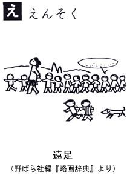
おそ・る：【恐る】（自下二）「恐れる」の文語的表現。「恐るるに足らず」【──恐る】（副）どなりつけられたり笑われたり失敗したりするなどの不結果を警戒して、なかば逃げ腰で（控えめ勝ちに）事を運ぶことを表わす。「─社長におうかがいを立てる・─発売したらこれが大当り・─おとなの生活をのぞく・どんな味がするのか─食べてみた」.........
いいなあ、おそるおそる、おとなの生活。うちのお父ちゃんも、お母ちゃんも、のぞいてみたら、特殊な動物だった。
て じめ【手締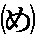】物事の決着や成功を祝って関係者一同が掛け声に合わせてする拍手。シャンシャンシャン、シャンシャンシャン、シャンシャンシャン、シャンと聞こえるように調子を取る。
ああ可愛い真面目さ。生真面目である。シャンシャンをその数だけきっちり並べる。地震がきて壊れても、またきっちりと並べ直すのだろう。略したりするのはいかん。
へそ【〈臍】腹の中央に在る、臍の緒の取れた跡。〔初め出ばっており、長じて引っ込んで穴のようになる〕ほぞ。
〔石うす・櫓［ロ］・などの〕二つの物が重なりあう部分にある、小さな突起。............
長じて引っ込んで、何かしらやんごとなきへそだぞこれは。生真面目というより、それを超えて大真面目である。
どっか と（副）その場に悠然と居座っていて、容易には動きそうにないことを表わす。「彼に立ち向っているあい手は、人間の力をあざ笑うように、─かまえている岩やまばかりではなく、熱帯の暑気と、手のつけようもない湿地と、そのほかに、もう一つ、目に見えないおそろしい流行病があるのです」どっかり。「男は床の間を背負った席に─坐［スワ］り、ハンカチで顔をぬぐった」
ただの「どっかと」である。その説明が生真面目を超えて大真面目に突入して、とうとう目に見えない恐ろしい流行病になってしまった。
どう ぶつ【動物】自由に運動し酸素を吸って生きる生物。他の動植物を栄養としてとる。〔広義では人間を含み、狭義では除く〕植物【──園─ヱン】生態を公衆に見せ、かたわら保護を加えるためと称し、捕らえて来た多くの鳥獣・魚虫などに対し、狭い空間での生活を余儀無くし、飼い殺しにする、人間中心の施設。.........
ＳＭ「新解さんは怒っている」
そう、物凄く怒っている。動物園は日曜祭日などに、一家で楽しく可愛い動物を見に行くところ、そう思っている人は多いだろうが、しかし新解さんによれば、動物園はすべてアウシュヴィッツだ。人権無視はよくいわれることだが、これは動権無視、動物の生きる権利を無視した悪魔のような飼い殺しの施設だ。（注・その後の版では、「捕らえてきた動物を、人工的環境と規則的な給餌とにより野性から遊離し、動く標本として都人士に見せる、啓蒙を兼ねた娯楽施設」となっている）
しかしこの怒りはいったいどこから来るのか。
さっきは新解さんのことを、太い魂に毛が生えているといった。その生えているという感触の濃厚さから、新解さんを植物的であると断定した。その前言をヒルガエすわけではないが、新解さんは動物なのじゃないか。遠くから見るといちおう人間のようではあろうが、そばで見るとその実体は動物かもしれない。この動物園に対する怒りは、人間が書いたとは思えない。ほとんど動物そのものが書いている。新解さんは動物だったのだ。人間の皮をかぶった植物だと思っていたら、植物の皮をかぶった動物だった。
でもそうすると、動物も皮ではないかという疑いが出てくる。この動物の皮を剝ぐと何があらわれてくるのか。
ぼくら路上の仲間に、行動力旺盛で、いらぬ気兼ねなど一切せず、見えるものは何でも食べてしまうという建築家がおり、動物の皮をかぶったケダモノといわれている。そうすると新解さんは......。
しから ば【《然らば】（接）それならば。「─われら何をなすべきか」そうすれば。「恋の本質はけっして性欲ではない。このことだけは私は確信している。─恋の本質は何であろうか」
皆さん、しからばの用例にこれである。恋の本質が出てくる。「このことだけは私は確信している」といってはいるけど、本当だろうか。
恋の本質は性欲のみである。このことだけは私は確信している。
とずばりいってしまっては動物が丸出しになるので、そこのところをこっそり反転して人間のふりをしているように、思えて、ならない。
植物にとっても動物にとっても、生命の宿るところ、性欲は愛であった。愛と性欲は一体化して不可分のものであったはずのものだが、人間が頭を使って「そのこと」を愛と性欲とに分離してしまった。人間がたんに頭の実力を見せたいがために「そのこと」を二つに切り裂いて見せたわけで、これは人間の歴史にとってはユユしき事態だ。人間は大勢いるから、その中には愛があるけど性欲のない人があらわれ、一方性欲はあるけど愛のない人というのがあらわれてくる。おそらく新解さんはこの事態を重く見て、みずから動物の皮をかぶり、その上に人間の皮をかぶって、しこうしてのちにその皮を剝いで見せるという二段仕込み、三段仕込みの酒造り、いや辞典造りをしているのではないか。
手つづきが大変ですね。
かみ くず─クヅ【紙〈屑】その人にとって、捨てること以外には用の無い紙。「─同然・─かご」一片
ああ紙屑。真面目である。おっしゃる通りです。まあ辞典とは本来真面目なものだが、新解さんの場合はその真面目さが際立つ。その下に動物の皮をかぶっているから、真面目さのエッジが切り立つのだろう。その真面目さは頭の働きではない。体が働いて、裸の毛の生え具合まで見せながら、身をもって明解にする真面目さなので、それがどうしても生々しいのだ。生々しい、つまりその言葉の手ごたえが濃い。毛が生えているだけでなく匂いまでする。
辞典というのは頭の働きのてっぺん、無味無臭の極致に置かれるはずのものだが、そこにふっと生々しい匂いがするのだ。よく見ると毛も生えている。人によってはけしからんというだろう。無味無臭無菌のはずの世界に、何だこれは！
でも頭の働きというのは人間の働きの一部分だ。人間は無味無臭ではない。有味有臭の雑菌状態が日常であり、そこからものごとが始まる。ＳＭ君も手紙に書いている。
人は、困った時、夕日を見つめ、
「こんな時、死んだお母さんならどうするのかしら」
とか、事があった時、
「三島由紀夫だったら何と言うか」
と、想像すると思います。
最近のわたしは、
「ああ、新解さんならこれを何て言うかしら」
と思うようになりました。こういうのは何という関係なのでしょうか。きっと新解さんならずばりと言って下さると思います。
ＳＭ君はこの辞典の太い毛の生えた魂に、ほのかな、淡い、何か匂いのする絆のようなものを感じてしまったようである。その絆が恋の本質であるとしたら、しあわせな辞典である。頭だけが働く世界にあって、人に恋してもらった辞典なんて聞いたことがない。
紙がみの消息
巷に氾濫するチラシの生態
町には人の流れがある。広場では人々は右往左往したりするが、通りではだいたい一つの流れになる。その中にぽつんと一人、流れない人が立っている。杭みたいに立っているのは何故かというと、チラシを配っている。
チラシのことは、昔はビラといっていた。いや、昔というのではなくて、商売の宣伝がチラシで、政治宣伝がビラという気がするのだが。
でもやはり、昔はよくビラが撒かれていた。戦時中にはアメリカ軍が空から政治宣伝のビラを撒いていて、それは絶対に拾ってはいけないといわれていた。私は小学校の二年か三年だったが、いまだったら絶対に拾うだろう。空から点々が落ちてくる光景を覚えているような気がするし、それはしかし焼夷弾だったかもしれないし、あるいは戦後になってからのビラの記憶かもしれない。
戦後のそれははっきり覚えている。小型の飛行機からバッと撒かれて、子供たちは争って拾いに行った。道路に落ちればいいのに畑の方にひらひら流れて行って、みんな靴が泥んこになったりした。何か商売のビラだったと思う。
学生になってからアルバイトでチラシ配りをした。そのときはもうビラではなくチラシの感覚だったと思う。路上で道行く人にチラシを渡す。通りすがりの人にさっと渡すわけで、それが女性の場合、ちょうど胸のふくらみのところにニアミスしそうで、それを生きがいにそのアルバイトをやり抜いた。
でもその時代、人々はまだしも純朴だから、だいたいは渡されたチラシを受取っていた。そのあとで道に捨てたり屑かごに捨てたり、あるいは折り畳んでポケットに入れたりするのだけど、とにかく受取るだけは受取っていた。
いまは誰も受取らない。一人二人は田舎から出てきた人のいい人が受取るだろうが、ふつうはもうつまらないものだとわかっているので、私だって受取らない。
だから最近はティッシュペーパーに切り換えてきている。ティッシュペーパーなら後で「実用」できるので、まあいいでしょう、という感じで受取る。そうすると包装のビニールに、何とかファイナンスとか、何とかテレフォンとか印刷してある。そんなもの見もしないのにくれるのだから、あれは「実用」のためのボランティアだ。
「実用」はだいたい家ですませるものだが、町に出た途中で「実用」に迫られることもある。そんなときあれは有難いものである。だからけっこうみんな受取っている。路上でその瞬間に「実用」というのがちらちら点滅している。
最近は「地球に優しい」というのが流行っているが、路上で配るティッシュペーパーは「お尻に優しい」宣伝である。
そうか、鼻をかむこともあるのか。私は花粉症ではないし鼻の方は大丈夫だが、まあいろいろある。
そういう「実用」にかこつけたチラシではなく、あくまで宣伝一本の純チラシの生き残りというのが、公衆電話ボックスを満艦飾にしているピンクチラシだ。
満艦飾といってもいまの若者にはわかりませんね。何か特別にお目出度いハレの日に、軍艦のマストからマストに紐を渡して、たくさんの万国旗が電話ボックスのピンクチラシみたいに飾ってあった。
結局は同じことだが、あれは賑やかなものだ。電話をかけに入ったのにワッと女の顔に取り囲まれて、その背後にはヤクザもいればエイズもいればサラ金もいれば、そういう全部が味噌煮込みうどんみたいに沸き立っていて、それが電話のコードにひっついたりする。
女性は知らないだろうが、男子用の公衆便所にもある。男子用便器の上の棚みたいになったところにずらりとピンクチラシの満艦飾があるわけで、下半身の「実用」中に上半身の目がそれを見るわけだから、これはほとんどダイレクト接点である。
でも「実用」後にあのチラシを持ち帰る人はまず見ないが。
もっとも知り合いのコレクターは、必ずそれを持ち帰って整理整頓している。
最近は暴力団新法の関係かどうか、取締りが強化された。本当は公衆電話ボックス内にチラシの満艦飾はいけないらしいのである。先日の新聞では七十五万枚を押収したという。七十五万枚！ 先述のコレクターの目がまん丸くなりそうだ。
この世界にもいろいろ細かい事情があるようで、電話ボックスのオーナーであるＮＴＴは、環境浄化のために朝の掃除で全部剝いで捨ててしまう。そうするとピンク側ではまた新しくチラシを印刷して貼らなければならず、それでは地球資源のムダ使いになるという理由かどうか、夕方貼ったチラシを早朝四時には全部剝いで回収し、それをＮＴＴ側の掃除がすんでからまた貼り直すという作業方法をとっている。これによって同じピンクチラシを何度も使える。印刷費も節約できるし、紙もムダ使いせずにすむし、地球に優しいピンクチラシといわれている。
いわれていないかもしれないが、このような細かい対応ができるのも、日本ならではのことだろう。ましてこれはヤクザ関係の世界でのことだ。日本的神経の細かさがこんなところにも、と世界の人々が驚いても不思議はない。
さらに聞くところによると、公衆電話ボックスの中というのは、昼はサラ金関係、夜はピンク関係という客層の変化があるので、その棲み分け理論に応じてチラシを貼り分けているところもあるらしい。アメリカやイタリアのヤクザ関係者に、これだけのことができるか。いやあまり自慢にはならないかもしれないが、ああここは日本だわいと、しみじみ思うのである。
人の財布をのぞいてみたい
あらためて考えてみたら、通貨を紙で造るというのは大胆な発想だと思う。
子供のころまずそう思った。紙なんてすぐ破れる。火がついたらすぐ燃える。大事なお金を紙で造って、破れたり燃えたりしたらどうするんだろうか。
懐しい考えである。思えば子供というのは力の使い方をまだよく知らない。摑むものは思い切り摑むし、引っ張るものは思い切り引っ張る。だから紙なんてすぐ破れる。それがふつうだと思っている頭で考えたので、大事なお金が紙で出来ていることに非常な不安を抱いたのだろう。
大人になると力の使い方もうまくなるから、紙を破かずに扱えるようになる。ひらひらする薄い金箔だってピンセットでつかめるようになる。だからお札が紙で出来ていても大丈夫だと思う。それに強い和紙を使ってあるし。
だいいちお札が紙でなく鉄とか真鍮で出来ていたら重くてかさばって大変だよ、ということも考えるようになる。火をつけたりしないように絶対に気をつけるようにもなる。
南伸坊という人は面白い人で、お金を燃やすとどんな気持になるのだろうと考えた。よく比喩ではそういうことをいったりするけど、じっさいに燃やしたらどう思うだろう。
というので一人風呂場に入り、タイルの床にしゃがんで、ポケットから一万円札を出して火をつけたという。一万円札は端から火がついて燃えていって、めらめらと燃え切ったという。気持の方はというと、とくにどうという変化はないので、ちょっとつまらなかったらしい。ただ、お札に火をつけるというのでタイル張りの風呂場に入ったのが、自分でも変に思ったといっていた。
まあそういう人もいるのだけど、とにかく日本国中のほぼ全員、世界中四十億か五十億人のほぼ全員が、お札には火がつかないように気をつけている。もちろん燃えてしまったら自分が損するからそうしないのであるが、しかしその扱いとなると人によってずいぶん違う。民族によって違うともいえるのではないか。
おそらく日本人がお札をいちばん綺麗に扱っているのではないかと思う。いちど国連か何かであらゆる民族の財布の中を抜き打ちで調査してほしいと思うのだが、たぶん、日本人がいちばん綺麗な規則正しい状態でお札を所持しているのではないかと思う。フランスなんかはぐしゃぐしゃだ。
そもそも財布を持たない民族もあるだろう。民族の気質もあろうし、スリや泥棒が多くて小銭以外の現金はなるべく持たない、カードにしている、というような原因もあるだろう。
私も日本人だけど、若いころは財布なんて持たなかった。Ｇパンばかり穿いていたので、お金はポケットにじかに入れていた。ふつうのＧパンのポケットは口がベルト下に水平にあって、中のものが落ちにくい。他人の手も入りにくいので泥棒も大丈夫。だいいち若いころは大して金なんか持っていない。
だから財布なんて何のためにあるんだろう、ただの恰好か、とか思っていたが、Ｇパンを穿かなくなってくるとやはり財布が必要になる。歳をとって所持金も増えたということもあろうが、カードや何か、時代とともにいろいろ増えてやはり財布が必要になる。
で財布を買ったら、とたんに紙幣との付き合いが濃密になった。入れるとなるとやはりぐしゃぐしゃでは気がすまない。出すとき手間どるし、札が折れ曲がっていたりするとかさ張る。だからまずちゃんと折れ目や皺を伸ばして財布に入れる。その際出すとき便利なように、一万円、五千円、千円という順に、高額の順に揃えておく。これがまず基本だろう。
しかしその作業を日々おこなううちに、裏表も揃えた方が出すとき一目瞭然だということに気がつく。もちろん上下も揃える。外の店のレジの前では、とりあえずさっと入れるだけだが、何かちょっと暇なときにそれを綺麗に整列させる。そのときさらに、古いお札と新しいお札が問題になる。古くて折り目が破れそうなお札は先に使ってしまいたいもので、だからそれをいちばん外側に、そしてだんだん綺麗な順に並べて、一番奥にはピンピンの札が控えている。
というので全部の整列が終るわけだが、もう一つ問題がある。ピン札はピンピンだから二枚も三枚もぴたりとくっつく。ぴたりとくっついた二枚を一枚だと思ってレジに出して、レジの人に一枚返されて慌てた。そんなことがあるから、ピン札とピン札の間には適当な古い札を入れる。そのように交互に並べていってだんだんボロ札に至る、という序列を含んで一万円札群、五千円札群、千円札群、という順番に整列が終る。
そんな作業を暇をみては少しずつおこなっているわけで、ちょうど西部劇のガンマンが、暇なときにピストルの弾倉を開けて、弾丸の状態を点検するのと非常によく似ている。
似ていないという説もあろうが、とにかくそういう財布が日本には多い。前は私だけだと思って黙っていたが、あるときちらと話すと、そうだそうだと話が盛り上がった。意外とみんなそうだとわかり、最近はこうして公言できるようになった。
私は英語が出来ず、外国の人とこの種の話が出来なくて残念なのだが、外国でもこのような性癖はないのだろうか。財布の中の札の順番のことで話が盛り上がるということがあるだろうか。私はないように思う。イギリス辺りにはいるかもしれず、ドイツにもあるかと思うが、推測の域を出ない。フランス、アメリカ、南米辺りではほとんど皆無なのではないかと思うと、何だか寂しい気持になるのである。
記憶力は地球を救う
紙は空気みたいなものだ。身の回りにたくさんあって、いまは紙なしの生活なんて考えられない。でもそうやって身の回りにあふれすぎているので、紙の有難味というのをつい忘れたりする。
同様な喩えで、良い女房は空気みたいなものだと、昔はいったものだが、いまそんなことをいったら大変なことになるので誰もいわない。
それはともかく、そういう紙に感謝するため、日本の紙発祥の地を訪ねた。東京の王子だ。
空気発祥の地というのはあるのだろうか。ないだろう。同様に、女房発祥の地というのも特定はできない。
紙に限って特定ができるのは、そこに王子製紙があったからだ。というのは紙といってもそれはいわゆる洋紙発祥の地である。和紙となると、株式会社とか資本主義などができるずっと前から日本では発祥している。
しかしいま使われている紙のほとんどは洋紙である。基本的にどう違うのかはそれぞれ事典など引いてほしいが、日常感覚として、新聞、本、雑誌、ノート、コピー、切符、紙袋など、日常使っているほとんどは洋紙だという認識がある。そういう紙を日本では王子で作りはじめて、その王子製紙がいまは十條製紙と本州製紙との三つに分かれているが、とにかくその発祥を記念して王子に紙の博物館がある。
何故王子なのかというと、その発祥した隣には大蔵省の印刷局があったのである。お札の印刷所だ。お札を白昼堂々印刷するなんてとんでもない犯罪だと思うが、それは国家の仕事として黙認されている。もちろん民間では厳禁だ。
でもただの紙なら民間でも作れるわけで、印刷局の隣に製紙工場が発祥した。明治の近代化で通貨が統一され、金貨に替って紙幣の大量消費時代に突入した、という時代の雰囲気が察せられる。
さてその紙の博物館、人があまり来なくてのんびりしている。いろんな紙製品が並び、へえ、これも紙で出来てるの、というような物もあり、紙の歴史、紙の出来る工程などいろいろあったのだけど、いちばんショックを受けたのは紙と材木の比較だった。
ショックといっても大げさなものではない。新聞紙の折り畳んだのが高さ四十センチぐらい、きちんと重ねて置いてある。新聞なんて古新聞になるとどれも同じものだから、あ、うちの台所にあるやつだと思ってしまう。
で、その横に、直径三十センチ、長さ五十センチぐらいの丸木の材木がぽんと立てて置いてある。それが紙の原料になる木材で、隣に積み重ねた分量の新聞紙を作るのに、そのくらいの木材が使われるという展示だ。新聞紙よりも丸太の方がちょっと大きい。
この直接性が凄いと思った。とくにそれが新聞紙で、しかも古新聞というのがショックだった。当り前のことだけど、古新聞なんて何の価値もない。もちろんはじめはパリパリのニュースペーパーだったのだけど、それは半日もしないで古新聞になる。それが日々どんどん山となって、その分材木がどんどん伐採される。というのが、モロ、実感される。
うちはいま三紙取っているので、そこに展示された四十センチぐらいの山は一週間もすれば出来てしまう。これはいけないなあと思った、これからはせめて一紙にしないと。
新聞では絶対にこういうことを書かないだろう。新聞というのは一瞬はたしかに新聞だけど、結果としてはほとんど古新聞だ。毎日古新聞を生産して、それを一年中休まずにつづけている。しかも部数拡大につとめている。これからは部数を誇る場合、新聞の題字の横にその部数と同じ分量の材木の山を表示するよう義務づけてはどうだろうか。
新聞だけでなく雑誌もそうだ。何百万部という部数を誇る週刊マンガ雑誌があると聞くが、それが一週間ごとに古新聞古雑誌の仲間入りをしている。材木からどんどんゴミを生産している。薄利多売というのはほとんど犯罪行為だ。一度みんな紙の博物館へ行ってその小さな展示物を見た方がいいと思う。
つい正しいことを書いてしまった。やはり直接展示の力は凄い。
でもみんな常々感じていることで、それがついつい時代の力に流されている。最近のＯＡ機器の近代化でますます紙の消費量が増えた。この原稿も直接渡せばまだしも、ＦＡＸで送ると紙を二倍消費する。念のためにコピーとかいうと三倍、四倍、五倍とどんどん増える。永久保存のためのコピーならまだしも、一瞬のためのコピーで、事が済んだらすぐゴミとなるんでは材木も泣くに泣けない。地球だって泣くに泣けない。
これからはコピーを減らして自分の記憶力を使うように努力しよう。
前に村松友さんが編集者のころ、ある対談に立ち合ったそうだ。途中まで進んでテープを入れてないことに気がつき真蒼になった。それを言うわけにもいかず対談が「無事」に終る。社に帰った村松さんは、自分の記憶力だけを頼りに、とうとうその対談を全部書き起した。それを対談者のもとに届けたが、両者とも気がつかなかったというから凄い。
全員にそこまでやれとはいえないだろうが、でもみんな自分の記憶力を使わずに紙を頼り過ぎる。物に頼り過ぎた結果がとうとう地球資源を使い尽したわけで、人類は終末が近づいてきて立往生している。終末を見たいという誘惑もたしかにあろう。でも頭を使わずに馬鹿になったままで終末を見るというのはどうも嫌だ。
記憶力を動員すれば、紙も材木もそんなに使わずにすむ。これからは人間が自分の頭をもっと使って、地球に少し休んでもらう。そうすれば地球環境も復活が可能なわけで、やはり人間はあんまり楽をしちゃいけないようだ。これからは材木の代りに頭を使おう、と思うのだけど、この原稿をＦＡＸの前に持ってきて、いま悩んでいる。
余白をどうするか......
余白というのは難しい問題である。それをこれから考えようと思う。
余白の白とは、たぶん紙の白だろう。紙に文字なり絵なりを書き連ねて、余ったところを余白というわけだろう。
余白はほとんどの文書にある。雑誌にも本にもある。新聞などない方だが、よく見るとたくさんある。新聞紙の周囲にまず余白がある。それから文章がとぎれて改行するまでのところに余白がある。もちろん行間に余白がある。大きな見出しの場合など、活字も大きいが、余白も大きい。白という字など余白だらけだ。憂鬱の鬱の字など余白は少ないが、一という字など、上下がほとんど余白だ。
さて、地球環境の危機が叫ばれて久しい。資源のムダ使いが、即環境破壊につながっていく。これからはムダを省き、一本の木も、一杯の水も、一枚の紙も、ムダなく使わなければいけない。一冊の雑誌、一枚のページにしても、紙は大切に使わなければいけない。
改行は慎むべきである。いたずらに改行すると、ムダな余白が生じる。それは地球資源のムダ使いにつながる。文章を書き進めていて、よほどのことがないと改行してはいけない。よほどとは何かが問題となる。
行間も空けてはいけない。ぎっちりと文字を詰めて書き、詰めて印刷するべきである。行間なしのベタ組みが理想とされる。
文字も同様で、ひらがなやカタカナの使用は余白のムダ使いになる。できるだけ避けるべきだ。漢字は余白なく面積を有効利用するので奨励される。しかし漢字でも一とか二とか十などは、余白を多く必要とするのでイカンである。句読点も多発すると地球環境を破壊するので、極力使用を避ける。
これはウケ狙いの冗談ではなく、マジメな気持で書いているのだ。もうこれ以上何もないという、余白なしの気持で書いているのだ。
＊
ここまで書いてゆうべは眠ってしまった。その結果＊印を入れて一行空けたわけだが、これが果して妥当であったかどうか、いまは少し反省している。地球環境を少し壊した。
では何もせずに、ぎっちりと息を詰めて、体を詰めて生きていればいいかというと、それでは死んでしまう。生きていられたとしても意味がない。
でも資源の枯渇、環境破壊が問題になっているのは確かなことで、これからは生きている意味と、地球資源とのせめぎ合いがますます表面化してくる。
名刺にも余白が多い。女性名刺は小さいので、これは地球に優しい名刺といえる。もっと小さくして、余白もなくして、名前だけの細長い棒のような名刺にすると、それはさらに地球に優しい名刺となる。
しかし住所と電話番号がいる。肩書もいるか。でも余白は無用だ。
いっぽうそのころ、名刺の余白を肩書でぎっしり埋め尽す人もいる。裏までぎっしり。あれはやはり資源のムダ使いをしないようにと考えてのことだろうか。そうだといわれても反論はできない。
最近はカラーで写真とか印刷した名刺もある。お役所の観光課の名刺など、その土地の名所旧蹟が名前の上に印刷してある。余白を大いに利用している。ちょっと品はなくなるが。
この品とは何だろうか。何か余白と関係あるような気がする。名刺には余白があってこそ、品がいい、と感じたりする。本にしても雑誌にしても、余白をたっぷり取っていると、品がいい、と感じる。品というのは、じつは地球環境の破壊につながるのだろうか。
住宅もそうだ。敷地にぎっちり建っているより、敷地に余白が多い方が、もちろん、品がいいと感じる。
旅行にしてもそうだ。スケジュールぎっちりの旅行よりも、ところどころのんびりした時間があって余白のある旅行の方が、品がいい旅行、と感じられる。
時間の余白も環境破壊につながるのだろうか。時間の余白はむしろ開発的スピードをゆるめるわけで、むしろ環境保全につながるのではないか。
いや時間は紙ではない。紙がみの余白に戻ろう。
白紙撤回、なんて言葉がある。白紙に戻す、つまり一度ごちゃごちゃやったのを白紙に戻すというわけで、これは一種のリサイクル運動である。よって、白紙撤回とは地球に優しい決議ということになる。ならないか。いやなると思う。
そうすると白紙撤回とは、ものすごく品のいいことなのだろうか。先の考察においても、余白の品の良さにつながることがわかっている。白紙撤回とはいったんすべてを余白に戻すわけで、大変品のいい決議だ。
しかしいま書いていて心配なのは、品の良さとは、資源のムダ使いにつながることなのか、ということ。
名刺にたっぷり余白を作る。本や雑誌にたっぷり余白を作る。そうやってはじめて気品が出てくるとしたら、これから人類はどうすればいいのだろうか。
逆に、余白を有効に埋めて使う、資源のムダ使いをやめる努力は、品のないことになるのだろうか。
たしかにスイカやレモンを食べるとき、皮の余白を残さずにぎりぎりまで食べてしまうと、ちょっと品がないといわれたりする。タバコを吸う人が、余白を残さず吸い口のぎりぎりまで吸ってしまうと、ちょっと品がないといわれたりする。これは冗談でいっているのではなく、じつは大きな問題である。
これからは生きている意味と地球資源のせめぎ合いが表面化する、と先述したが、同様にして、これからは品の良さと、地球資源の有限性とが、対決を迫られるかもしれないのである。
余白ぎっしりの世の中
引きつづいて、もう少し余白を埋める。余白の問題を、余白のまま残しておいてはもったいないし、地球資源が......、というのが動機。
問題というのは、余白と品の良さの関係である。名刺にしても、雑誌にしても、カタログにしても、余白を残すと何故品が良くなるのだろうか。そもそも品とは何だろうか。
その対極にあるのが、スーパーや量販店のチラシ類だ。一枚の紙に、商品写真や値段などがぎっしりと印刷してある。商品と商品の写真がほとんど重なっていたりする。値段の数字も、元の値段に×印が押されて、そのすぐ隣に値下げの数字が犇き、ぎっしり感を強調している。その犇き具合によって、
（ああ、こんなに実質的で安いんだ）
という印象を与える。そんなところから考えると、どうも「実質」というのが「品」の対立概念のようである。
大衆酒場や大衆食堂の壁面もそうだ。「鰺たたき○○○円」「レバニラ炒め○○○円」「枝豆○○○円」「酎ハイ○○○円」といった品書きが、壁面にぎっしりと貼ってある。同じ品書きが何個所も重複して貼ってあったりして、ぎっしり感の増強に努めている。あれが小さくぱらぱらとあり、壁面に余白があると、たぶん実質感が出ないのである。品書きだけでなく、座席もそうだ。テーブルとテーブルの間が狭くて、しかもそのテーブルが小さく、載せた皿が落ちそうになるほどぎっしりの方が、
（この店は安い）
という印象が生れる。たしかに品はない。でも品がない分だけ実質がある、実質に満たされている、という印象を与える。
大衆○○と名の付くものはみなそうだ。軟らか雑誌などに載っているポルノ物件の広告類も、小さなスペースに細かい活字がぎっしり並んでいる。ポルノ物件の場合、あのぎっしり感にはまた別の効能がある。何しろあの世界は「密着」が目的の世界だから、もうはみ出るほどにぎちぎちであってこそ、実感が伝わる。実質からさらに実感である。
あれが余白をたくさん取って、品よくレイアウトされていたのでは実感が遠のく。
（何だ、ただのイメージか）
といって眺めるだけで、それは体とは別のもの、観念の上だけのことになってしまう。
さて、そのように実質本位の世界では、余白を残すことを避ける。スペースの中に、とにかく何かが詰まっていることを好む。実質とは詰まっている状態である。
一方、品のいい世界では、ぎっしり詰め込むことを避ける。スペースの中に、何もない余白のたくさんあることを好む。上品というのは、実質が薄くて、ほとんど何も詰まっていない状態である。のだろうか。
まだ結論は早いが、実質主義というのはひたすら物に執着する物体派であり、上品主義というのは物にはあまり執着しない空間派である、ということはいえる。
むかし、学生のころから知っているＭ田君が出版社に入り、そこで私の本を作ることになった。連載物をまとめたのだけど、お互いに凝り性だから、いろんなものを付け加えた。連載の裏側の物語を新たに書下し、図版も新しく補充した。いい本にするために、内容をぎっしり詰め込んだ。その結果、本は二段組み、ハードカバー箱入り、表紙にも見返しにも箱にも全部違う図版が入っている。ほとんど完璧だと思った。
これがあまり売れない。
もちろん内容のせいには違いないが、そうともいい切れない面がある。
しばらく落着いてから、ちょっと詰め込みすぎたのかなと思った。作る方としては読者大サービスのつもりで、抜けてるところがないように全力を尽したつもりだった。でも読者の方は全力を尽して本を買ったりはしない。それはごく一部の人で、だいたいの読者は何気なく買う。ひょいと買ったりする。そのときあまり内容ぎっしりでは「ひょい」ということが発生しにくい。
実質本位の大サービスが、むしろ読者には有難迷惑になってしまう。本屋は必ずしも大衆食堂ではないのだった。読者というのは案外と上品主義の人格である。本当に上品かどうかはともかくとして、とにかく余白を好む。余白を必要とする。余白に憧れているといった方がいいのかな。
日常生活では誰しも実質を追い求めている。同じ労働時間内にできるだけぎっしり報酬の詰め込まれた職業を選ぶ。同じ定食五百円なら、スープも付いてサラダも付いてオシンコまで付いているという方を選ぶ。そうやって日常が実質本位だから、本はむしろ余白たっぷりのものを、と求めるのかもしれない。
むかしジュークボックスが流行っていたころ、レコードの中に空白の一枚が入っていたそうだ。音曲のぎっしり連続に飽きた人が、一曲分のコインを入れて余白の無音時間を買う。ちょっとキザではあるが。
世の中には実質主義者と上品主義者がいる。一人の人間の中にも、実質志向と上品志向が混在している。物体派と空間派の混在である。日常の気持はむしろ物体への渇望に満たされながら、そのぎっしり感にたまらずに余白を求める。空間に憧れる。
この宇宙はほとんどが余白だといわれる。天体の質量はほんのわずかで、スペースはすかすかである。私たちの人体も、量子レベルで見るとほとんどが余白だという。余白を除去して「物」だけにしたら、髪の毛一本を極く薄く輪切りにしたくらいの分量となる。
だからといって別にまだ結論はないのであるが、今回はとくにテーマにちなみ、ここに数行の余白を残そうとしながら、結局は最後までぎっしりに書いてしまった。世の中もまたそれを要請している。
（と書いたのだったが、文庫化に際してこんなに余白が出来てしまった）
ゴッホは過労死だった
もう少し余白を。
ある新聞に「余白を語る」という欄があった。その連載がまとまって本になったりしている。語っているのは年配者が多く、内容も人生論のニュアンスがある。ということは、この余白というのはどうも人生の余白ということらしい。
もちろんはっきりそう謳ってはいない。もうあなたの人生もほとんど終ってあとは余白だから、とはっきりいうとこれは失礼なことになってしまう。
でも本当はそうだ。
前に旅行のことで考えた。スケジュールぎっしりの旅行よりも余白の多い旅行の方が上品だということ。それが人生にも当てはまるのかという問題である。人生の終りには、やはり余白があった方が上品なのか。
ときどき一冊の本で、本文の後にあとがきがあり、その後に奥付があり、その後に何もない白い紙が一、二枚ついていることがある。紙の折りの関係でそれだけ余ってしまったのだ。ふつうはそこに自社の出版広告を入れたりするのだけど、それが間に合わない。あるいは、まあそこまでしなくても、というので白いまま残しているということらしい。
私など貧乏性だから、あの白いページを見ると何かもったいない気がする。でもそれを人生の余白だと考えると、まあそれもいいのかな、と思う。あとがきを書いて、奥付もきちんとすませて、そのあと白い人生を一、二ページ送る、というのもなかなかいい。
ユトリロという画家は、晩年はもう写生にも出かけられないので、昔描いた自分の絵を模写して過ごしたそうだ。これなどは人生の最後の余白に自社広告を入れたようなことだろうか。ユトリロという人は芸術とか何とかよりも、とにかく絵を描いていなければ過ごせなかった人だから、奥付のあとの二、三ページの余白がとてもたまらなかったのだろう。
私も自分の今後を考えるとき、ユトリロみたいになることが充分予想される。余白の白いページを悠然と過ごす、ということができそうにない。これは性分である。
しかし考えてみたら、人生の余白というのは、ちゃんと印刷されたページがあっての余白である。一冊全部に活字がぱらぱらだったら、あえて最後の白いページを余白といってもぴんとこない。
本を造るときにツカ見本というのを造る。予想される本の大きさ、厚さを、予想される紙を使って試作する。それを見ながらデザインその他をあれこれ考えるのだけど、このツカ見本の場合、本文は印刷されていない。白い紙だけ綴じてある。だから全部余白だけど、この場合余白とはいわない。余白とはあくまで余った白のことだから、一ページ目からの白を余白とはいわないだろう。
そういうツカ見本みたいな人生もある。最初から真っ白。余白ともいえない白いページをめくる。人生のツカ見本。
ツカ見本は本が完成するといらなくなる。でも捨てるのがもったいなくて出版社からもらってくる。よし、これに日記を書こう、と思ったりする。でも結局使われたためしがない。何日か何か月か部屋の中にあった後、処分する古雑誌といっしょに束ねられて部屋から出ていく。それも人生である。
世の中には働き者がいる。ばりばり仕事をして一日三時間しか眠らないとかいう。ふつう睡眠というのは一日の人生のうちの余白と考えられるが、三時間の睡眠というと、ちょっと余白とはいえない。睡眠がぎっしり濃縮されて詰まっているみたいだ。
そうやってばりばり働いて、ぽっと過労死で死ぬ人がいる。余白なしの人生である。最近の日本で話題になっている。
過労死の場合は突然だから、奥付がない。値段とか発行日がわからなかったりする。あとがきもない。本文も結論の手前のところでばっさり切れたまま綴じてある。人生の折りの関係でそうなったのだ。それも凄絶ではあるけれど、やはりこの歳になると、あとがきと奥付ぐらいは欲しいと思う。そのあとの余白が出るかどうかは編集の都合でわからない。
まあ過労死までは考えないにしても、人生の余白を考えるとき、それまでの人生に凝縮された時間があっての余白ということになる。凝縮された人生があって、そののちに余白が生れる。凝縮のない人生は、ツカ見本同様となる。
ゴッホなどは、ほとんど余白なしの人生といえるかもしれない。あるいは過労死だろうか。ピストルを使ったから実際は自殺だろうが、内容的には過労死の疑いがある。あとがきと奥付はあるようだけど、余白はない。折りがぴたりといったのだ。
三島由紀夫も余白なしの人生ではないだろうか。この人の場合はあとがきもきちんと書いて、奥付もきちんとつけて、装幀まで自分でやって人生を終えたという印象がある。著者自装箱入り豪華本である。
総じて自殺者というのは奥付ありの余白なしという印象を受ける。奥付を早く作ってしまうのは危ないということかもしれない。
総じて芸術家というのは過労死の傾向があるのではなかろうか。作家にしろ画家にしろ、その仕事を好きでやっている。趣味といえば趣味のようなことが仕事になっている。だからウィークデイに仕事をしていて、休日に何をするかというと仕事をしている。それが好きだということもあるし、自由業の場合、自分が仕事を片付けない限り自分は自由になれない。だから常に仕事をしている。そして気がついたら死んでいる。
まあ最後はとにかくページを閉じるわけだが、そのときになって余白ページが急にたくさん出ることもある。その場合は来る日も来る日も余白ページをめくるわけで、なかなか最後にたどり着けない。結局ページを閉じられずに寝てる人が、日本の病院にはたくさんいる。
写真の紙焼きのもつ無意味
写真のプリントのことを紙焼きという。紙焼きというと、写真に焦げ目がついているみたいだ。コンロの網の上に写真が載っている。団扇で煽ぎながら焼いている。
「ちょっと焦げてるよ」
とかいわれて慌てて引っくり返す。
本当は引っくり返したりしないが、でも写真の現像とはそういうものだ。現像焼付けという。つまり薬品で焼いた焦げ目が風景とか人の顔になるわけで、紙焼きというのはたしかにその通りだ。
同様のことで、ストロボをたく、という。いまの若い人は「たく」って何だと思う。「焚く」という字を知ったらよけい変に思う。カメラの上で焚火をするのか。いったい何のつもりだ。
でも昔はカメラのそばの鉄皿の上にマグネシュームの粉を盛って、それをボンと発火させた明かりで写真を撮っていたのだから、もとはやっぱり焚火なのだ。だから昔のフラッシュ撮影には消防関係の許可が要ったのだ。
それはまあ余談だけど、写真のプリントのことを紙焼きという。写真はたしかに紙なのだけど、どうも紙という感じがしない。表面がピカピカでツルツルしていて、紙というより薬品の膜の方を強く感じる。だから紙焼きといわれると、うーんあれは紙かなあ、と少々疑問に思う。
でもテレビに比べたら、写真はやはり明らかに紙なのだ。カメラの代りにスチルビデオを例に考えるとよくわかる。これは一般にはほとんど売られていないが、ビデオカメラの原理をスチルカメラに置き換えたようなものだ。使い方は普通のカメラと同じで、一枚ごとにシャッターを切る。そうすると中のフロッピィみたいなものに一枚ずつ静止画像がインプットされる。それをモニターテレビで見る。
というのだけど、結果はぼやぼやで、ぜんぜん美しくない。従来の写真にはとても太刀打ちできない。だからほとんど流行らない。
だいたいテレビのブラウン管というのがぼやぼやの装置である。普通見るのが動く映像で、その動きにドラマがあるからまだ見ていられるが、止めて見たらぼろぼろのゴミみたいな映像だ。
仮りにあれがハイビジョンか何かでクオリティが向上しても、やはり写真とは違う。それを見て楽しいというか、観賞する気持にはどうにもなれない。検索する気持にはなれる。
そもそもテレビのブラウン管というのは、静止画像をゆっくり眺めるという性質のものではないのである。
ブラウン管ものにはワープロやファミコン類があって、あれらは静止画像を扱っている。でもあれは仕事なのだ。仕事だからそれが出来るわけで、終ったらやれやれとスイッチを切る。
でも遊びだよ、というのはもちろんあるのだけど、やっている作業としてはやはり仕事である。だから終りがあって、終ったらやれやれとスイッチを切る。そこが写真の紙焼きや印刷物とは違う。
理論上ではプリントもブラウン管に映るのも同じ映像には違いないが、ブラウン管の場合はどうしても「検索」という仕事の気持がひっついている。写真の紙焼きのように、持っているのが嬉しい、という気持はない。そういう無意味な価値みたいなものがなくて「有意味」で固められている。
テレビ映像をポケット化したものに電卓がある。最近は電子手帖だ。これも電子だからたくさんの情報が入れられる。日記、住所録、辞書、地図、などに並べて家族の写真を入れる。というのを想像するとやはりおかしい。旅先でふとポケットの電子手帖を出す。ボタンをピピッと押して、液晶表示の家族像をしばらく眺める。というのはどうもヘンタイみたいだ。パロディとしては面白いのだけど、じっさいには具合が悪い。文明批評にはなるけれど、自分一人で文明批評したってしょうがない。
同様のものに聖書がある。ホテルの机の引出しなどに入っている。いやそうでなくてもクリスチャンなら自分で一冊は持っているのだろうが、それをどういうタイミングで読むのかはわからない。たぶん一日の終りとか、あるいは終りでなくてもひょいとした時にページを開くのだと思う。それが電子手帖的な「電子聖書」だったらどうだろうか。
私はかねがね聖書と辞書は似ていると思っていた。本の大きさ、厚さ、字の細かさ、ページの紙の貴重品的な薄さ、そして何より座右に置かれるという在り方、しかも内容にはこの世の森羅万象が詰まり、人はその本をまず第一の指針とする、というところで両書はそっくりなのだ。
でも辞書には電子化されたものがあり、聖書にはそれがない、というところが違う。つまり辞書は仕事関係の書だから電子化もできるが、聖書は仕事ではないから、先の家族写真と同じで電子化しては具合が悪い。だから形態や存在感は似ているが、辞書は「検索」するもので聖書はどちらかというと「眺める」ものだ、というところが違うのだと思う。
と思っていたら、じつは電卓みたいな電子聖書があったので驚いてしまった。韓国製の英語版で、ボタンを押すと目次がピッと出て、どれか選んでまたボタンを押すと、その一節がピッと出てくる。
やはり検索なんだなあ。
辞書はたしかに検索である。正しい意味さえわかれば、よしわかったと消して仕事に向かう。聖書でも正しい意味を示されるということでは同じだろうが、よしわかった、と消して仕事をはじめる、というものではないと思う。やはりそこで考えにふけったり、もう一度眺めてみたり、という無意味行為を必要とする。検索と似ているけど、やはり違う。
写真の紙焼きもそれと同じことなのだ。別に大して意味はないけど、紙焼きにして持っている。大した意味はないけど、大した無意味があるのだ。その無意味があるので、いくら世の中が電子化しても紙焼きはなくならない。
日本列島、物族と紙族の争い
お札と書いてオサツと読むのか、オフダと読むのか、外国人には難しい問題だろう。
文章の前後関係でオサツになったりオフダになったりするのだから、これを読み分けるのはかなり日本人のクロートである。
「札」一文字の場合はどう読むかというと、まず第一がフダでその次がサツではないか。これは理論というよりも、日本人のクロートであれば何となくそう感じる。その感じの中に理論が隠されている。
フダというと下足札とか「本日休業」の札とか木製のイメージだ。「お」を付けて「お札」というとそれが紙のイメージに変ってくる。紙と同時に神のイメージも重なってくる。
これはダジャレでいっているのではないのだけれど、紙と神は親戚のような気がする。紙と神は紙一重なのではないだろうか。
木の札の場合は物理的な物族の感じが強いけど、おが付いてお札となると、物から舞い上がって神族になる。木の札と紙の札にはそういう違いがあるらしい。
お札というのはただの通貨で、交換価値だけのもので、物のやりとりが済んだら用のないものなんだけど、日本ではその通貨の紙におを付けて神族としている。物とか数字以上の付加価値を認めているのだ。
日本の紙はだいたいそういうもので、外国人に紙の文化といわれたりする。
戸もそうで、部屋を物理的に仕切るには木製や鉄製の戸を用いる。だけど日本には紙の戸、つまり障子、襖がある。これは物族の戸ではなくて神族の戸である。つまり精神的な戸。
暴力といわないまでも、手でちょっと押したら障子なんて簡単に破れる。指に唾をつけてプスッとやるだけでも破れてしまう。でもそういうことをしてはいけない、という精神力によって障子は戸として成り立っている。
お札のことではお心付けというものがある。西洋風にいうと現金をチップとして渡すのだけど、現金むき出しではあまりにも何だからというので、懐紙にそっと包んで渡したりする。
何だからの何とは何なのか、と、その辺はあまりはっきり問題化したがらない。
だけど翻訳すると、金だけであることを避けたい、ということだろう。渡すのは金ではなく気持なのだと。だからその現金をこそっと紙に包む。そうすると中にあるのは生臭いどろどろとした下品な現金だけど、紙一重隔てて気持になる。気持というのは物ではなく精神で、精神の中の一文字は神である。
日本ではそういう紙一重の業を好む。
神社や神棚などに注連縄というのがある。俗の場所ではなく、聖なる場所だというのを示す縄張りで、ふつうの縄張りとは違って、この場合は横に張った縄にカミシデというのを垂らす。紙を切ったり折ったりしたもので、紙幣と書いてカミシデと読む。
つまりお札なのだ。神社の鳥居には横に張った注連にお札がぶら下げてある。
というのは逆の考えで、俗世間に流通しているお札を、紙幣として見る気持がどこかに潜んでいるのである。だから日本人はお札そのものを綺麗に大事にする傾向があり、西洋ではそんなものはただの通貨で、それよりも買ってきた物そのものを問題とする、ということについては前に書いた。
紙は白い。紙を神族に入れてしまう傾向は、白にも重なっているらしい。たとえば白い寝巻のような死装束。これは布だけど、お心付けの現金を白い懐紙で包むのに似ている。その白い布一枚で、中にある生臭いどろどろした下品な肉体が、といってはいい過ぎだろうが、とにかくそれが紙一重と同じ効果で神族に舞い上がる。
入口の両側に二つこそっと盛り塩をしますね。いまは料亭の入口などでよく見かける。あれも白だ。塩の意味もあるだろうが、白の力が強い。注連とも似たような、結界の一種というか、ちょっと違うかもしれないのでその辺は百科事典でも引いて欲しいが、いずれにしろあれも物族ではなく神族のおこないである。
日本の主食の米が白いのは偶然かもしれないが、日本人はこの白を崇める。栄養の点でいうと胚芽のついた玄米の方がいいのだけど、そんなのが落ちるのも構わず精米に精を出して、真っ白な米を炊いて食べるのを無上の喜びとする。
その白飯が主食の座にあり、他のいろんな料理をおかずとして従えている。外国ではパンがあったりするが、主食ではない。肉や豆や芋や、それら全部が主食の民主主義だ。
日本も戦後民主主義の導入で、白飯の主食の座が危うくなった。でもやはり白を崇める神族の力はまるきり衰えてはおらず、最近はまた白飯の主食の座というのが見直されてきている。
いま思ったが、玄米主義者というのは白の力というわけのわからないものよりも栄養を重視するというところで、あんがい神族ではなく物族である。
胚芽米を食べる人はその中間で、白の力をまるっきりは捨てきれないところの物族というわけだ。
そんなわけで、そもそも日本の国旗が白である。日の丸弁当という。白飯に梅干しだけの、シンプルな神族の弁当デザインを採用したのが日の丸の旗だ。
いやじっさいの経緯は逆かもしれぬが、日の丸の旗は中心赤丸の太陽に意味があるといわれているが、それはむしろおかずで、本当は主食たる白地がシンボルなのだと思う。
だから戦後民主主義が国旗掲揚に抵抗したのは当然の成りゆきである。戦後民主主義の考えでは、あの白地には梅干しだけでなく、肉や餃子やセロリや納豆やいろんなものが満遍なく並ばなければいけないからだ。
でも戦後四十数年、最近は米にも磨きがかかり、白飯がもう一度見直されつつあるのは喜ばしいことだと思う。人は栄養のみで生くるにあらず、気持が大切である。
おみくじのやり直し
神社でおみくじを引く。これは神社のサービスみたいなものだろう。人間はだいたい庶民だから、祈りとかの純粋な原理だけでは退屈する。何かアトラクションが欲しい。
おみくじは簡単にできるし、神秘とかも少しあるし、いざというときはやり直しもきく。といってその場でやり直すのはまずい。何がまずいかというと、とっさに答えには困るが、これは後でゆっくり考える問題だ。
いや後でといわず今考えよう。おみくじを引いて、悪いからというんですぐやり直すのは、何かはしたない気がするのである。そんなにこせこせするなよ、といわれそうな気がするのである。
でも合理主義というのは、すぐやり直すのが主義だ。欠点があればすぐそれを改めて、直していくのが合理主義だ。それを学校でも、社会でも、家庭でも教育されてきているので、おみくじを引いてだめだと（引き直そうか）とつい考える。
でもそこでふと、それはちょっとはしたない、と思う。何故だかはわからないけど、ふとそう思う。
この「ふと」というのが問題みたいだ。いつもの合理主義で考えると「ふと」はいけない。ものごとにはちゃんと理由があるから、それを考えて事を運ばないといけない。でもそういう理由を抜きにして「ふと」というのがあらわれる。
「ふと」にも本当は理由があるんだと思う。世の中は本当は理由だらけで、宇宙には理由がたくさん詰まっている。人間はその理由のいくつかを取り出して合理主義というのを作り上げた。でもそれは理由の山の中のほんの一部で、その証拠に、神社でおみくじなど引いたときに「ふと」というのがあらわれる。
ちょっと話が抽象的になってしまった。
おみくじに「やり直しもきく」なんてつい書いたので、その説明がずるずるずれていったのだ。
やり直しもきく、というのはその場ではない。明くる日からのことだ。
その日神社で引いたおみくじがだめでも、また明日があるじゃないか、というのがおみくじである。そうやっておみくじはやり直しがきくのだ。その場でやり直すようなはしたない合理主義とはちょっと違う。だめはだめでとりあえず受入れて、また日を改めて、折りを見て、水に流して、まあなかったことにして、いずれそのうち、やり直す。
合理主義からは、こういうのを「うやむや」といって眉をひそめる。でも世の中は本当はうやむやなのだ。宇宙にはうやむやがたくさん、ぎっしり詰まっている。
神社の木の枝には、そういううやむやが群がっている。うやむやにしたいおみくじの紙がぷつぷつと結んであるのだ。
漢字で書くと御籤である。
もちろんいま辞書を引いたんだけど、オミクジで引けばいいのか、それともオは飾りだから取って引けばいいのか、考えてしまった。でもふつうミクジとはいわない。乱暴な合理主義の男でも、
「ちょっとそこのミクジ引けよ」
とはいわない。やはりオミクジと、オも込みで言葉になっている。辞書にはそう出ていた。
考えてみたら、飾りの御を取ったら、いわゆる籤になる。神社でおみくじを引くといっても、御を取ってしまうと単なるくじ引きだ。
しかしいま書きながら考えたんだけど、くじ引きの頭にどうして「単なる」がつくんだろうか。おみくじのときにはつかない。「御」を外すと「単なる」がつく。
くじ引きというのは、どことなくばかにされているのだ。合理主義に。
くじ引きは偶然の選択である。人間の頭が考えて選択するんではなくて、偶然に頼って選択する。そうすると、合理主義というのは人間の頭を使う主義だから、頭が使われないとなると眉をひそめる。頭を使わないのはばかだと軽蔑する。
合理主義というのは、人間の頭の派閥みたいなものらしい。仕事は全部頭で解決しようとする。頭以外には仕事を回さない。頭一族で仕事の解決を独占しようとする。偶然なんてものが割り込んできたら、お前らは他所者だとののしる。
そういう頭の派閥が、私の頭をも支配している。だからさっき、くじ引きの上に「単なる」をつけてしまったのだろう。
神社のおみくじは生年月日によるのが多い。これは占星術の系統である。この世に生れ出たときの星の位置が、その人の性質や運命を定めるとする。頭に仕事をさせない。星にさせる。
もう一つサイコロ式もある。四角いサイコロではないが、太い筒をからから揺すって中の棒を一本出す。それに番号がふってある。その番号の引き出しを開けて、中のおみくじを一つもらう。開くと大吉とかいろいろ書いてある。
その引き出しには同じ運勢のおみくじが印刷されてたくさん入っている。考えたら変なものだ。合理主義で考えたら変なものだ。
でも人間はだいたいが庶民だから、事おみくじに関しては別に変だと思わない。合理主義をパスする。おみくじとはそういうもんだと決めている。だから頭は楽だ。運を天にまかせる。人間の智恵かもしれない。
大吉が一番良くて、中吉、小吉、凶と悪くなる。大凶なんて物凄く悪いのだけど、でも逆にそれは良いんだよと言いかえたりする。大凶なんて極く少ないんだから、それが出たのはむしろ目出度いと、合理主義の考えを一部分だけ借用する。それでもって目出度くしてしまう。じつにアバウトな方法である。アバウトというのは健康にいい。だからみんなその方法に従っている。人間は健康第一である。不健康がトレンドになる時代もあるけど、そういうのは長つづきしない。
やんごとなき有価証券
最近の電車の切符の変化は著しい。
「裏が黒または茶色の乗車券をお持ちの方は、自動改札をご利用下さい......」
というアナウンスとともに、東京の駅のほとんどの改札口が自動化されている。ボウリングのレーンの小型みたいなのがずらりと並んでいて、そこに切符をシュートすると、シュトーンと切符がレーンを走って向う側にピッと出る。ストライクである。
ストライクが出ないと、入口にバタンとボードが閉じて、やり直しを命じられる。
むかし西洋の映画の中でそれを見たとき、あんな小さなボードで閉じられたって、簡単に乗り越えられる、みんなタダ乗りする、と思ったものだ。そう思う私たちは、まだ開発途上国の住人だったのだろう。
その証拠に現在、駅の改札がその西洋と同じことになってみると、あそこを乗り越える人なんていないのだ。タダ乗りせずにちゃんとみんな切符を買っている。私たちはとうとう文化国家の住民になった。
なりすぎてしまって、最近のＪＲ渋谷駅の改札口なんて物凄い。ヤングの暇人種でぎっしり埋まって、切符を買うにも大変な時間がかかる。時間だけじゃなく、ボタンが引きちぎられそうだ。
野球場とか競馬場のある駅で、開催日にこうなることがある。でも渋谷なんて別に何も開催してないのに、毎日このありさまだ。本当に腹が立って、ミサイルでも一発落ちろと、そう思っている人も多いと聞く。
そういうときカードがあると便利で、ＪＲの場合、切符を買わずにそのままカードを自動改札機に入れて通れる。出る駅でまたそれを通して、そこで自動的に精算されるというわけだ。これは渋谷駅みたいな切符を買いにくいところでは便利だ。他の私鉄などはまだそこまでいってない。カードがあってもまずそれで切符を買って、その切符で改札口を通る。しかしどうせ自動化するならカードもＪＲ方式にするべきで、そうでないと混雑解消の意味がない。
そんなわけで、ＮＴＴのテレホンカードにはじまり、最近はいろんなものがカード化してきている。
カードではないけど、切符の裏側が黒や茶色のツルツルになっているのは、カードになりかけの形だろう。切符のもともとは紙だけど、裏の方からコーティングされて、五割だけプラスチック化してきている。新幹線の切符もそうだし、飛行機のチケットも物によってはそうだ。だんだんプラスチックに変化しかけている。
だからたまに地方に行ったときなど、表も裏もちゃんと純正の紙の切符に出合うと、おう頑張ってるな、と思う。伝統芸能はやはり残さなきゃ、というような気持が間違えて出てくる。何か純正の紙切符保存のための補助金でも出ているのかな、と勘違いもする。
でも紙の切符はまだまだある。切符というか券だけど、デパートの商品券、本屋の図書券、野球場の切符。
もちろんお札も紙だ。これは券というか、切符というか、有価証券の最高峰の紙幣という皇族みたいなもので、みだりに触れられない。
とにかくそこからはじまって、有価証券に属する商品券とかビール券（最近はおこめ券もある）、つまり贈答用にも通用するような金券の類が紙製で、もうちょっと価値として下の、機能としても道具に近い切符やカード類がプラスチックになる、というのも面白い傾向である。
ふつうに考えたら、高価な大事なものを燃えやすい紙にするのは逆みたいにも思える。でも違うのだ。
やはり物質の品位の問題だろうか。カメラでもプラスチックとなると凄く安っぽい。金属革張りの方が断然輝いて見える。
紙もプラスチックに比べたら、上品で感触もよく、綺麗だ。でも燃えやすく、破れやすい。しかしだからこそみんないたわるように大事に扱うし、濡れないように、破れないように気をつけるし、そこのところで紙という物質に品位が生れてくるのかもしれない。弱いからと大事に扱われるうちに、柔らかい紙というのが何かやんごとないような、高貴な位置に押し上げられる。
金券の最高峰の紙幣にあえて紙が使われるというのは、きっとその理由があるのだろう。だからたとえば千円札を丈夫な紙にして、五千円札、一万円札とだんだん柔らかい紙にして、もし十万円札を造るのであれば薄くて薄くて透けて見えるような、ちょっとでも引っかけると破れるような紙にすれば、きっと国民全員が大事に扱って、十万円札に百万円くらいの気品が漂うのではないだろうか。
いや気品は金になど換算されないだろうが、それに比べたらプラスチックなんて哀れなものだ。濡れても破れないし、火をつけても燃えないほど丈夫だから、自動機械の中を何度も往復して奴隷のような生活をしている。まあそれが、プラスチックらしい生き方でもあろう。
でも最近はご祝儀や引出物などで、テレホンカードやＪＲのオレンジカードも使われているらしい。貰った人はあまり有難くないという。金券に近いといっても使う範囲が限られているから、電車に乗らない、電話もかけないという人にはぜんぜん有難くない。オールマイティの魅力がないから、夢がぜんぜん広がらないのだ。そういうものはプラスチックで出来ている。
デパートの商品券など貰うとやはり嬉しい。デパートはオールマイティに近い場所だから、夢もだいぶ広がる。そういうのはやはり紙で出来ている。
現金を貰うともっと嬉しい。嬉しいというより、ぞくっとする。やはり現金は、気品というより、魔力だ。
有機毛筆くろぐろ文字の高級感
郵便物はほとんどが紙だ。たまにビニール袋があり、セロテープやビニールテープで貼った箇所もあり、固い樹脂みたいな紐でからげてあったりもするが、ほとんどは紙だ。
紙でも最近は、領収証関係のものなど、ハガキにぺらーっと銀紙みたいなのを貼りつけたのがあり、全面めくっていくと書面が見えてくる。
決算期が近づくと、各出版社やその他から源泉徴収票が送られてくる。これは封筒も中味も薄いのですぐにわかる。手に取ってぺらっとした感じなので、封をきらずにそのまま経理用の箱にぽいと入れる。だいたい直感は当たるもので、ちょっと自信のないときは電燈に透かして見ると、やはりあの源泉徴収票特有の表みたいなのが透けて見える。ああやっぱりそうだとぽいと入れる。
ぺらっとした薄さだけでなく、宛名も差出人もほとんど印刷文字だからわかるのだ。たまに手書きの宛名もあるが、肉筆性が薄い。変化のない事務的な文字でつんつんと書いてあって、ほとんど印刷文字に近い。
そういう事務的封筒と対照的なのに、白くてちょっとふっくらとした角封筒がある。幅広で、背丈は短い。封筒の紙はしっかり厚くて真っ白。宛名はきっちりと毛筆で書いてある。いまどきえらく真面目な、礼儀正しい、きちんとしたお方だと思って出所を見ると、出版社だったりする。中を開けると、もっと分厚くて真っ白い紙が入っていて、文学賞か何かの式典のお知らせだったりする。
出版社じゃなく個人名の場合は結婚式とか、出版記念会とか、誰かを励ます会だったりする。いずれにしろお目出度い会のお知らせの場合が純白ふっくら角封筒に毛筆くろぐろなのである。
とくに結婚式の場合などは、中の書面の紙が一枚の酒粕くらいの厚さで、しかも角が丸く切ってある。さらにその紙の切り口というのが全周斜めになっていて、そこが金色に塗ってあったりする。いやがうえにも目出度さが盛り上がる。この人々はいつもこういう真っ白で分厚い清潔で裕福な暮しをしているんだろうな、と思ったりする。
話は違うが、遠い親戚というのがそういうふうだ。ふだん付き合いはなく、たまに顔を合わせるのは結婚式とか葬式とか、いずれにしろきちんとした正装の姿。それしか見てないので、あの人はよほどきちんとした、上流の、裕福な人なんだろう、と思ったりするが、ふだんもし家に行ってみると、泥まみれになって働いていて、ズボンは膝が抜けて、履いているサンダルが左右別々だったりする。
つまり純白ふっくら角封筒とはそういうものだ。あの毛筆くろぐろの文字にしても、だいたいは代書屋というか、字の上手な人がアルバイトで書いている。だからあの文字も、じつにいかにも肉筆なんだけど、よく見ると肉筆性が薄い。
展覧会の案内状とか、出版物の宣伝とかいうものも、源泉徴収の封筒みたいに、ぺらんとしている。あれよりはちょっと厚かったりするけど、でも機械的に一様に折られた紙が入っているので、持った感じですぐわかる。あ、これは義理封筒だな、と感じる。なんていうと差出した人に悪いかもしれないが、でもそうだ。義理飯といわれるのと同じように、義理郵便というのもあるのである。郵便物の半分以上はそれじゃないかと思ったりする。
これは必ずしも悪くいっているのではない。人間の世の中に、義理は義理で大切なことであろう。
さて本当に用件のある手紙というのがある。とりあえずは仕事の依頼状とか、仕事上のやりとりなどがまず多いが、書類が折って入れてあっても機械的に折られているんじゃない。だからちょっと封筒がふっくらしていて、それは結婚式案内の白角封筒のふっくらとは違う質のふっくらで、手にした感触でわかる。何かオリジナルの、固有の指紋のような、義理封筒とは違うものが入っているなと感じる。これは開けて見ないといけないなと思う。機械的な紙の折り方と、個人の手の折り方とは、やはり封筒を持ったときに感じる力が違う。
あと、いちばん力のあるのは個人的な手紙、私信というやつだ。最近は電話が普及して、ファックスというのも出てきて、私信というのはめっきり減った。
昔は電話がないばかりか交通機関だってなかなか大変なので、私信が飛び交っていた。手紙を書かない人なんていなかった。いまはかなりいる。というよりいまの人はほとんど手紙を書かないらしい。
だからポストから郵便の束を持ってきて、その中に私信があると凄く嬉しい。大変な貴重品だ。手にしてすぐわかるわけで、まずその封を開けて見て、読んで、そのあと義理封筒関係をあれこれ片付けて、それからもう一度ゆっくり読む。
そのときワープロだとやはり魅力が半減する。魅力というより、手紙の力が半減する。半減というか、数字にして一桁くらいは落ちてしまうんじゃないだろうか。
文字の示す意味としてはどちらも変りないという理屈だが、手紙となると、文字の意味だけじゃないというのが明らかになってしまうのだ。感触が強くあるのだ。
いま書いたのはもらったときの嬉しさで、人からもらうのばかり期待していてもいけないので、私もなるべく私信を出すようにしている。でもやはり現代人だから、非常に少ない。何かいただいたときの御礼状とか、手紙に対する返事とか。
同じ紙を使って環境を破壊するのでも、私信の場合は紙の使用効果が濃密である。それだけ有効利用しているわけで、私信は文部省あたりでも大いに奨励されていい。
人間の感覚というのは鈍いようであんがい鋭い。その鋭いところに訴えかけて肉筆があるわけで、宛名書きも印刷よりは手書き、手書きの中でも有機描法の毛筆くろぐろが最高級とされている。
紙上の争い、万年筆を倒すのは誰か
紙と筆記用具は切っても切れない仲にある。万年筆、ボールペン、サインペン、鉛筆、シャープペンシル、毛筆、ワープロ。
この中で三割打者はボールペンとか鉛筆で、ホームランバッターは万年筆だ。
それはしかし考え方によっていろいろで、万年筆は指名代打だよ、という人もいるだろう。あるいは私は指名も何もすべてワープロ、という人もいる。でもいざというときのために、やはり万年筆の一本は持っているだろう。いざツーアウト満塁、というとき、やはりふだんのワープロを引っ込めて、指名代打の万年筆が登場、ネクストバッターズボックスでぶるんぶるんと素振りをはじめる、という場面が大いに考えられる。
そういうときにインクが出ない、ということがよくあるのだ。ふだんから、つまり一番から九番まで全部万年筆を使う人にそんなことはないだろうが、ふだんワープロや鉛筆使いの人は、温存している間に万年筆のインクが乾いてしまって、せっかくのチャンスにキャッチャーフライ、ということがよくある。
指名代打というのはやはり特殊な位置にあるのだ。しかしもとは万年筆だってトップバッターで、全試合出場の三割、という時代もあった。
まあその辺は人によっていろいろだが、私もはじめて原稿というものを書いたときには、やはりそういうものは万年筆じゃなきゃ、という気持だった。これは大事な文章なんだ、という感じで万年筆を取り出していた。それが次第にボールペンに替ったのは、一つは書きたての濡れたインクが次の行を書くとき手につきそうで気になること、もう一つは万年筆が嬉しくていじっているうちに壊れてしまったこと、それと原稿を書くことがだんだん日常化してきたということがある。
日常化すると、いつも万年筆で書くというのがちょっと気が重い。それにいつも使っていては万年筆に悪い気もする。いつもはボールペンで充分じゃないか。
というので万年筆の指名代打という考えがはじめて生れたのだった。万年筆はもっと日常ではないときに、凄く重い義理百パーセントの手紙を書くときとか、あるいは本などに署名するときとか、そういう千載一遇みたいなとき専用に温存する。
よくいってそういうことで、しかしじっさいには窓際というか、閑職とか名誉職みたいなところに追い上げられたのだ。もともと万年筆にはそうなりがちな性格がある。
で、私は日常の原稿をボールペンで書いていたんだけど、ボールペンというのはそもそも性格が悪い。いい調子で書いていても、ボールの縁にインクが溜って、それがときどきぼてっと出て太い線になる。その太いところが手についてこすれたりする。その逆に、ボールの具合か何かでインクがかすれて、それでいらいらしたりする。伝票を書くぐらいならそれでもいいが、原稿というのは伝票とは違うわけで、私はボールペンからだんだん鉛筆に移行した。
その理由にはもう一つ、自分の性格上文章の訂正書き込みが多いこともある。書き込み自体は嫌いじゃないけど乱暴になるのが嫌で、訂正箇所はきっちり線で囲ってボールペンの斜線で塗り潰す。そのときのために性格の悪くなったボールペンをとっておいて、いざ間違えたときはそれが代打に出たりしていた。
それもしかしあまり気分のいい筆記法ではなく、次第に消ゴムの使える鉛筆へと移行したのだ。
コピーが普及したということもある。
感触としては鉛筆がいいことはわかっていたが、消ゴムで消せるという便利さを逆に恐れていたのだ。書いているときはそれでいいが、書き上がった物を渡すときの不安。鉛筆だから消そうと思えばすぐ消せる。まさか受取った人がわざわざ消しはしないだろうが、しかし万一、間違いということもある。その原稿がたまたまではあるが、どこかで消ゴムの大群に遭遇し、あっという間に文字が全部この世から消える、ということは充分にあり得る。常識ではあり得ないにしても、理論上はあっても不思議はないのだ。
というので原稿を鉛筆で書くのには大変な不安があったところへ、コピーという保険制度が普及してきて、やっと鉛筆でも大丈夫という気持になったのである。原稿本体を渡してしまっても、コピーで第二位の王位継承者を自宅に残しておける。
もちろんこれはファックスなどなかった時代の話だ。
で、それからは机に灰皿を置き、鉛筆を数本用意し、先をナイフで削りながら原稿を書いていった。ナイフは白木の鞘の切り出しナイフで、書いている鉛筆の先が丸くなったところでその白木の鞘を払い、おもむろに軸木とカーボンの芯を削る作業がなかなかよかった。自分が一段と腕の上がった文章のプロになったみたいで、オッホンなんて咳払いをした。
でも文章そのものに熱中するようになると、いちいち鉛筆を削るのが面倒になる。旅先で原稿を書くこともあるわけで、そんなとき鉛筆数本とナイフというのはちょっと煩わしく、シャープペンシルなら一本ですむじゃないか。
このようにして、人間というのは材質とか形とか格式にこだわる一方で、便利さ、簡単、楽をしたい、という方向にも流れようとするものだ。
最初シャープペンシルを使うのにとまどっていたのは、先端の金属感にどうも抵抗があったのだ。鉛筆の軟らかさに比べると、何だかガラスをキーキーやるみたいな印象があってどうもいけない。先の一段ととんがっている奴はとくにそうだ。
でもよく探すと、先が一段とはとんがってない奴もある。ほんの少しだけど丸くなっていて、それだったら何とか使えそうな気がする。で、仕方なく使っているうちにだんだん慣れてきた。先っぽは金属だけど、その一番先っぽの芯は鉛筆と同じだし、慣れればけっこう使えるじゃないか。ということで紙の登場は以下次章。
憂鬱の鬱が書ける芯の太さ
紙の上に文字を書く、その筆記用具の話である。私の場合はいまシャープペンシルに落着いている。落着いてはいるけど、細かい変化はある。
はじめは０・５ミリのＨＢだった。Ｈは硬い芯、Ｂは軟らかい芯、だから標準はＨＢ、という考えが根強くあって、はじめはそれを使っていた。
でも学生のころならいざ知らず、毎日原稿用紙に文字を書きつづけるプロとしては、どうもＨＢでは硬さが気になる。Ｂにすると、これが楽で気持いい。別にＨＢにこだわることはない、気持本位、書きやすさ本位だ、というので公式的なＨＢから脱却できた。そうなるとＢの次の２Ｂの方が、もっと気持いいのに気がついた。軽い力で濃い線が引けて、芯の滑りがじつに快適である。
でも軟らかすぎて手が汚れやすい。熱中して書いたあとトイレなど行くと、原稿用紙に接する掌の側面、つまり小指に沿ったところが真っ黒になっている。シャツの袖もほんのり黒ずんでいる。そこでちょっと考えてしまうが、しかしＢとかＨＢにはもう戻れない。芯の滑りの良さと手の汚れる不便さとどちらを取るかというと、やはり汚れてもいいから書き味の方を取るのだった。手が黒くなるのもプロっぽくていいじゃないか、と思うんだけど、これはまあプロになり切れてない証拠だろう。
シャープを嫌う人は芯が折れやすいからという。
「俺は筆圧が強いから駄目なんだ」
というのをよく聞く。そういう声の中には、自分の筆圧の強さを密かに誇りとしているような、そんなニュアンスが感じられないこともない。じつは私も筆圧は強い。ではシャープをやめて万年筆とかボールペンとかサインペンに行くかというと、私の場合はそこで踏み止まる。ほかのいろんな条件がやはり鉛筆の芯を選ばせるのだ。
芯が折れやすいのは０・５ミリのせいもある。昔だったら考えられない細さだけど、技術の進歩がそれを可能にさせた。でもやはり０・５ミリで２Ｂとなるとたしかに折れやすい。だからといって、
「俺は筆圧が強いから......」
というのが何だか悔しい。自分の筆圧さえも変えられないのが愚鈍に思える。じゃあよし、とゆったりした気持で、指先に赤ン坊でも乗せているような調子で書いてみると、ちゃんと０・５ミリの２Ｂで書けるのである。それで書けるようになってくると、弘法筆を選ばず、という弘法大師になったみたいで、気合いだけで絹糸を切る剣聖にでもなったみたいで、字もだんだん柔らかく、文章も柔らかくなってするすると進む感じがするのである。
でも焦ってくるとやはりプツンと折れる。
折れるならもっと太い芯にしたらどうだ。
０・９ミリという太い芯があるのは知っている。昔はこれが標準だった。でも０・５ミリがあるとなると、何といってもシャープというくらいだから、細い方がいい。そもそも鉛筆からシャープに鞍替えしたのは、いちいち芯の先を削らなくていいからだ。それを太芯にしたら、シャープの意味がなくなる。
そう考えていたのだ。自分は神経質なたちで、憲法の憲なんて文字を書いて、線と線がくっついてしまうのが嫌なのである。憂鬱の鬱なんて、太芯で書いたらぐじゃぐじゃの真っ黒になってしまうじゃないか。そう思っていたのだ。
だから作家の人でたまに太芯を使用、なんて聞くと、漢字の線と線がくっついても平気でいるような神経を疑っていた。
しかしそうやって細い方の０・５ミリ２Ｂで書きつづけて十五、六年もたっただろうか。五十も半ばを超えるといいかげん神経が麻痺している。というのは謙遜で、本当は気持に幅ができてくる、心が大きくなってくるのでしょう、といわれれば、まあまんざらでもないような、そういう状態になってくる。
で、最近ふとしたことでモンブランの０・９ミリのシャープペンシルを入手した。厳密には０・92ミリで、今はもう造っていない昔のやつだ。
（何だ、０・92ミリか）
と最初は思ったんだけど、何といってもモンブランだからちょっと使ってみると、これがなかなか書き心地がいい。使っていて違和感がない。芯は太いけど、こみ入った字を書くのにも別に不便を感じない。あれ？ ０・９ミリを誤解していたぞ、と思った。その裏側で、自分の変化に気づいてしまった。
文章には文体というものがあるらしいが、文字にも字体というものがある。要するに字のクセだけど、物書きを二十年ほどやっているとどうしてもそういう字体が出来上がってしまう。若いころはそれがあんまりないので、憂鬱の鬱の字を書くのにも線と線がきっちり離れて見えないと不安だった。いまはその不安が消えている。鬱の字の線と線がくっついて一文字が黒いシミみたいになったとしても、そのシミの形の勢いで「鬱」の字に読めるじゃないかと思う。ぜんぜん不都合はない。
それ以来、私は俄然０・92ミリ党になってしまった。それでいいとなると、０・92ミリ芯はまず折れる心配がないし、先が太いといっても軸を持ち替えると芯の尖った方で細い線は書ける。そうやって書く太い線と細い線の流れの変化がむしろ楽しい。
若いころはもっと画一的に、文字を機械的に考えていて、個別の線の分離が気になっていたのに、いまは全体の流れや勢いで見られるようになって、０・92ミリ芯も使えるようになっている。
文章なんてそんなもんだなあと思う。一文字一文字が集積した結果に文章があるんじゃなくて、じつは一つの文章の流れの中に、よく見ると一文字一文字が並んでいるんだ。紙の登場は以下次章。
和紙は健在である
文字を書くのはほとんどが紙だ。
もちろん布に書くこともあるし、皮に書くこともあるし、墓石に文字を削り込むことだってある。
大昔は木の札みたいなものに書いたそうで、それが筆書きの文字のいちばん古いものだというが、いまはほとんどが紙だ。
その紙もある程度柔らかいのがいい。
硬い紙に書くのはどうも気に障る。
たとえばアート紙のつるつるの表面に３Ｈの硬い芯の鉛筆なんかで書くと、何だか嫌で、いても立ってもいられない。
そういう感触が好きだという人がいるだろうか。こればっかりはいないように思う。
最近のＦＡＸなどで使う感熱紙というのも嫌だ。紙そのものは薄くてくにゃくにゃのくせに裏面がやけに硬くて、ふつうの鉛筆で書いても３Ｈで書くような感触で、やめてくれといいたくなる。
硬いのは嫌ですね。
これはもうたんに書くことの問題ではなく、物と物との摩擦の問題らしい。
たとえばガラスの表面を釘の頭でこする。きいきいという。非常に嫌だ。あの音が何故嫌なのかわからないが、とにかく「やめてくれ」と叫ぶことになる。
それが一つの極点であるから、アート紙に３Ｈで書くのも快いわけはないのである。
やはり鉛筆の芯だったら２Ｂぐらい、それで上質紙とか、ちょっと柔らかめの、しかもすべすべした紙に書くのが快い。
ペンだったらやはりペン先は金なんですね。金のもっているあの贅沢もあるにはあるが、やはりあの金の柔らかさがいいのだろう。
柔らかいので鉛はどうかというと、やはりただ柔らかければいいというのではない。ちゃんと起立する硬さがあった上での柔らかさである。だからやはり金である。
金だ。
男性器官にもこのペン先と同じ性質が求められるわけだが、それはいうまい。
しかし毛筆となるとその穂先はあまりにも柔らかいので、対する紙は硬くても構わない。アート紙のように硬くても、吸い込みはたしかに悪いが、書くそのことだけに関しては問題ない。
逆にあまりにも柔らかい布とか人肌とかに筆で何か書くとなると、非常にやりにくい。むしろ人肌のように不定形な柔らかいものには、刺青の針みたいに硬い物の方が書き込みやすいということがある。
紙で柔らかくて不定形なものというと和紙である。印刷にはあまり使われないが、肉筆のものにはよく使われる。書とか日本画とかいうだけでなく、便箋に使うと非常に便利だ。とくに礼状などの場合。
前はそうではなかった。若いころ誰かのお土産だったか、何かでひょいと貰ったのが和紙の便箋で、貰ったはいいけど野暮ったいなと思っていた。こんなの爺々むさくて使えないよと思っていた。全面に繊維がひょろひょろと入っていて、そういう手作り感を強調するためか、余白がやけに広い。印刷された罫の行間が太くて、行数も少ない。こんなの文字がいくらも書けないじゃないか、勿体ない、無駄、と考えていた。
でもそれは若いころの話で、人間は歳をとる。そうすると義理が生じる。必ずしも義理じゃなくても、礼儀の必要性を感じる場合が多々出てくる。そういうとき、この感触的には野暮ったくて無駄な作りの和紙の便箋が、じつに便利で有難い物だとわかるのだ。
友だち同士の手紙のやりとりなら、どんな便箋だっていい。でも友だちみたいに親しくはないけど、何かお礼の返事を出さなければ、という場合。それも義理だけでなくある親近感をあらわしたいというとき、和紙の便箋は有難いのだ。その柔らかさが、人柄の柔らかさを代弁してくれるような感じがする。ひょろひょろと繊維の入り混じった不定形さが、私という人物の懐の広さをあらわしているようにも感じる。紙の古っぽさは、歴史に対する造詣の深さをあらわしているようで、筆で書いたりしたらこれはもう芸術家じゃないかと、そう思われるかどうかはわからないが、いずれにしろある礼儀というか、こちらの心づかいのプレッシャーはちゃんと相手に与えられるのではないかと、そういう気になる。
まあ多少不純な動機であるが、でもそれは大人として必要なことで、しかもやはり義理が主要な部分を占めるので、手紙そのものとしてはたいして書くことがない。というよりあまりぺらぺら書くとちょっと気易くなりすぎるような、とそういうとき、行間が太くて行数が少ないという造りが生きてくるのだ。
大きい字でざくざく書いていくと、すぐページが変って二、三枚になる。手紙というのは一枚ではやはりそっけないみたいで、やはり二、三枚で「草々」となるのが程良いわけで、ああ若いころはこの造りが無駄に見えたが、やはりこれは大人の智恵なんだと、やっとわかる。
そんなわけで和紙は便利だ。あらかじめ礼儀が漉き込んであり、人柄の柔らかさと懐の広さも漉き込まれてあるので便利なのだ。
その場合は封筒も和紙にする。
最近の郵便物にはダイレクトメールとか、銀行の振込みとか税金のお知らせとかの義務郵便など、つるんとしたプリントものがほとんどである。その中に和紙に毛筆黒々の封筒が入っていると、いきなり握手の掌が差し出されたみたいで、それだけは特別な気持で封を切る。
ということがあるから、やはり合理化されたとはいえ和紙の便箋や封筒は衰えない。むしろ合理化が進むほどに和紙的な物に託した表現というのは珍重される。義理が増え、虚礼が進み、
「いえいえ、とんでもありません」
というような受け答えが普及するほど、和紙の便箋や和紙の封筒は増産される、ということも考えられる。
いざというときの紙吹雪
先日の巨人・ヤクルト戦である。
巨人・ヤクルト戦はいくつもあるが、ヤクルトのルーキー伊藤投手が、三振奪取の記録を作った試合である。
仕事をしながらちらちらとラジオを聴いていて、これはというときにはテレビをちょっとつけて、また消して、仕事に打ち込む。でもぜんぜん打ち込めないわけである。文章が空振りというか、原稿用紙にファウルばかりつづけて、何度も消ゴムで消して書き直している。ファウルで粘っているといえば聞こえはいいが、気もそぞろで打ち込めないのだ。
巨人もルーキー門奈の先発。両方ともゼロがつづいて投手戦である。しかし伊藤の方は同じゼロでも、そのゼロの上に三振をばっさばっさと積み上げている。ゼロはいくら積んでもゼロだけど、三振は積むとどんどん増える。
そのまま八回九回ときてしまった。どちらが勝つかということもあるけど、三振の新記録ができるか、というところにも興味が集中している。日本記録は十七。セ・リーグ記録は十六。せめてセ・リーグタイまで届くかどうか。
三振というのは一イニングに三つが限度。ゴロとかフライでアウトにしたらその分チャンスは減る。
巨人後攻で九回裏まできた。私は幸か不幸か、巨人ファンだ。だからもちろん巨人には勝ってもらいたい。だけどここまできたら記録も見たい。しかしここまで三振十五。日本新のためにはこの回三者三振しかない。でもそうすると巨人が勝てない。
先頭打者の四条がゴロでアウトになった。もう日本新はムリだ。日本タイの場合もつづく二者三振が必要だから巨人は勝てない。だからここはあと一つだけの三振でセ・リーグタイということにして、そのあとは巨人が打ってサヨナラというのが一番である。
そう考えていたら次打者吉原があっさりと三振。セ・リーグタイ。本当になってきた。アナウンサーが興奮している。ツーアウト。次は篠塚。さあどうなるか。とか思っていたら、一球目、あっさりとホームランを打ってサヨナラだ。目出度し目出度しである。
ところがこの場面を編集のＵさんは、吉原三振でタイ記録を達成したところで、これは次の篠塚の一発でサヨナラだ、と読んだそうだ。
読んだというのは凄い。たしかに伊藤としてはまずホッとした次の一球目、という隙がある。しかも次が老練の篠塚。篠塚でなければそうは読まなかったけど、これはもう確実に彼の腰のひねりで持っていく、と確信したそうだ。
私は「読む」まではいかなかった。私のは可能性を考えた上での願望がその通りになっただけで、読むのは凄い。
「しかしあのタイ記録のとき、紙吹雪は舞わなかったですね」
とＵさんが言った。これが本題である。プロ野球と紙の関係。
かつて足立投手が日本新のときは、その瞬間にスタンドから紙テープが滝のように投げ込まれたそうだ。
そういえば小和田、いや皇太子殿下のご成婚祝賀パレードでも、紙吹雪や紙テープはなかった。この場合は警備が大変だったから、その類のものを規制したのかもしれない。それにあれだけ規制が強ければ、紙吹雪をぱっと投げるのには爆弾犯ほどの勇気がいる。
場合によっては騒乱罪にもなりかねない。紙吹雪などで人心を動揺させてけしからん。
それはまあ冗談にしても、紙吹雪というのは最近は絶滅の危機に瀕しているんじゃなかろうか。
紙テープも同様である。むかしは港から船が出るとき、必ず紙テープを投げて、その端を互いの手で持って感動を演出していた。でもいまはたしか海が汚れるというので規制されている。
ステージでもスターに向かって盛んにテープが投げられていたが、それが目に当たったとか、テープを引っ張って指が切れたとかで、いまはたぶん規制されているんじゃないかと思う。
紙テープというのは何となく鯨に似ている。とにかく目立つものだから、すぐ環境問題の槍玉に上げられる。もしくは環境問題の親玉に祭り上げられる。
槍玉と親玉は兄弟なのだ。
自分の紙吹雪経験というのは一度ある。ドームじゃなくてむかしの後楽園球場の時代だ。巨人対なんとか戦で、仲間三人か四人くらいで観に行った。嵐山光三郎がいて、やはり巨人ファンだ。お弁当のほかにデパートの紙袋を持っている。何だと思ったら、その中に紙吹雪のもとが詰まっている。前の晩張り切って新聞紙を小さく切って用意したのだという。
あいにくその日は巨人の敗色濃厚で、紙吹雪のチャンスがやってこない。本当はサヨナラホームランか何かでばっと紙吹雪といきたいんだけど、どうもそれはなさそう。となると紙吹雪をそのまま持って帰ることになるわけで、それでは紙吹雪が可哀相だ。
でもだんだんその見通しが濃厚となり、嵐山は仕方なく、巨人が一つアウトを取ったり、相手がちょっとしたエラーをするたびに、わーい、わーいと紙吹雪を撒いていた。
紙吹雪というのはこのように難しいものである。結婚パレードとかのシナリオのある儀式なら予定通りにいくんだけど、スポーツ関係の紙吹雪というのは非常に難しい。
だから先述の巨人・ヤクルト戦でも、伊藤投手がまさかそんなことを、しかも篠塚選手がまさかそんなことをするとは思わなかったので、みんな紙吹雪の用意を怠ったのかもしれない。
紙吹雪というのは消火器みたいなもので、ふだんはなくてもいいが、いざというときないと困る。困るというのとは違うかもしれないが、その「いざ」という時を見きわめるのが、人生においても難しいものである。
投票用紙の原始的蓄積
今回の選挙も投票に行かなかった。
それはいけないことだ、と候補者や選挙管理委員会はいうだろうが、しかしこれはあんがい地球に優しいことかもしれない。投票用紙を無駄使いせずにすむからだ。
というのは仮りに冗談だとしても、あの投票用紙というのは毎回選挙のたびに新調するのだろうか。それとも棄権で使われなかった投票用紙は、とっておいて次の選挙に使うのだろうか。
使わないと、せっかく棄権した意味がない。投票用紙の無駄使いを避けて棄権したのに、その白紙をそのまま廃棄されたんでは、棄権した努力が報われない。
冗談いうなと思われるかもしれないが、しかし棄権した人間としてはどうも気になる。
投票用紙よ、永遠に。
そういえば投票所に用意されてあるのは必ず鉛筆である。あれは選挙の開票がすんだら、じつは公務員全員で投票用紙を消ゴムで消して、また次の選挙に再利用するという深慮遠謀があるからだろうか。
そうだとしたら、それは良い方法だ。投票率の低い年は鉛筆の消費も少なくてすむし、公務員の消ゴム作業も軽くてすむ。
選挙で使う紙といえばポスターである。最近は減る傾向にあって喜ばしい。選挙管理委員会の用意した掲示板にも空白が目立ち、紙の無駄使いは抑えられてきている。
テレビ利用のせいだろうか。電波メディアに比べて紙に印刷するという物メディアはだんだん古臭いものとなりかけている。でもまだなりきってはいない。
日本新党のことを悪くいうつもりはないが、新というのがどうも気になる。それは新しいのは気持いいだろうが、資源の無駄使いを避けるためには、むしろ日本中古党とするべきではないか。新製品願望をあおるのではなく、むしろ中古品を大事に使う、そういう精神を教育的指導で築き上げていくには、やはり名前がちょっと安易である。
紙の中古品の場合は再生紙といったりする。だから再生党とした方が地球に優しい方向にはかなっているわけで、新生党というのもあれはいかにも安易な発想だ。
再生紙というのは真っ白ではなくちょっとグレーである。ところどころ古い活字などそのままちぎれて混じっていたりする。新生党というのはまさにその通りのもので、再生党とした方がはるかに理にかなっているし、リアリティがある。その方がむしろ本当の心意気を認めてもらえると思うがどうだろう。
新生党という名前のことでは、自民党の慌てぶりが面白かった。さあ選挙だというので、ポスターの頭に「新生」と刷り込み、新生「自民党」という具合のポスターを作った。それが刷り上がった直後に自民党脱退組が「新生党」と名乗ったわけで、自民党としては苦虫を嚙み潰したような顔になり、もはや刷り直すわけにもいかず、やむなく「新生」の文字の上に全部紙を貼って隠したという。その紙に「中古」と刷り込んだかどうかはまだ確かめていない。
「在来党」というのが本来の呼称である。だから「新生」を隠して貼った紙の上には「在来」と刷り込み、在来「自民党」とするのが理にかなっていると思うのだが。
在来という言葉は新幹線があちこち伸びると同時に脚光を浴びたもので、これからはむしろ大事にされていく言葉なのだ。だから自民党あたりがそれを肩書として使うのはひとつの見識であるし、むしろ党のグレードを高めるものだと思うのだけど。
もちろん社会党だっていいし、共産党なんてぴったりだ。
しかし選挙の投票というのは、せっかく投票権があるのに使わないともったいない、という動機がほとんどではないだろうか。
せっかく投票用紙が用意されているんだから、何か書いて入れなければもったいない。というので長嶋茂雄とか石川五右衛門とかいう無用の名前が、投票用紙の無駄使いをうながすのである。
じつはこの間鹿児島に旅行した。そのときホテルのサービス券があったのである。同行の一人がそのホテルチェーンの会員だったので、朝食券が無料でついてきた。これは早起きしてちゃんと使ったのだけど、そのほかにコーヒー券が二枚あった。二泊したのでその二日間限りなのだが、昼間は外を動き回っているのでなかなか使えない。しかも朝食の一回を洋食にしたらちゃんとコーヒーがついて出たので、もうそれですんだ。
二日目になって和食の朝食のあとそのコーヒー券を一枚使ったのだけど、もう一枚がどうしても残る。二杯つづけて飲むのも何だかむりやりの感じで変だし、とうとう一枚のコーヒー券を残してしまった。当分そのホテルには来ないし、まして日付のハンコが押してあるのでもう使えない。
まるで選挙みたいだった。コーヒーを一杯棄権したのだ。コーヒー管理委員会が、
「必ず一杯飲むように」
と宣伝カーで回ってはいなかったが、しかし清き一票を行使せぬままその日が過ぎていくのは、たしかにもったいない気がしたものである。
そういう清き一票みたいなのが世の中にはかなりある。写真を撮ってフィルムをラボに出すと、ジャンボプリント券というのをくれる。それが何票か溜まると、四つ切とか六つ切とかの大きな引き伸ばしをサービスしてくれる。それをきちんと溜めてはいるのだけど、気がつくといつも有効期限が過ぎている。投票日が過ぎているのだ。ああ、また棄権してしまった。これからの日本はどうなるのだ。
と思ったりする。
いま考えたんだが、選挙の投票用紙も有効期限というのをなくして、良い人がいないときは使わずに溜めておいて、これぞという人が出たときにまとめてどどっと五票ぐらい入れるとか、そういうのはどうだろう。
Ａ５判のガット・ウルグアイラウンド
私はＢ４とかＡ４とか、Ａ５とか、あの判型の大きさをまだ覚えきれない。
ときどき覚えないままに会話の中でやりとりして、あの本はＢ５だからといわれて、ああＢ５かとオウム返しに思うだけで、本当は何もわかっていない。
そのときは後でそのＢ５という大きさを今度こそ確かめようと考えるのだけど、すぐ忘れてしまう。
でも実物の大きさは目や手の感じでつかんでいて、基準になるのは週刊誌と、それより一回り小さいこの「諸君」大の雑誌。
この二タイプがいちばん多いし、イメージしやすい。それをとりあえずＡ４とかＢ４とかでちゃんと覚え込めばいいんだけど、それがなかなかできない。番号というのは頭に入りにくい。
うちには仕事柄いろんな雑誌が送られてくる。必要なものは切抜き、あとはぽいぽいと積み上げていく。そうすると机の横に本の山が筍みたいに伸びていく。最近はけっこうその成長が早い。
無差別に積み上げると雑誌の大小があるので、途中で成長が歪んだりして、ぽっきり折れる。折れたらばらばらに崩れ落ちて大変なので、最近は大きさで二系統に分けている。
それがつまり週刊誌以上の大きさと、それ以下の大きさ。
以下というのがつまりこの「諸君」大のことだが、じっさいにはそれより小さい雑誌というのはほとんどない。だからこの「諸君」大の雑誌と週刊誌以上の雑誌に二分して積み上げている。
つまり机の横にはそういう二本の筍が伸びているのだけど、その成長がほとんど同じなのだ。両方が机の高さまで伸びたところで伐採するんだけど、その二本の成長がぴたりと同じ勢いで伸びてきているときには、なるほど、世の中の雑誌分布はこのようになっているのかと、何か真理を発見したような気持になる。
「諸君」大の方の筍は同じ太さで真っすぐ伸びていて、ほとんどみんなぴたりと同じ大きさだ。文芸誌が多い。文芸誌でないにしても、写真は省いて活字をびっしり詰めたタイプで、昔の米飯中心のドカベンみたいな、弁当箱を抱えて黙々と食べるという系列である。
もう一方の週刊誌大の方は筍はぎざぎざと出っ張りながら伸びている。出っ張っているところにはカラーグラビアのたくさん入った婦人誌とか、あるいはそういう婦人誌みたいな男性誌とか、新聞社発行のグラフ誌とかいうのが混じっている。
先の文芸誌大の雑誌が米粒ぎっしりのドカベンだとすると、こちらはオカズ中心の洋食弁当だ。ハムや揚げ物やサラダなんかが誌面に広がっていて、ソースがたっぷりかけてある。
やっぱりね。何ごとも、スタイルと内容の関係は同じなんだ。
給食の世界にも戦後民主主義というのがどっと押し寄せてきて、米粒重点主義は軽蔑された。オカズこそ素晴しいというんで、いろんな肉やソースや洋風野菜が押し寄せてきた。そして雑誌にもヴィジュアルページが増えたわけで、そうか、オカズというのはヴィジュアルなんだ。
いまや米飯中心のドカベン的な文芸誌は大変である。戦後民主主義によるオカズの普及で、御飯なんてダサい、という若者が増えてしまった。でも米の伝統だけは守れというんで、経済利益は度外視して文芸誌は発行されていると聞く。ガット・ウルグアイラウンドによる「例外なき関税化」とか、何かわからないけどいろいろと世の荒波が押し寄せている中、断固、米粒にこだわるドカベンは発行されつづけ、愛好家にも食べつづけられている。
米粒生産の側も、米こそは日本の文化だという姿勢を貫いて頑張ってはいるものの、最近はけっこう休耕田も増えているとか漏れ聞く。
やはり日本人として、田園地帯に休耕田の広がる風景は寂しいもんだが、しかしあそこにピンクの蓮華草が一面に広がっている様子は、案外のどかでいいものだとも思う。
閑話休題。
そこへいくと週刊誌というのは中間的で、栄養バランスも考えている。米粒がけっこう詰まっている一方、オカズもあれこれと配置されている。やはり日本人だから白飯は食べたいし、かといってヴィジュアルも欲しいというわけで、最近は文芸誌でもオカズページを増設するのが出てきた。
私自身の好みとしては、やはり米が好きだ。うまく炊けた御飯にちょうどいい漬かり具合のおしんこ、そして豊かな味噌汁、こういうのが本当は一番うまい。でもたまに料理屋に行くとオカズのシリーズとなるわけで、そのときは日本酒を飲む。最近の日本酒はぐんと美味しくなった。
しかしこれを機会に、一度ちゃんと判型の番号を正しく調べてみる。もう一度覚えるのに挑戦してみよう。
文芸誌大──Ａ５
週刊誌大──Ｂ５
婦人誌大──Ａ４
ということだった。このようにちゃんと自分で字に書いてくっきりと印刷までしてもらえば、こんどは忘れないと思うが。
でもあてにはならない。
いまだってもう忘れているような気がする。数字に根拠がないし、しかもＡとＢの系列があるのでどうしても頭が投げ出してしまう。
でも世間ではずうっとそれで通ってきているんだから、まあそれでいいんだろう。
いま現在、机の横を見てみると、雑誌の筍は週刊誌大の方が二十センチ、文芸誌大の方は十五センチほどに伸びている。ついこの間伐採したばかりなのに、雑誌筍の成長は早い。
コピー用紙の出所祝いを二十回
コピーの文字を消す機器、つまりリコピー機が開発された、という記事があった。
いやリコピーという名前のコピー機はすでにあるわけで、だからちゃんと正しくいうとコピー用紙再生機というか、もう一度新聞をよく読むと「リサイクルコピー機」となっていた。なるほど。
もちろん地球に優しい発明の一つなんだが、コピー用紙もまさか自分がここまで大事にされるとは思いもよらなかったことだろう。
この原理は、用済みのコピー紙を特種な液体に漬けて、熱と圧力をかけて文字を剝離させる。一分間に三枚の処理能力というからけっこう時間はかかる。でも急を要するわけじゃないんだから、仕事の合い間にゆっくり更生すればいいわけである。
しかし、リサイクルはいいが費用はどのくらいかかるのか。人間の生活は自然環境だけじゃなく経済環境も考えなければいけない。
その辺を見ると、ふつうの更生紙の一割以下のコストで出来るというから、その通りだとするとこれは実用性がある。物理的には十回から二十回くらいは更生可能という。
しかし、とはいえ紙なんだから、コピー、消す、コピー、消す、というのを二十回やった紙というのは、どういう表面になっているのか。
入獄、出所、入獄、出所、というのを二十回も繰り返せば、その筋の者としては相当なツワモノ顔になっている。
更生というとどうしてもそんなことを想像するわけで、紙の場合は再生といった方がいいのか。たしかに昔は更生紙といっていたけど、最近は再生紙という言い方が定着している。
しかしコピー落しが二十回可能だとすると、数学的にはふつうの再生紙の一割のさらに二十分の一だから、五厘、つまり０・５パーセント、つまりそれだけ資源のムダ使いが少なくてすむわけで、これは地球に物凄く優しい。
入獄出所を二十回繰り返したその筋の者が地球に優しいかというと、そこは議論のあるところだろうが、紙の場合は二十回使えるとなると、これはかなりのものだ。もちろん紙の種類で再生回数は違うだろうが。
コピー落しの再生利用が可能になるとすると、この方法はワープロにも転用できるだろう。最近のオフィスではワープロが圧倒的に増えている。ワープロは本来紙の要らないものだが、しかし、「念のため」というので結局は紙を使う。それはしかし「仮り」にプリントするんだから、こういう紙こそ再生使用してしかるべきだ。
そうなってくると、私もいよいよ頑張らなければいけないと思う。私は原稿用紙に鉛筆と消ゴムである。鉛筆といってもシャープだが、書いたあと消ゴムで消せる。でもこれは、四百字一枚全部消し切るとなるとけっこう力がいるし、また力を入れすぎると破れたりもする。
今回のリサイクルコピー機で、原稿用紙の鉛筆の字は消せないのだろうか。
改良で可能だとは思うんだけど、桝目の印刷まで消えてしまうと具合が悪い。
私だって貧乏性ではヒケをとらないから、五、六行で終った原稿用紙なんか、後でちゃんと消ゴムで消して再生して使用している。でも二十行びっしり書いた原稿用紙を消して再使用するかというと、さすがにそこまでは。
それがリサイクルコピー機の鉛筆バージョンで可能になるとしたら、これは画期的なことだ。
じっさいにいまはＦＡＸ時代だから、原稿のほとんどはＦＡＸで送る。そうすると手許に原稿が残る。それはもう要らないから捨てるわけだが、それが何だかせっかく書いたものを相手に渡さずに捨てるみたいで、この辺の不条理な感覚についてはすでに書いた。
でもそれがリサイクルコピー機鉛筆バージョンで再使用可能となれば、少なくとも不条理感覚は半分に減る。書いたものを直接相手に渡さずに消すんだから多少の不条理は残るものの、それが再使用できるとなると、まあ黒板の文字を消すみたいなもので、それはそういうもんだと思えば納得はできる。
しかしそうやって二十回。書き味はどんなふうだろうか。紙が擦り減って毛羽立って、手の脂が染みて、鉛筆では書きにくくなるんじゃなかろうか。
インクの場合はどうするんだろう。インクを消すのだって研究して開発すれば可能だろう。太いモンブランの、いかにも「作家」という達筆の原稿が、何とかいう特殊な液体に漬けられて、達筆の文字がだんだん消えていく。何だか虚しいというか。
でもそこのところで、手書きの原稿も少しワープロに近づく。せっかくワープロに打ち込んだ原稿が、ボタン一つのミスで消えてしまったときの虚しさ。
手書き原稿用紙も、そういう虚しさの範囲内に位置することになるのだ。つまりいまだけ存在して、いずれは消えてしまうもの。イメージ世界にだけ存在して、物としては残らないもの。
そうするとこれからの原稿用紙は百回二百回と使えるように、丈夫に分厚くなってくるかもしれない。硬い下敷きみたいになって、五百枚とか千枚の長篇などは、途中からはじめの方の原稿用紙の再利用がはじまっていて、もう頭の方の原稿は物としては消えている。そうなると、手書きって何だろうか。
結局ワープロと同じようなことになる。手書きとはいえ原稿用紙も、たんに入力装置の一部分だ。その場合の下敷きみたいな硬くて厚い原稿用紙は、ほとんどワープロのキーボードだ。
何だかわからなくなってきたが、いよいよ貧乏性の時代である。書けない、書けないと悩んで原稿用紙をくしゃくしゃ丸めてぽいの作家スタイルは、完全に過去のものとなる。
名刺の国際交流は難しい
イギリスへ行ってきた。
イギリスステレオ協会百周年記念というのがあって、それに仲間数人と出席した。
名刺を持って行った。私は日本語の、漢字の名刺しかないので、英語の名刺を作ろうと思ったけれど、思うだけでぼやぼやしていたら出発の日になった。
仕方がないので名刺用の白い紙を何枚か持って行った。飛行機の中か、あるいはホテルの中で暇な時に英文の手書きの名刺を何枚か作ろうと思ったのだけど、思うだけでぼやぼやしていて、ぜんぜん作らなかった。
計画というのは立てやすいが、それを実現するのは難しい。
旧ソ連の共産主義社会だって、計画は立てて、少し実行もしたんだけど、いつの間にか七十年も経って計画は崩壊した。ぼやぼやしていたわけでもないんだろうが、やはり計画というのは思い立ったときだけで、そのあとすぐに一種のぼやぼや状態になってしまう。
手書きの名刺でも作ろうと思ったのは国際交流のためだったんだけど、私は英語がぜんぜんしゃべれないし聞けないので、国際交流ができなかった。
名刺があれば少しは国際交流ができるんじゃないかと思ったんだけど、しかし少しは英語がしゃべれないと名刺の使いようもない。
もちろん英語でもカタコトはできるんだけど、これが正真正銘のカタコトである。自分で謙遜して、
「いやあ、カタコトしかできなくて」
とか言っているのではない。これは本当に、周囲で大量に英語が流れている中で、
「英語、英語」
「英語、英語、英語」
「英語」
「カタ......」
「英語、英語、英語」
「英語、英語」
「英語、英語、英語、英語」
「英語、英語」
「コト......」
としかしゃべれない。実際にはもっとこの「英語」がたくさんたくさんつづく中での「カタ......」「コト......」なんだけど、その通りに書いているとあまりにも紙面のムダ使いになるので省略している。
そんなわけで名刺の国際交流はできなかったんだけど、それでももらう方では名刺を四枚もらった。大きさは日本の名刺とほとんど同じだ。こういうのには国際規格か何かあるのだろうか。
お札の大きさは各国かなりばらばらで、イタリアなどは、むかし映画で見たけどノートぐらいの大きさで驚いたが、それに比例して名刺も大きいのだろうか。私はまだイタリアで名刺をもらったことがないのでわからない。でもイギリスが日本と同じなんだから、イタリアの名刺も同じ大きさなんじゃないだろうか。
北欧の名刺とか、あるいはスイスの名刺なんて少し小さ目のような気がする。
旧ソ連の名刺なんて、ざらざらのボール紙で出来ているような気がする。ヴェトナムの名刺はダンボールで出来ている、と旅行者にいわれたら信じてしまいそうだ。
イギリスで実際にもらった名刺はステレオ関係の人なので、その一枚は名刺の一部に窓が開いて赤青のセロハンが張ってあり、赤青式のステレオ写真を見るときの実際の眼鏡になる。
ステレオ以外では日本人ガイドの名刺一枚、ホテルの日本人マネージャーの名刺一枚、ウエッジウッドの陶器工場を案内してくれた金髪美人の名刺一枚、あとアスプレイという高級宝飾注文デパートの会長のアスプレイ氏の名刺一枚、同ディレクターとマネージャーの名刺一枚ずつ（お昼をご馳走になった）、いずれもやはり名刺の大きさは日本とだいたい同じだった。
私の方はぼやぼやしていて結局英文の名刺が出来てないので、渡せず、ここでも国際交流ができなかった。
私は名刺社会というのは日本だけかと思っていたんだけど、そうでもない。
でも何か日本的な気がするので、名刺というのは日本で発生して近年しだいに欧米でも使うようになったのかと思ったが、
「違いますよ」
と欧米通の人に否定された。
でも日本のように、何はともあれまず名刺を交換して有難くおし頂くというのではなくて、自己紹介して話しながら、どうしても必要になったときに名刺を取り出す、というふうに名刺使いのフィーリングは少し違うようである。
もちろん仕事上の訪問とかいうときには最初からやあやあといって名刺交換するわけだけど。
でも向うでは名刺は氏名住所の記録紙という以上には出ない感じだった。日本では相手の名刺を両手でおし頂く。単なる氏名住所の記録紙以上の扱いである。形式上のことにしろ。
やはり紙幣のことを「お札」と呼ぶ国民なのだ。神社などのお札と、字は同じである。紙幣が単なる交換価値以上の、粗末には扱えない有難いもの、という意識がどこかにある。前にも書いたが、フランスの紙幣なんてそういう気配のみじんもないような、徹底的に汚なく扱われた紙屑みたいなのをよく見かけた。
まあそういう紙幣を、そうではなく丁寧にお札といって扱う日本人の国民性みたいなものが、名刺にも出ているのではないかと思う。
私の場合、自由業の身で常日頃名刺社会に属しておらず、その風習が身についていないので、イギリスでも名刺の国際交流に後れをとったのだった。
結局白い名刺はそのまま持って帰ってきてしまった。日本語の漢字の名刺も少しは持って行ったのだけど、ぜんぜん使わなかった。
賞状は透明人間の包帯である
このたび文学賞のご褒美をいただいた。帝国ホテルの六階桃の間というところで、自分の名前を呼ばれて壇上に上がっていくと、その出版社の社長さんが大きな紙を渡して下さった。
厚手の紙の周囲に唐草模様のような印刷があり、その中に賞を上げるということが書いてある。これが賞状である。
私の名前は印刷ではなく毛筆の肉筆だということがわかったが、斜めにしたりしてよく見ると、他の文面の文字もみんな肉筆なのであった。たしかに考えてみたら賞状の需要というのはそう何百何千枚とあるわけではなく、せいぜいが一、二枚で、場合によっては該当者なしということさえあるわけだから、結局は肉筆書きということになるのだろう。
そういう賞状といっしょに紙の賞品を二ついただいた。一つはふつうの本くらいの大きさのふっくらとした紙袋だった。柔らかくて丈夫そうな、しかも全面に皺の入った紙袋で、端の方に一本赤い線が入っている。そういう袋が赤と白の細くて硬い紐で縛ってある。
紐は一本ではなく五本ぐらいを束ねてあって、綺麗な蝶々結びをしてある。世間でいう「のし」というものである。漢字では「熨斗」という難しい字を書く。
これを外すときは結び目をほどくのではなく、結んだままそれを上から下へずらしていって、Ｔシャツやズボンなどを脱がせるようにしてすぽんと外すのである。
そうしてその熨斗袋を開けるのだが、これは袋というけど糊付けしてあるわけではなくて、ただ大きい紙を畳んで袋状にしたものなのだ。その紙というのが一枚ではなく二枚である。下に赤い紙、上に白い皺々の紙、それを重ねて袋状に畳んでいるのであって、もらったとき袋の端の方に一本赤い線と見えたのは、下の赤い紙が少しだけはみ出したものなのだった。それは美観のためにわざと少しだけはみ出させてあるらしい。
開けるとその中には新書判の本よりちょっと小さいくらいの、精密な印刷の紙がたくさん入っていた。肖像画や文字や数字が細かくデザインされて、赤いハンコも押してある。裏側にも同質の精密な印刷が施されていて、鳥が二羽描いてある。これが紙幣で、その中の特に一万円札で、数えたら全部で百枚あった。
賞品のもう一つの袋は少し薄いもので、紙幣はなく、目録と書かれた紙が入っていた。賞でくれる物の品目で、賞状賞金のほかにアメリカ方面にペアで十日間の旅行券を上げると書いてあった。券そのものは入っておらず、実物はこちらで選んでからもらうもののようである。
実物といってもくれるのは旅行そのものだから、旅行券というのは手続きにすぎない。
そういうことをいえば一万円札も同じことで、何か欲しいのは物や事そのものだから、紙幣もそれまでの手続きにすぎない。
結局みんな使われてなくなり、残るのは賞状である。賞状は使いようのないもので、ふつうなら使いようのないものはどんどん捨てるというのが世の中の掟であるが、賞状の場合はそうもいかない。どんどん捨てている人もいるということを漏れ聞いたりもするが、しかしそれは何となく気がひけるおこないである。使えないものは一切いらない、使えるものだけをとっておくというのは、何だかがめついやり方のようで、賞状というのは使えないけどまだ捨ててはいない。
しかしそういう物は仕舞い忘れということがおうおうにしてあるもので、私は高校のときの卒業証書がどこかに見当たらなくなってしまった。これも賞状に非常によく似た印刷物で、周囲に唐草模様とか鳳凰のようなものが印刷されていて、その中に書かれている自分の名前は毛筆の肉筆である。他の文面も同様に見えるけど、これはよく見ると毛筆タイプの印刷である。卒業証書の場合は需要が多いから、全部肉筆では大変だということがあるのだろう。
家中を大掃除して虱潰しに探したら出てくるのかもしれないが、いまはどこに行ったのかわからない。卒業証書というのも賞状と同じで使えない紙だから、こういうことが起るのだった。
これはあっても使えないのだけど、それが無いことでノイローゼになった人もいるという。友人に聞いた話だが、ある人が学生を終えて就職するとき、卒業証書が見つからなくて困惑した。就職に際して学歴は問題になる。しかし卒業証書そのものを見せるわけではないからいいと思うのだけど、でもいざというときその紙がなければ就職に失敗するかもしれないという恐れがあって、その人はノイローゼになったのである。
文学の賞状の場合は、何か仕事をしたあとのおまけのようなものだから、それを失くしたからといってノイローゼになることはない。でも賞状の有無が原稿料の高低にからむとなるとこれは問題である。でもこれまでに賞状の提出を求められたというケースは一度もない。
そういう賞状なら最初から無くしてしまえば、という意見もあろうが、そうもいかない。賞というのは確かにあるわけで、しかしどれが賞なのかといわれて、これですといって具体的には示しにくいものなのだ。
つまり賞というのは名誉であって、名誉というのは透明人間みたいなものである。目では見えない。だからそのままでは世間一般は納得しにくいというので、透明人間の全身に包帯を巻くようにして賞に包帯を巻く。その包帯が賞状である。だから賞状は名誉であることがよくわかるように、唐草模様などで飾られている。それでも存在がわかりにくいという意見もあるので、その名誉という透明人間に金を持たせる。それが賞金で、だから賞というのは包帯を巻いて金を持ってやってくる透明人間なのである。
「読まれ率」百パーセントの雑誌
私は美味しいラーメンの場合、スープを最後の一滴まで飲んでしまう。
ところがむかし東海林さだおさんのエッセイを読んでいたら、スープは半分くらい残すと書いてあった。最後の一滴まで、というのがどうしても貧乏に見えてしまうので、全部飲みたいのをガマンしながら最後の少しを残すという。
そういう流儀もあるんだ。私のはちょっと素朴すぎるかなあと思った。
しかし中華料理なんかは量が多過ぎてどうしても残すことがある。私は若いころ胃を切って小さいので、残し率が多くて残念である。
本題は食べ物のことではないのだけど、本や雑誌の場合も最後の一文字まで全部読み切るというのは少なくて、たいていは読み残す。最後のデザートみたいなあとがきはきれいに全部読むくせに、途中のメインディッシュのところを大量に残したりしている。
雑誌類はとくにそうで、目次とグラビアを見ただけで箸を置く、というのが多い。活字だけの雑誌など、目次も見ないで、ということも多々ある。
ところが私が最近全部読み切る雑誌というのがあるのだ。文字から図版から、次号予告まで、ラーメンのスープの最後の一滴まで読む雑誌があって、それが「チョートクのカメラジャーナル」である。
よくもこういう雑誌を出したもんだと思うが、表紙と裏表紙を含めて全八ページ。何だそれではチラシじゃないかと思うかもしれないけれど、これがちゃんと雑誌であって、連載記事があり、特集記事があり、作例写真があり、編集後記もある。オールカラー。月刊で定価百円。
いちばんの特徴は筆者が一人ということだろう。カメラマンで写真機材にも強い、強いということは工学的に加えてグルメ的にも強いということだが、そういう田中長徳の「ひとり雑誌」なのである。
何々様責任編集とかいう雑誌は、いかにも体裁を整えるために名前をお借りした、という感じがにじみ出るが、この「ひとり雑誌」は責任編集だけでなく全ページ直接執筆だから、体裁どころの騒ぎではない。
このひとり執筆者はすでに「銘機礼賛」や「間違いだらけのカメラ選び」などカメラグルメブックを出して人気が高いのだけど、しかし「ひとり雑誌」を、しかも月刊で出すという壮挙には驚いた。
何部くらい出しているかはわからないが、代表的なカメラ店のレジの横などに置いてある。とくに中古カメラ店。
何しろ一冊百円なので、一般の書店で置いてくれるところは少ないらしい。まあたしかに八ページとはいえ「専門誌」だから、そう大量に売れるわけではないのだ。
でもこの雑誌の「読まれ率」というのは相当高いのではないか。
つまりこれを買うのはまずカメラ好きの人である。だから買ったからには全ページの隅々まで、ラーメンのスープ一滴残さずに飲み干すのではないか。ページも少ないし。
私はつねづねこの「読まれ率」というのが重要だと思っているのだ。しかもこの読まれ率というのはなかなか表にあらわれない。
本や雑誌はたくさん出ていて、いろいろとみんなの目に触れてはいるのだけど、じっさいにはどのくらい、何ページくらい読まれているのだろうか。
新聞は毎日何十ページというものが配達されてくるが、私の場合、読んだ箇所をまとめたら一ページにも満たないと思う。あとは読むのではなく見るだけ。
まあ新聞の場合は見出しを見るだけでも何が起ったかはだいたいわかり、広告を一、二秒見るだけでも世の中の雰囲気が何となくわかる。でもちゃんと読むスペースが一ページくらいだとすると、あとの何十ページはいったい何だ。
本の場合でも、分厚くてたくさん売れている本があったとして、じっさいにはそのうちの何ページくらいが読み残されているのか。
スープの飲み残し率二パーセントとかいうラーメンがあれば、それは素晴しいラーメンである。
反対に美味しくて有名で列を作るようなラーメン屋でも、飲み残しのスープを集めたらドラム缶一杯あった、というのであれば、それは売れてはいるけど飲まれ率の低いラーメンスープということになる。
もの書きというのは本が出ると、それを友人知人義理の人などに贈ったりするが、その読まれ率というのはどのくらいなんだろうか。自分も贈ってはいるけど、じっさいにはどのくらい読まれているんだろうか、というのをつねづね疑問に思っているのだ。
それというのも、最近写真集を出してみたら、読まれ率が凄くいい。いやこれは自慢じゃなく例なんだけど、写真のツマミに二、三行の文章がちょちょっと付けてある。昔からの友人のＹ君などは、
「前に贈ってもらった○○はまだ読んでないんだけど、こんどの写真集は着いたとたんに一気に読んだ」
なんて正直な手紙をくれた。やっぱり活字の本は負担であまり読まれていなかったのだ。こんどのは写真のツマミに文章がちょっとなので、気楽に読まれてしまったのだ。
本として有効だったということである。たくさん売れるのも嬉しいことだが、最後のスープの一滴まで飲み尽されるというのは、地球に優しい料理人としてはいちばん嬉しいことじゃないだろうか。
百円で買った「チョートクのカメラジャーナル」の活字を全部読み干しながら、そういうことを考えたのだった。他の新聞雑誌書籍類が何パーセントぐらいの読まれ率か、まだ計測はされていないが、今後のゴミ問題として重要である。
正月一日に発表される紙のゴミ
正月に特別に使う紙といえば年賀状だ。通常は郵便局の発行する赤い印刷の年賀はがきというのが使用される。
このはがきは十一月に売り出されていろいろ印刷されたり、文字や絵を書かれたりして、最後に宛名を書かれ、郵便局を通して一月に配達される。そのとき本来なら消印を押されるんだが、正月期間に限っては多過ぎるのでそれが省略されているようだ。
消印がないので宛名などをインク消しで消せばまた使えると思うのだけど、そういう例はなかなか見かけない。もちろんこういうことはしてはいけないことだ。
このはがきに限らず年賀状というのは十二月にもう印刷や宛名書きなど活躍をはじめて、一日にどっと配達されて、その後もぽろぽろと配達されて十日ぐらいまでつづく。十日を過ぎてもまだマラソンの最終ランナーみたいに、タイムはもういいんだ、とにかく完走することに意義があるんだという感じで、一枚だけぽろりとポストにゴールする年賀状もあったりする。
そうやって配達されて年賀状はゴミになるかというと、もう少し保存されていて、一月十五日にお年玉くじの当たり番号発表がある。ここでほとんどの年賀はがきが、
「なーんだ」
といわれながらどどっと燃えるゴミとなる。中に出来のいい年賀状とか、大変な偉い人からの年賀状とか、そういうものが数枚ゴミから除外されて残ることもままある。
しかし年賀状が、年末に大挙してマラソンコースを走りながら、途中で沿道に用意されたドリンク類をぱっ、ぱっと摑んでいくのを想像すると凄いですね。
昂奮していっしょに走り出すふつうの手紙もあったりする。そういう年賀状群団の先頭をゆっくりとパトカーが先導して走る。
正月に使う紙はあと半紙がある。鏡餅の下に敷いたり、松飾りにだんだらに切って添えたり、あるいはいまはもうあまりしないだろうが書き初めに使ったりする。
こういう正月に使う紙類というのは年末から用意されはじめて、正月にその用を果たし、そのあと十日か、せいぜい十五日ぐらいまでは存在を認められ、それからゴミになる。
ところがそこまで持たない紙があるのだ。やはり正月用の紙で年末辺りから用意されるんだけど、正月一日になったとたんにどっとゴミになるものがある。
それが年末ジャンボ宝くじだ。全国で何枚くらい、何トンぐらいの紙がこれに当てられているのか知らないが、人々の年末の夢をふくらませるのに役立っている。買った人は誰しも一億円くらいは夢をふくらませているから、全国では何千億どころか何兆、何京、とにかく合計では数字の単位が間に合わないくらいの国民の夢をふくらませながら、正月一日の新聞での発表と同時に、
「なーんだ」
としぼんで、何トンもの宝くじの紙がどどっと燃えるゴミになっているのだ。
正月一日の朝刊の配達と同時にまっ先にゴミになるので、ゴミ初めといわれている（いわれていないか）。
当たるということのまずないのがくじなんだけど、夢だけはふくらませているのでまったくの無駄とはいえない。
夢をふくらませるというのは、これであんがい難しいもので、宝くじというのはいろいろある中でもかなりふくらませ率の高い物品である。興味とか好みの違いとかあって夢というのはなかなかふくらませにくいものだが、宝くじというのはそういう違いに関係なく、買ったら誰でも簡単にふくらむ。もちろん買わなければふくらまないが、買ったけどふくらまなくて困る、という人はいない。買ってすぐ捨てる人は皆無だといわれている。
「こんなもの......」
という顔を人前で作ってみせた人でも、当たり番号発表の日までは必ずこっそりとっておいてある。
ただ問題は発表が正月一日だということ。本当は三十一日に当たり番号が決るんだけど、ちゃんと見るのはやはり一日の朝刊である。で見て、全国いっせいに、ほとんどの人が、
「なーんだ」
とがっかりして正月がはじまる。これは何とかならないのかという声もあるらしい。
つまり正月からいきなりがっかりして一年がはじまるのではつまらない。だから抽選を一日早めて三十日とし、三十一日に新聞発表をして「なーんだ」をあらかじめすませてしまう。そこでもうがっかりは水に流して、気持よく正月を迎える。その方が新年に希望も湧いてくるのではないか。
一理ある意見である。
新年からのゴミというと新聞もそうだ。正月の新聞というのは宝くじの当たりくじ発表紙として欠かすことのできないものだが、一月一日の玄関のポストにどっと詰め込まれた新聞紙の束を見ると、一瞬、
「うわ、こんなにゴミが......」
と思ってしまう。むかし、物資がないころはあの正月の分厚い新聞が豪華に見えたものだが、物があふれて東京がゴミ処理問題で死にかけているという現在では、ぜんぜん豪華に見えない。
それもページを開くとテレビ関係の記事ばかりがあって、よけいゴミに見える。最近の生ゴミみたいなテレビを紹介するのに、あんなに紙を使っていいものだろうか。
まあ内容はともかく、この分厚さは新聞社の大サービスみたいに見えるけど、そんなことはなくて、じつは年末が近づくとふだんの新聞を少しずつこっそりと薄くしている。その分を正月に回しているわけで、新聞というのは薄くしようと思えばできるのである。年末の、いつの間にかスリムになっている新聞を見て、ふっと涼しい気持になった。贅肉を落すというのは何にしろ気持のいいものだ。
ブランド手帖か便利手帖か
外に出るときは必ず手帖を持って出る。
家にいるときも必ず手帖を机の脇に置く。
手帖には日付と曜日が一年間分印刷されていて、近々のスケジュールが書き込んである。そして友人知人、仕事関係などの電話番号が書き込んである。
電話が掛かってくると、
「えーと、その日はですねえ......」
といいながら手帖を開き、スケジュールを見つめる。
外に出て喫茶店で打ち合わせなどしていても、
「えーと、ぼくは今週は金曜日が......」
とかいいながら、手帖を見て考える。
物凄く頭が良ければ、手帖など持たずに、腕組みしたまま、
「えーと、ぼくは今週の金曜日が......」
とかいえるんだけど、人間の頭というのはそう良くはない。スケジュールを全部、人の電話番号を全部覚えるわけにはいかない。だからそういうのは手帖に書いて、手帖に覚えさせておくのである。
そういう手帖は世の中の各出版社、銀行、大きな商店、大企業などが作って配っている。タダだからそれを使う。
そうじゃなくて、たとえば能率協会が作っている能率手帳というようなものもあって、それはＰＲのタダ物件ではなくてちゃんと金を払って買う。
私も一度それを購入して使ったことがあったが、でもタダの手帖が何冊かあると、やはりついそれを使ってしまうものである。安かろう悪かろう、タダならめちゃくちゃだろう、というわけでもなくて、金を払って買ってくる手帖と比べて遜色がない。
私は大昔は銀行でくれる手帖を使っていた。ほかにくれるところがなかったからだ。百円でも千円でも、とにかく預金通帳を作っていれば年末に手帖をくれた。
そういえば最近は銀行から手帖をもらわないなあ。最近は千円以上、一万円以上、十万円以上も貯金しているのに、くれない。銀行は最近手帖を作っていないのだろうか。
銀行の手帖だって便利だったが、巻末にその銀行の全国の支店の住所電話番号などずらりと書いてあるのが、ムダだなあと思っていた。銀行にしてみればＰＲ用だから当然だろうが、その銀行の社員以外にはまず関係ない。関係のないムダなページをいつも持ち歩いていると思うと、いったい自分の人生って何だろうかと考えてしまう。
いやそんなことまでは考えなかったけど、とにかくどうせ一年間使うんだから自分の好きな手帖を使おうと、一時期「天文手帖」というのを買って使っていた。ぼくは天文中年だったのだ。これは天文関係の地人書館が発行しているもので、毎日の日付け欄には「晴曇雨雪」と○を付けるようになっているし、その年予想される天文現象のスケジュール、天体望遠鏡性能一覧、新彗星発見電報の打ち方、休日のお天気予報、等々天文ファンにとっては全部必要なページばかりで、何といっても好きなのは表紙裏に小さな回転式の星座早見盤が付いていることだった。そういう手帖を日常持っているだけで、本来は怠け者で天文観測などほとんどしないのに、でも心は宇宙に結ばれているという感じで気持よかった。
最近は仕事柄出版社の手帖が送られてきて、それを使って重宝しているんだけど、何だか地球重力に屈服したみたいで、天文手帖を使っていたときが懐しい。
そういう出版社の手帖でブランド物といえば、文藝春秋の文藝手帖だろう。自分がまだ若いころ、作家志望の先輩が毎年これをどこからか入手して持っていて、それを得意気にちらと見せていたのをはっきりと覚えている。そのちらという感じで、ブランドの力というものを知った。昔じゃなくいまだって、文藝春秋でない出版社の人が、
「えーと、それでは来週の......」
とかいうときこの文藝手帖を取り出すのをよく見かける。芥川賞直木賞の受賞者一覧など載っているし、やはりブランドなんだなあということを感じる。
ブランドではそうなんだけど、内容的にいちばん便利に出来ている手帖は潮出版社の文化手帖だと思う。
だいたいこの手の手帖は左ページに一週間分の日付け割り、右ページが空白というのが多く、これが使いやすい。全ページ日付け割りだとメモ欄が足りない。左ページの日付け欄にスケジュール、右ページの空白にはそれに関連する場所や電話番号など書く、というのがやはり便利なようで、文藝手帖も一時期全ページ日付け割りにしたのを、また右ページ空白方式に戻している。
あとカレンダーや人名録、それに郵便料金とか年齢早見表、度量衡換算表といったものが付くのだけど、文化手帖の場合便利なのは何といっても見返しに東京の地下鉄地図が付いていることだ。後ろの見返しには大阪のも付いている。さらに大阪と東京の鉄道路線地図、さらに福岡、神戸、京都、名古屋、横浜、札幌の市街地図、そして六ページにわたって日本地図、八ページにわたる世界地図が付いている。
手帖に世界地図なんてどうするんだと思うだろうが、これがいざというとき助かるんだな。いざにもいろいろあるが、たとえば電車が雪のためにノロノロ運転で、退屈でしょうがない。そういうときこの手帖の日本地図や世界地図を眺める。なるほど、エチオピアというのはこんなところにあるのか。え、対馬って韓国の方が近いんだな。という具合に、いざというときの退屈退治の強力な武器になる。そういう武器をいつも携帯している安心感。
手帖はいつもアクセサリー的に持っているものだから、ブランドの心強さというのも捨て難い。でも道具だから便利さがまず基本にあるわけで、さあそこでブランドを取るか、便利さを取るか。
返信用はがきの儀式
郵便物の中にはときどき往復はがきが混じっている。返信用のところに「出席」と「欠席」と印刷されていて、どちらかに丸をつけて返信せよというものである。
出席、欠席ではなくて「可」と「否」の場合もある。「賛同します」や「賛同しません」の場合もある。どちらかに丸をつけて返せばいいので簡単だけど、どちらにつけようかと考えないといけないものがある。
出席、欠席の場合、その日のスケジュールがすでにふさがっていれば、堂々と欠席の方に丸がつけられる。ところがその日のスケジュールは空いているんだけど、どうも気が進まないという場合は、欠席に堂々とは丸をつけられない。こそこそと丸をつけたりする。
でもそういう場合はだいたい義理があるもので、義理やしがらみがあるからこそ送られてくるもので、その義理を切らねばならぬのか、と思い悩む。
その結果、むかしはつい「出席」の方に義理で丸をしたが、そうするとスケジュールというのが全部義理やしがらみで埋め尽されることになり、何が楽しくて生きているのかわからなくなる。
まあそれほどではないけど、最近はそういう配慮はしなくなった。だから「欠席」の方の丸が多い。とはいえ義理が太い場合、やはり「欠席」とか「否」の方に丸をつけるのがすぐには難しい。
簡単につけてしまうと、やはりその簡単な気分が丸ににじみ出てしまうもので、答としてはいうまでもなく「欠席」に丸なんだけど、本当は悩んだ末でのことなんだということをにじませようと、その返信用のはがきの前で何度か悩んでみる。一回悩んだだけではそれがにじみ出ないかもしれないと思って、二度三度と悩んだふりして、その結果やむをえずという思いを込めて「欠席」の方に丁寧に丸をつけて出したりする。
でも本当にそんな努力がにじみ出ているのだろうか。
それは返信のあと先方に聞かなければわからないことだが、
「どうでしたか」
といって聞くわけにもいかない。
しかしさらに時を経ると、もうそういうことが技術として身についてくる。「欠」に丸をつけたんだけど、すぐに出すのは簡単すぎる。ばれるかもしれない。いやばれるも何も「欠」は欠なんだけど、それでは味がない。だから悩み味をつけるために何日か寝かす。もう答は決ってるんだけど、返答期限はまだあるのでその期限の迫るまで寝かせておいて、寸前に出す。そうすると、ああこの人は本当は出席しようとぎりぎりまで考えたんだけど、どうしても都合がつかなくて欠席するんだな、というふうに読み取ってもらえるのではないかと、そう思って返信用はがきを寝かせておくのだ。ところが寝かせすぎて忘れてしまって期限を過ぎた、ということが多々ある。
酒でいうと寝かせすぎてお酢になってしまったようなもので、結局は返事も出さない失礼なやつ、ということになるのである。
こういうことは私だって書くのは恥しいけど、思い切って書いているのだ。たぶん皆さんも同じ思いではないかと思って書いている。
それというのも日本人というのは決断が苦手だからだ。イエスかノーか、どちらかはっきりしないといけないことはわかっている。だけどはっきりしにくい。ノーと言えない日本人というのは、こういう往復はがきの前ですでに悩んでいるのだ。
私も日本人の一人として、返信用のはがきとはいえノーとは言いにくい。結局はノーと言うんだけど、はっきりとノーとは言いにくいのであって、本当は返信欄の「可」と「否」に加えて、
「否というわけではないのですが......」
という第三の答があるといいのに、と思っている人は多いことだろう。
賛同関係がもっとそうで、「賛同します」に丸をする場合はともかく「賛同しません」に丸をしようとするとちょっとたじろぐ。物凄く強く、全面否定する感じなのだ。
もちろんノーというからには否定なんだが、全面というわけではない。別に対立するつもりはないのだ。主旨にはとりたてて反対でもないのだけど、いまのところ、ちょっと積極的に賛同しにくい。いや賛同ぐらいはしてもいいのだけど、それを宣言するほどの意志はない。
というつもりなのに、いざ返信用のはがきを出そうとすると、
「賛同しません」
という言葉に丸をつけなければいけないのである。自分が何かはっきりと主義主張をもった人間になったみたいで、恥かしくなる。その結果この返信も遅延して、この場合は寝かせたわけじゃないけど、結局は期限を過ぎてしまって出すのをやめる、ということになるのだ。
往復はがきの儀式ではもう一つ、御という字を消す作業がある。つまり返信の欄にある御住所、御名前、御職業とかいう項目の文字。これは本来こちらが書く性質のものであるから、自分で御名前御住所とするのはおかしいというので、返信する方が御の字だけ斜線で消すのである。宛名の○○宛とか○○行とかいうのも、こちらが書くには失礼だというのでやはり斜線で消して「様」とか「御中」とかに書き直して出す。そうしないと失礼に当る、無教養な人と思われる。だからいちいち消して書き直す。
合理主義、機能主義からいうと、どうせ書き直すなら最初からそう印刷しておけばいいのに、ということになるんだけど、そうはいかないのが日本語であり、日本人なのだ。
外国人はどうしているのだろうか。最近は日本で暮している外国人が多いけれど、あの返信用はがきの儀式はちゃんとおこなっているのか、それとも儀式は省略して機能に徹しているのか、いちど聞いてみたいものである。
ペーパータオルの輸入に踏み切る!?
早く闇紙が出てこないかなと思う。
輸入のタイ紙に鼠が入っていた、なんて話はまだなんだろうか。
紙がみの動向の観察者としては、どうもなかなか煮えきらないものがあるのだった。紙はたるんでいる。
米の世界では緊張感も高まり、米不足の力で引き締まってきているというのに、紙の方はまだまだゆるんでいて、トイレットペーパーをいくらでも自由に巻き取って尻を拭いたり、もう付かないのにさらに四回も五回も拭く人がいるという。
いや正確なところは今後の調査をまたねばわからないが、トイレットの紙がみにはもう一つペーパータオルというものがある。これがとうとう昨年の天候不順で紙不足におちいり、備蓄が底をついた。近所の薬屋からもスーパーからもペーパータオルが消えてしまって、みんな大騒ぎしている。トイレで手を洗ったあとどうすればいいのか。
とうとう城南電機がペーパータオルの違法販売に踏み切り、都内各地から押すな押すなの行列ができて、それが隣駅まで伸びてしまった。
という話を笑えるかどうか。
人間というのは、とくに日本人は物不足が好きで、何でも不足を求めて行列を作りたがる。ルイ・ヴィトンのバッグなども不足していて、パリの店頭ではいまも日本人観光客の行列が絶えないという。
ペーパータオルというのはいつごろから出来たのだろうか。戦時中は日本でもペーパータオルが不足していて、新聞紙をちぎったものを代用していた、という話はあまり聞かないから、やはりペーパータオルというのは戦後の、それもかなり最近になってからのものだと思う。
むかし「十二人の怒れる男」という渋い映画があって、ヘンリー・フォンダが主演だったが、私はこの中ではじめてペーパータオルを知った。映画はご承知の通り舞台劇調に進み、狭い会議室でのやりとりが主で、ときどき息抜きにトイレに行く場面や窓のみの雨などが映る。
そのトイレで男二人雑談をしながら用をすませて手を洗い、いざペーパータオルを取ろうとして、それがない。男は濡れた手を拭くに拭けず、おお偉大なるアメリカ合衆国の裁判所にペーパータオルがない、というようなことを冗談めかして言う。
日本国民の私など、まだ未開で原始的なふつうの布タオルしか知らなかったものだから、その場面の意味が、だいたいはわかったもののいま一つわからなかった。
いまは日本も経済開発されて原始便所を脱却し、ダサい布のタオルを廃してトレンディなペーパータオルをどんどん消費している。そうやってアメリカの「十二人の怒れる男」の地位にまで登りつめたわけだが、それで本当に満足なんだろうか。
手についた水を吸い取るだけである。そのために地球上の森林を端から伐採していき、いやホント、人類はだんだん首が回らなくなってきている。つまり土地を抵当に入れてまでペーパータオルを買ってきて使っているわけで、どうしてそんなことをしているかというと、何となく、別に理由はないけど、キレイだし、かっこういいじゃない、清潔そうだし、タオルなんてダサい。
ここで一気に要約すると、地球資源のムダ使いはイキなかっこいいことで、資源再利用は貧乏性でダサい、ということになる。
というのは前にも書いたことだと思うが、人は貧乏性をさらすのをことのほか恥じるもので、ポイと捨てることをいさぎよし、かっこうよしとするものである。
タバコの吸い殻にしても、ポイと捨てるのがイキで、ポケットから携帯用灰皿を出してきちんと消すのはダサい、というわけだから、要約すると、イキなのは環境破壊で、環境保全はダサい。だから駅のホームではみんなイキになろうと嚙んだガムをポイポイ捨てて、黒い斑点だらけにしている。
といって自宅でもガムをポイ捨てしているかというと、みんな自宅ではちゃんとガムを包んで捨てて、ダサい環境保全を貫いているというわけで、イキというのは見栄に裏打ちされているから、裏に回るとみんなちゃんと貧乏性がはみ出ている。
つまり貧乏性をちゃんと表に飾らないと本当は地球に優しい話なんてできないわけで、ちょっと理屈が多くなったが、最近ある企業で毎月出るゴミの中での紙々の状態を調べたところ、そのトップはコピー用紙でもワープロ用紙でもＦＡＸ用紙でもなく、じつはトイレで使い捨てたペーパータオルだということだった。
しかしトイレにペーパータオルが備えつけてあったりするからみんなそれを使うのだ。資源のムダ使いだからやめようと自分一人が思っても、ほかのみんなが使えば意味がないから。
トイレにそういうものがなければ誰も使わないのだけど、企業の見栄が、やはりうちのトイレにペーパータオルぐらいなけりゃ、ということで、地球の森林伐採にゴーサインが出るのだった。
インドではペーパータオルはおろかトイレットペーパーさえも使わずに、みんな手で拭いていて、その手を水で洗っている。そういう国がじつは大半で、もしその何十億もの人々が全員西欧文明に染まって、全員トイレットペーパーで拭きはじめたら、地球の森林はたちまち消えてなくなる計算だという。でも日本の都市部というか見栄部では、そういう計算に気がつかないふりをして、水を吸っただけのペーパータオルをどんどん捨てているわけで、今日も日本のトイレからは焼き畑農業みたいな煙がもくもくと出ているのであった。
ブータンの切手
ブータンへ行ってきた。かなり高い国だ。お金ではなく、海抜である。二千とか三千とか、四千メートルのところもある。
チベット仏教の国だから、神々の横顔はたくさん見える。横顔どころか、寺院に行くと正面からの歓喜仏がどっと並んでいたりして、豪華だ。
実生活でも一夫多妻や一妻多夫なども許容されているようで、話を聞くとその関係はなかなか大らかである。日本のようにびくびくこせこせしていない。
さてブータンでの紙がみの消息はというと、切手だろう。
ここは小さい国で、人口百万前後というから、羨しいくらいに小ぢんまりとした国だ。ＧＮＰの数字は物凄く低いので、コンピューター的には貧しい国と思われているが、そんなことはない。自給自足が基本なので、数字では計れないというだけのこと。コンピューターには見えないのだ。
考えてみればＧＮＰの数字というのは、ベンツが何台買えるか、ルイ・ヴィトンがいくつ買えるかみたいなことで、ベンツもルイ・ヴィトンもいらない人には何の関係もないことである。
でもブータンというのはうまい国で、切手で外貨を獲得しているのであった。
切手とは手紙を出すためのたんなる印紙だけど、この切手のコレクターというのが世界中にいる。コレクターというのは珍しい切手に飛びついてくる。
エビでタイを釣るじゃないけど、切手というのはごくわずかな紙の印刷物が高額で売れるわけで、エビというより、シラス干しの一匹でタイを釣るみたいなことなのだった。
じゃあ誰でも切手を作れば、とはいかないわけで、切手を発行するのは国家である。企業とか暴力団が勝手に発行しても切手にはならない。紙幣と同じく国家の専売特許。
そうなると小回りの利く小国の方が稀少価値を生み出しやすいわけで、たしかリヒテンシュタインだったかも切手立国をしているはずである。
ブータンもそうなのだ。国立の博物館に過去発行切手がたくさん陳列してあるので驚いた。いろいろと面白いのがあるが、ウォンチュック国王の肖像の入ったものがブータンらしくていい。
私の欲しかったのはブータンの生活の博物画シリーズで、マンガとイラストの中間みたいな絵で日常のいろいろが丁寧に描かれている。でもその発行はどうやら過去のもののようだった。
郵便局に行って現役に売られている切手を見せてもらって買ったのだけど、昔だったら有頂天になっただろうなと思った。昔というのは子供のころで、私も中学生時代に切手を集めていた。外国に行っている叔父さんからまとめてもらったりとか、三角形の切手があったり、縁の黒い切手があったり、自分一人で珍しい珍しいと自慢していた。それがしかし高校に行くようになると、自分のやりたいことがもう少しはっきり出てきて、切手への執着がちょっと冷めた。絵具代が欲しくて、デパートの切手蒐集のコーナーに行って売ってしまった。
自分で集めるだけなので相場なんて知らなかったが、たぶん二束三文だったと思う。その大人の店員がさも興味なさそうに私のアルバムをぱらぱらめくり、まあ○○円ですね、といった顔をいまでも覚えている。中に凄い稀少価値のものがあったのをぱっと見て見ぬふりをして、すました顔して二束三文を宣言したんじゃないのか。何だか悔しかったが、もうそんなもの卒業するつもりでそのまま売った。それはいまでもちょっと悔しい。
そんな悔しさはともかく、そうやって集めていた中学時代にこのブータンの郵便局に来ていたら、もっとランランと目が輝いていたことだろう。
そういうランランとした目を相手にこういう小さな紙切れで外貨を稼ぐのだから、ブータンは賢い。
ブータンの切手にいきなり広重の浮世絵があったので何だと思った。ブータンと広重と何か関係があったのだろうか。
何も関係はないのだった。広重でなくラファエロもある。ゴッホもある。とにかく名画である。名画は切手になるのだ。
アポロもあった。月面着陸のアメリカ宇宙飛行士である。それがブータン発行の切手になっている。しかもレンチキュラーシステムの３Ｄ印刷だ。印刷面に奥行き感のあるぶよぶよタイプ。
そのほかディズニーのキャラクターとかミッキーマウスとかあって、けっこういろいろきばってやっているのだ。３Ｄによる歓喜仏の切手、というのはないかと思ったが、なかった。
切手なんてちょっとの紙ですむので、資源のムダ使いをせずにすむ。お土産に買って帰ってもかさばらずにすむ。
ブータンではお札にもウォンチュック国王の肖像があった。わりあいと綺麗なお札だ。私はインドを通って地上を車でブータン入りしたんだけど、インドのルピーとブータンのヌルタムは同じレートだということだった。国境のところに中華街の門みたいなのがあって、勝手に行き来できるのだから違いはないのだ。でも空気だけはその門を越えたところでぴたりと違う。
インドのホテルではチップをもらうためにポーターなどが二人も三人も群れてくるが、ブータンではチップを渡そうとすると一瞬はにかみ、申し訳なさそうに両手で受取る。
いずれにしろ自給自足の国では、紙幣の価値観が違う。紙幣は紙切れに近い。というのは極端にしても、探っていくとそういう違いが出てきそうである。
ホテルではトイレットペーパーが付いているけど、そのトイレットペーパーの巻きが小さくて、どうも切実さが感じられなかった。もともとはトイレで紙など使わない国なのだ。
来たるべきプリントアウトロー
いずれ紙を使わなくなる、という話は昔から一つの理想としてある。
たとえば新聞紙がなくなり、新聞配達というものがなくなる。パソコン通信みたいなものが完備して、新聞は電話回線を使って各家庭に送られる。みんな朝起きるとテレビのスイッチを入れる。そうすると新聞が画面にあらわれる。これは一種の文字放送だ。
でもこれで紙を使わなくなるかというと、それはあまり信用できない。ワープロとかファックスが普及して紙の使用量が減るはずなのに、逆にいまは増えているからだ。理屈では紙はいらなくなるはずなんだけど、人間は理屈では片付かない生理をもっている。用件としては紙なしでもすむんだけど、見ただけでは完全には納得しきれないし、安心できない、というのがあって、念のためにプリントアウトしてしまう。
この「念のため」というのが理屈からちょっと外れるわけで、人間の生理部分だ。
念のためプリントアウトしておく、つまり精神安定のために「物」としてとっておく。だから人間から精神神経がなくならないかぎり、紙の使用はなくならないかもしれない。
でも一方で、人間は精神神経のほかに理屈というのをもっている。理論ともいうが、メッセージを伝えるだけなら電気通信で充分であり、その上プリントアウトする必要はないはずだという理屈。理論。
いや理屈っぽく考えなくても、たとえばキャッシュカードというのが日常化してくると、そうか、紙幣というのはプリントアウトなんだなあと気がついたりする。
もちろん順序は逆で、紙幣があって後にコンピューター管理があらわれてきたんだけど、でもそれが進むとだんだんプリントアウトの実体があらわれてくる。
メモ用紙とか計算用紙というのもプリントアウトなんだ。いまはスーパーのレジなどへ行くと、商品に付いているバーコードの上をセンサーでピッ、ピッとなでて、それでもう計算している。もちろんメモ用紙にプリントアウトなんてしない。私の行くカメラの量販店など、
「ポイントカードはお持ちですか」
と訊かれて、自分のカードを出すとそのバーコードをピッとやって、あと店員の付けている名札のバーコードもピッとやって、全部ピッピですませてレシートだけがプリントアウトされて出てくる。
レジで待っている間そんなことをぼんやり見ているうちに、名刺なんかもプリントアウトなんだなあと思った。
そのうちパーティーでの名刺交換なども、それぞれが電子手帖的なものを持っている。電子名刺という。もちろん自分のバーコードがインプットされているわけで、
「あのう佐藤の下で働いております後藤というもので......」
とか言いながらそれを取り出す。
「いやあ、お噂はかねがね......」
とか言いながら、相手も自分の電子名刺を取り出す。もちろんそれ一つで名刺受けもかねているわけで、お互いの先と先を接触させると、
「ピッ！」
といってもう交換されている。それぞれ手許の液晶文字を見ながら、
「ほう、これは観音と書いてカンノンとお読みしてよろしいんでしょうか」
「いえ、キャノンといいます」
なんて具合に、パーティー会場のあちこちで、ピッ、ピッ、ほほう、さようでございますか、ピッ、町田にお住まいですか、ピッ、ピッ、あ、京都にもお店が、とかあとはいろいろ同じことが繰り返される。
電子名刺は今回はじめて考えたが、前にはこの欄で電子チップというのを発表している。欧米の人はそんなこと考えないだろうが、日本人はチップの習慣がないから、あれは何とかできないかと思うのである。で、ポーターとかドアボーイなどのベルトあたりに付いている電子チップ受けに、こちらの電子チップの先でピッ、とやる。ちょっと物足りない顔をしているときはもう一度ピッ、とやる。
賞状などもそうでしょうね。芥川賞などもらうときに、壇上で、
「このたび、貴下の作品が......」
とかいちおう読み上げた後に、受賞者の電子手帖にピッ、とやる。
でもそれじゃ味気ない、という声が上がり、賞状ぐらいはプリントアウトして欲しいという要望が強く、賞状に限ってということで復活したりする。でもいまさら、というのでまた電子式に改められ、ふつうのでは何だからせめてというので大き目の金縁の電子受賞機が渡され、それに壇上でピッ、ということになる。ピでは軽いからというので、
「ビュビュッ、ビューン！」
と物凄い発信音が出たりする。
写真はというと、これはもうプリントアウトの大御所で、これを電子手帖式に、というのは一番の難関だろう。観光地でパチッと撮って、帰ってからそのプリントをみんなに配るというのが一つの儀式にもなっているので、これがなくなると人間社会が崩壊するかもしれない。
でもいまは何でも実現するから、
「この間の京都へ行ったときのさあ......」
とか言いながら、相手の電子写真受けにいきなりピッ、とやる。
「何これ、この顔、わたしこんな顔してたあ......」
とかいいながら、そうやって発展していく青春もある。
玄関の表札なども、どうせまた引越すからというのでプリントアウトせずにピッ、とやっておく。というのは極端か。
大学受験の答案用紙、これなどは最後までプリントアウトの要求される、物的証拠をしっかり確保される部門だろう。
住所不定の電子暗室
最近ある天文雑誌で「電子暗室」という言葉を知った。なるほど、と思った。
暗室といえば写真の現像焼付け作業をする部屋である。撮影しただけではまだ何も見えないフィルムの中の像を、その暗室の中で目に見える物に置き換える処理をする。
ぼくも最近カメラ好きが昂じてよく写真を撮るが、暗室作業まではなかなかできない。でも若いころ仲間の暗室でいろいろやって、オレンジ色の暗いランプの下で、白い紙にだんだん像のあらわれてくる感じにわくわくした。暗室には写真の一番の原始の喜びがある。いずれ還暦を過ぎたら自分の暗室を持ちたい。
ところが最近は電子暗室だという。文字でわかる通り、コンピューター世界での暗室作業ということである。
コンピューターを介する図像作業というと、ワープロとか、ＣＧといわれるコンピューターグラフィックスとか、その先またいろいろとある。書き方がいいかげんになるのは、ぼくがその世界にうといからだ。ぼくはワープロさえも使わず、いまだに原始人のような手書きである。
でもこの世に生きていればどうしてもコンピューター世界と接触するもので、この間写真集を出したときなど、ぼくも電子製版というものの恩恵をずいぶん蒙っているらしい。図像をデジタル化して、ということは昔の新印象派といわれるスーラの絵の点描みたいに分解して、その点々を操作することで画像を整えて、修正したりする。その技術の延長で、たとえば写真の中で邪魔になる電線や電柱を消すこともできるというのはよく聞く。
そういうのを「画像処理」というらしいが、その技術が天文写真の分野でも大活躍しているのである。
天体望遠鏡で写真を撮るとき、たとえば口径七センチの望遠鏡で撮ったのと口径二十センチで撮ったのと比べると、だんぜん差がある。もちろん口径の大きい方が綺麗なわけで、だからみんな大きな望遠鏡を欲しがる。でも大きいのは高いし、場所も取るし、大変である。
ところが「画像処理」というのが「導入」されてちょっと事情が変ったらしい。たとえば口径七センチで撮った写真一枚では二十センチに劣るんだけど、それを一枚ではなく五枚くらい集める。みんな木星などの写真を毎日撮っているわけで、その中から状態の良いのをたとえば五枚、コンピューターでいわば重ね焼きみたいにしていくと、コントラストやその他良いところだけが拾われていって、その結果の一枚の写真というのは二十センチでふつうに撮った一枚の写真に匹敵するというのだ。
わかりますね、理屈は。ぼくはパソコン関係はやらないんだけど、この理屈はわかる。それが電子暗室と呼ばれているのを見て、ますますわかる。
ふつうの暗室でも、印画紙に焼付けをするとき、ネガの状態によっては覆い焼きをしたりとかいろいろ、手作業で「画像処理」がおこなわれている。だから暗室という言葉には何か秘儀めいた感じが含まれているんだけど、それが「電子暗室」となると、頭の拡大装置であるコンピューターの中にも秘儀の暗室があるという感じで、なかなか味がいい。
とにかく小望遠鏡が画像処理によって大望遠鏡に並んでしまうところが痛快なのだが、でもその大望遠鏡も画像処理をすればもっと超大望遠鏡に並んでしまうわけで、その点ではとりわけ痛快というわけでもなくなるか。
でもこの理屈は無限にはつづかないから、能力拡大が無限に達して無限によく見えるかというと、そんなことはない。それはどうしてもある程度までのことだから、やはりその範囲内で、小が大に並ぶという痛快さはあるわけである。
でもふと、何だかつまらないな、という感じもある。矛盾するけど、七センチで撮ったものが、ちょっとしたコンピューター操作で二十センチと同じになっても、何かつまらないという感じ。
天体の場合は被写体が特殊だから、ふつう一般の写真の場合で考える。コントラストの甘かった写真がコンピューター操作でばっちり良くなる、というのは有難いんだけど、何だかちょっと手加減してもらったようで、嬉しいけど、嬉しさが爆発しないというか。試験がだめで落ちるところをコネで入れてもらったみたいな、ちょっと後ろめたい気がする。
じゃあ少々いいかげんに撮ってもいいんだなという感じで、気持がだらけてくる。
まあだらけるまではいかないにしても、張りがなくなる感じ。まして一枚の風景写真から電柱や電線を消すことができて、ということは草を抜いたり新しい車を駐車させたりもできるわけで、そうなると現場的な写真を撮る必要が薄れて、楽しみも蒸発してしまう。
そういう人工処理というのは、しまいには必ず息苦しくなってくるのだ。マイナス点を見つかる端から除去して、プラス点だけで固めてしまうからである。
ナチュラルな画像というのはマイナス点が多いけど、その分だけプラス点が強く輝く。この辺は色彩感覚と似ていて、色というのは対比によって良くも悪くもなるのだから、良い色だけ並べたら凄く良くなる、とはいかず、ぜんぜんダメになったりもする。
画像処理という言葉は昔はなかったと思う。昔は画像といえば紙の上に物体的にあったわけで、その上で加筆したり修正したりする作業を画像処理とはいわなかった。
コンピューターの中の、数字配列に支えられた空中像的なものをめぐって画像処理という言葉ができたわけで、言葉というのは不思議ですね。画像処理という言葉には、ちゃんとそういう空中像的な感覚があるのである。最後の受皿が紙であるにしても、その紙からの距離というのがその言葉からちゃんと感じられる。
地球に優しすぎると孫に嫌われる
ティッシュペーパーというのは路上で配られるものとなってしまった。
むかしはタダで配るものというと宣伝そのもののビラやチラシだったのだけど、いまはそんなものは通行人が受取らない。
むかしは受取られていたのだ。むかしは通行人も人がよかったというか、差し出されたものをむげに断りにくいというか、いまほど情報があふれてなかったから受取る価値も多少はあったというか、その辺はぼく自身、チラシ配りのアルバイトをやっていたからよく知っている。
もう四十年近くも前のことか、いまはもう戦後五十年でもはや戦後ではないのだけど、そのころはまだ戦後十年で、まだ戦後である、という時代だった。
そりゃあチラシも受取りますね、通行人は。もちろん渡すタイミングもあるんだけど、ほとんどの人が、差し出された以上は受取っていたという記憶がある。
だいいちその時代にはまだティッシュペーパーというものがなかった。チリ紙というと週刊誌ぐらいの大きさのもので、それが二つ折りぐらいにして束ねてある。そんなチリ紙を路上で渡したら変な目で見られる。チカンではないかと思われる。そもそもチリ紙を渡すなんて発想はなかった。
そのころは銀行の窓口でサービスでくれるのはマッチだった。世の中にまだ禁煙席なんてなかったし、タバコを吸うのは男のかいしょうというか、いやそれとはちょっと違うが、でも世の男たちの全員がタバコの吸い殻をぽい捨てしてもそれは仕方のないことだという、専売公社の独裁体制がごく当り前のことの世の中だった。
しかしその銀行の窓口でくれるものも、いつからかティッシュペーパーに変ってしまった。それは百円ライターが出てきてマッチの有難味がなくなったということもあるんだけど、やっぱり物品の品格がマッチよりもティッシュペーパーに移ったんでしょうね。
それもそうだけど、むかしは通行人にマッチを配るということもあまりなかったと思う。何だか放火とか火遊びをそそのかしているような、そういう恐れがあったからだろうか。
さて通行人はチラシを受取らなくなり、ティッシュペーパーならいざというときのためにまあ受取っておこう、となったのである。
この風習は当分つづくと思うが、しかしティッシュのほかには何かないのだろうか。
ハガキなんてどうなんだろう。通行人にハガキを配る。もちろん店の名前と電話番号をちょっと刷り込んで。
でもそういうハガキだと使いにくいから、やっぱり受取らないか。
透明ビニール袋に宣伝を刷り込んでそれにハガキを入れて配るとか。そこまでする必要はないか。
それにハガキは五十円で、ティッシュペーパーはいくらだったか、いやあんがい五十円近くしたような気もする。三十円か。
とにかくそういうのをフカカチという。宣伝だけのチラシをタダで配っても誰も受取らないので、ティッシュペーパーという付加価値をつけて受取るようにする。
まだティッシュ配りが常態となる前、ふつうの宣伝チラシにいきなり五円玉を貼り付けて、それを配るというのがときどきあった。現金というのは強いもので、通行人は驚いて、思わずもらってしまう。
フカカチそのもののストレートというか、付加価値の露天掘りみたいなものだった。
五円玉はティッシュよりもはるかに安いのにパワーは凄くて、しかし凄すぎてあまり一般化はしなかった。オカミの五円玉をいきなり貼り付けるというところにちょっぴり冒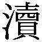的なところがあって、どっきり感は強いんだけど。そのどっきり感をうまく商売として使いこなせない、という感じがあったと思う。
フカカチで、もう少し柔らかいものがティッシュ以外にないのかというと、なかなかないんですね。
ハンケチ、なんて思うが、タダで配るにはちょっと高いし、安いとただの安物になってしまう。
ティッシュだと仮りに安物としたって、どうせ一回使って捨てるものだから、それでもいいのだ。
しかしむかしはそうではなかった。チリ紙を一回使っただけで捨てるなんて贅沢だった。その先を想像させてくれるな、と読者は希望するかもしれないが、真実は述べねばならない。
いまはもうそういう習慣の人もほとんどいなくなったと思うが、まったくいなくなったわけではない。友人の息子が小学校で、作文か何かの時間に、家の人にやめてほしいこと、という課題が出た。
「おじいちゃんは、ハナをかんだ紙を広げてえんがわでかわかすのをやめてほしい」
という真実が報告されたのだった。
ぼくも原稿用紙なら、五行ぐらいは消ゴムで消してまた使ったりするが、ハナ紙はやっぱり一回限りだ。地球に優しくしすぎると孫に嫌われる、というのはこれからの困った事態である。
優しさにも限度があるのか。
限りなく優しく、鼻をかんだチリ紙を五回、十回、二十回と乾かして、ベリベリのニカワみたいになってもまだ、ということを環境保護団体の過激派などは考えるかもしれないが、いろいろと難しい問題がある。
それとは別に、路上でくれるティッシュペーパーをもらえる限りもらい尽して、もう押入れいっぱいになっている、という通行人も中にはいるだろうが、その問題はどうすればいいのだろうか。
まあそんな個人のことまでここで考えなくてもいいのだけど、ぼくはこのところはティッシュの受取りを控えるようにしている。
紙と、紙ではない紙
この間仲間と写真展をやった。「ライカ同盟・発表会」という高級な名前で、三人で一人十点ずつ出品した。
ぼくはふだんからカラースライドで撮っているので、ラボでそのスライドからインターネガを取り、カラーの紙焼きを作ってもらった。
仲間というのは高梨豊と秋山祐徳太子で、高梨さんはプロ中のプロだから、ライカの引伸し機のフォコマートでモノクロの紙焼きをしっとりと焼き上げてきた。
暗室作業はまだぼくのこれからの課題で、いろいろと高梨さんに習わないといけない。自分でやる紙焼きはまだこれからである。
むかし学生のころ、友だちの暗室でちょっとやったが、いまはいろいろと事情も変っているだろう。
聞くと昔ながらの紙の印画紙は少なくなって、ふつう一般に多いのは紙ではなくて、プラスチックというか何というか、見かけは紙なんだけど本当は紙とは違うものなんだという。
最近の世の中は紙に限らず全部そうだが、見かけは似てるけど本当は違うというのが多い。
最近ぼくが感じたのはイオカードで、これはＪＲの出しているプリペイドカードというか何というか、とにかくそういうカードなんだけど凄く薄い。
テレホンカードはもうちょっと厚くて、これはプラスチックだとわかる。でもイオカードの場合はまた一段と薄くて柔らかいので、ひょっとして紙なんだろうかと思ってしまった。
こういう感じは微妙なところで、プラスチックだったら折れない、減らない、破れない、という大丈夫感のようなものがある。それが紙の場合は逆で、へたをすると破れる、折り目がつく、いずれ擦り減る、と思って大事に扱おうとする。
昔はこういう薄いプラスチックはまだ世の中になくて、セルロイドだったり、硬くて分厚いのはエボナイトだったりしていた。そのころトランプのカードというのがしっかりとした硬いツルツルの紙で、これは紙を超える紙というか、とにかく物凄く高級な物品に思えていたものである。
あれがプラスチック感覚のはしりのはずで、その調子でずーっときていたらプラスチックというのはこんにち高級品のイメージを持っていたのに、じっさいには安いというので生活のあちこちに無数にあふれて、いまではすっかり安物になってしまった。
だから写真の印画紙にしても、プラスチックの方は普及品というか何というか、仕上がりを気にするプロはやはり紙の印画紙を使うようである。
しかしそうなってくると、紙とそれ以外の紙とはどこで見分けるのだろうか。破け方が違うとか、濡れ方が違うとか、何かはっきりした違いがあるのだろうか。
蟹風味というのが出てきたときにはぜんぜんわからなかった。そういうマガイモノの存在なんて考えてもいなかったので、舌もまったく無防備で、本当に蟹かと思った。多少、あれ？ という気がしないでもなかったが、色は蟹だし、かじるとちゃんと縦に裂けるし、やっぱり蟹だ、と思い直した。
その後しかし蟹風味だけでなく帆立風味やいろいろマガイモノがたくさん出てきて、舌も簡単には欺されなくなった。それまで純心だった舌も疑い深くなり、舌の性格が悪くなった。
いまではその本物偽物の判断を舌にまかすというより、値段で判断するというのがほとんどである。そうやって頭の性格まで悪くなった。
しかし本物偽物の価値判断というのも複雑で、偽物でも実質的に良ければいいんじゃないかという判断もある。
たとえば絹とレーヨンなどは区別がつきにくい。どちらもさらさらしていて、欺されたってわからない。区別がつかないんだから、本物でも偽物でもいいんじゃないか、実質は同じなんだから。
ということになるけど、人間というのはなまじ頭があるので、欺されるのが嫌で、見かけは同じでも本物の方を欲しがる。
バリ島へ行ったときブティックでお土産を買った。絹のブラウスのきれいなのがたくさんあって、これは絹ですかと訊くと、そうだという。ライオンだという。バリ島では絹のことをライオンというのか。それとも絹のメーカーの大手にライオンというブランドがあるのか。
でも何となくおかしいのでなおも観察していると、ライオンというのはレーヨンのことだ。何だ、欺しているのかと思ったが、どうも欺している気配もない。絹か、と訊ねると、そうだ、と堂々といい、ライオンだと答える。
バリ島では絹とレーヨンに価値の差はなく、値段を見るとむしろレーヨンの方が高かったりする。工業製品の方が恰好いいんだ、ということがあるのかもしれない。
まあ価値というのはどちらが高くなろうと世の中の勝手で、いずれは実質に見合った値段になっていくのだ。
カメラにしても、昔はプラスチックなんておずおずと使っていたものだが、いまはもう安いから文句あるか、軽いから文句あるか、という感じで主流になってしまった。いまはほとんど全部のカメラがプラスチック製である。
まあたしかに実質があればそれでいいわけで、別に本物である必要はない。
というんで本物と偽物の境界線というのは複雑に入り組んできて、いずれ宮廷料理にも蟹風味が出てくるかもしれない。蟹よりも蟹風味の方が高くなるという事態だって起り得る。なかなか油断のならない世の中になってきている。
全部空っぽになっていく
この連載もずいぶん長くつづいて、途中で一冊本にまとめたけどまだつづいて、でもテーマは紙がみのことだから、さすがに紙数も尽きた、じゃなくて、書くことが尽きてきた観があるのだけど、しかしそれは書き尽したということではなくて、このところ紙がみのパワーが落ちてきているということかもしれないのである。
パワーというか、存在価値というか。
電子化、液晶表示、ブラウン管表示というのが主力に向かいつつあるわけで、まだあくまで「つつ」だが、しかし機能と経済性ということではどうしても電子化に向かうことになるようで、しかしその「機能」というのが問題である。
カメラの世界ではスペックといったりもするが、あれができて、これができて、それができる、どれだってできる、というので新製品にスペックを競う時代があった。いまもまだその時代ではあるが、もううんざりしている。
そんなに機能があって、それで何をするのか、というのが問題である。
人間が無限の知性を持っている、というのなら各機能は絶大である。でも人間の知性というのは知れている。
どの辺を知れているラインとするのかは問題であるが、人間は、とくに企業が購買層として皮算用する大衆というのは、はっきりいってその知性は物凄く知れている。
まあこういう話はやめておこう。自分だけが偉いような形になってくるのだ。
えーと、もとに戻って、機能性の問題である。
人間は頭がいい、ということになっている。でもそれは人間の一部の人が頭がいいのであって、全員の頭がいいわけではない。
この辺はあまり大声で言うと民主主義の見張りがいるから気をつけた方がいいのだけど、閑話休題。
機能的に優れた道具というのは、それを使いこなせる人にとっては物凄く便利だけど、使いこなせない人にとっては燃えないゴミである。
前に大変な工夫家のところを訪問して、その人は写真家でもあるのだけど、小さな六畳くらいの一部屋を、撮影スタジオ、暗室、大工的工作室、書斎、とじつに多機能に使える工夫がしてあって、その説明を一つ一つ聞きながら、ぼくは感動の連続だった。凄い。なるほど。それは凄い。と声を上げながら、その素晴しい工夫が羨しいと同時に、ぼくにはムリだな、と思った。
なにしろ狭いところを多角的に工夫してあるのだから、その工夫通りにやらないと、その工夫が生きない。というか、ちゃんとまめに動ける人じゃないとその工夫は使いこなせない。たとえば扉を開けると凄い機能が展開するんだけど、その扉の前に何か物を置きっ放しにしておいたりしたら、その機能はぜんぜん生きてこない。
自分の生活状態を振り返ってみて、ぼくにはムリだな、と思った。工夫は大好きなたちだけど、せっせと、てきぱきと動くという性能が自分にはない。きっと宝の持ち腐れになるだろう。
そうだ、要するに宝の持ち腐れの問題である。ＣＤロムというのがあって、その薄い小さな円盤の中に、広辞苑何冊分かが入ってしまうのだという。だからそれは機能としては素晴しい、ということは確かなんだけど、そこに、広辞苑何冊分も何を入れるのか。
このところの日本では、各地に税金によって立派な劇場や美術館や公会堂などが続々と建っていて、オペラもできるし、大展覧会もできるし、フルオーケストラの演奏もできるということだけど、そこで何をやっているかというと、ほとんど何もやっていない、というのとよく似ている。
何ごとも機能だけはどんどんふくらんできているのだけど、そのふくらんだ分だけ、中身はどんどん空っぽになっているのだ。
とはよくいわれることで、このいまの日本の世の中のシステムが、わかっちゃいるけどやめられない式に、その方向にどんどん向かわざるを得ないようなのは何故だろうか。
テレビもそうですね。チャンネルはどんどん増えて一台のテレビが物凄く多機能になってきているんだけど、何を放送しているかというと、何も放送していない。いや映像は映っているけど、それはあえて見るほどのことのないものばかりで、でもニュースだけは見るほどのことはあると思ってはいるけど、最近はそのニュースもほとんど見なくなった。
夜寝る前のニュースだけは見ようと思いながら、いつもその時間が過ぎてしまって、結局は一日中テレビを見ないという日がずーっとつづいている。
聞くと最近はそういう人が多いようだ。テレビというのはいつでもタダで放送しているから、テレビを買ったからにはできるだけ見なければソンだ、という考えは貧乏人なら誰でも持っている。
テレビというのはそういう貧乏のネットワークでチャンネルが広がっている。
話は違うが、最近のヘア解禁が何かに似ていると思ったのは、何年か前のフィリピンの政変だった。政変というより、マルコス大統領とかイメルダ夫人が追放された革命だけど、あれも今回の日本のヘア解禁と同じように、ちょっと押したら通ってしまって、そのまま押したらどんどん通ってしまって、結局は無血革命となったのである。
日本のヘアの無血革命史というのを書いている人はいるんだろうか。どの時点からヘア露出が当り前になったのか、とにかく気がついたら辺りにヘアヌードがあふれて、それが日常となっている。それによってヘアの奥が空っぽになったような感じもするけれど、まあ目出度いことではあるのだろう。
あ と が き
ぼくはまだ新解さんという人物に会ったことはないのだけど、間接的に、おぼろげに、空気を介してその人物に接している。いちど仲介者を通して会見を申し込んだこともあるのだけど、
「まあ会わん方がええでしょう」
というご返事をいただいたそうで、いかにも新解さんらしいなと思った。お会いしてもどういう会話をしたものか、見当もつかなかっただけに、やんわりお断りされてホッとしたことも事実である。
それにまた、会って何かがわかるというものでもないのだ。トマソンや路上観察をしていても、妙な不思議な物件に出合って、
「これはしかし、いったいどうしてこんな物ができたんだろう？」
と考えていると、
「聞いてきましょう」
といってすぐその家のドアを叩こうとする人がいる。そうじゃないんだ、聞いて何がわかるわけじゃないんだ、といっても、そういう人にはわからない。
疑問にはとにかく答を、そして、次行きましょう、という主義の人には、新解さんは見えないだろう。何いってるんだ、ただの辞書じゃないか、次行きましょう、ということで一生を終る。
いや人の一生がどう終ろうと別にいいんだけど、世の中は新解さんのわかる人と、新解さんのわからない人とに分かれるんじゃないかと、ＳＭ嬢もいっている。
新解さんのわかる人というより、新解さんの見える人か。新解さんを感じる人。その気配と応答のできる人。
新解さんが見えるからといって世の中的には何もトクすることはないのだけど、少くとも電車の中で辞書を「読書」する術は身につけられる。
新解さんの第一章は雑誌「文藝春秋」に掲載した。そのころラジオでえのきどいちろうさんのやっている番組に呼ばれて対談した。えのきどさんも見えるから呼んでくれたわけだが、放送のあとリスナーからの報告のハガキがどっと来たという。世の中には新解さんの見える人がたくさん潜んでいるんだ。第二章を雑誌に載せるときその報告を紹介したくて問い合わせたら、ハガキはラジオ局で全部捨てたという。ああ、やっぱり新解さんなんて見えないのがふつうなんだ。
後半の「紙がみの消息」は、雑誌「諸君」に「紙がみの横顔」として連載していたものである。この連載はずいぶん長くて、すでに同名で単行本となった後なおつづいたものの収録なので、ここでは「......消息」とした。このところ紙がみの世界もいろいろと揺れ動き、インターネット時代を迎えて、あるいはウォシュレット時代を迎えて、紙がみもどこへどうなっていくのか、予断をゆるさない。「......消息」としたユエンである。
うちでもこんどウォシュレット導入の予定だが、温風乾燥まではいいか、と思ってカタログを見ている。本体はウォッシュしてもらうとしても、最後に紙一枚くらいは肌に当てて、この世に生きていることを確認したい。
ぼくの場合案外と神経が旧式で、コンピューター類とはぜんぜん親しんでいない。そのくせトマソンのＣＤロムを製作中だが、それも技術の方はおまかせで、キイを叩くのはせいぜいカメラのシャッターボタンくらいだ。この原稿も手書きで、編集者に聞くといまではかなりの少数民族になりつつあるという。いずれそば屋の手打ちみたいに、ガラス張りにした小部屋で、手書きで原稿執筆しているところを見せるようになるのかもしれない。
新解さんの方は、映画化やテーマパーク化の話がまだ来ないけど、とにかく本になったのは嬉しいことである。新明解国語辞典を第一版から第四版まで、「読書」の手引き付きで貸してくれた鈴木眞紀子さんに御礼申し上げる。冗談が現実になるというのは現代の世の中の特徴であって、ここでもそれが実証された。本にするに当たっては編集の村上和宏さん、装幀の南伸坊さんにお世話になった。三省堂の新解さんのご配慮ともども、みなさんに感謝致します。
１９９６・６・２
赤瀬川原平
引用について
この本には、三省堂の許可を得て、「新明解国語辞典」の見出し、語釈を紙面のまま引用しました。なお、その際、一部を省略したものもあります。
また、引用にあたっては、「新明解国語辞典」初版第六刷、第二版第十刷、第三版第一刷、第四版第五刷、第二十二刷を使用しました。
初出誌
「新解さんの謎」
「文藝春秋」平成四年七月号、平成五年三月号に掲載された「フシギなフシギな辞書の世界」をもとに「第三章」を書き下ろして再構成しました。
「紙がみの消息」
「諸君」平成四年六月号から平成六年十二月号まで連載。
単行本
平成八年七月文藝春秋刊
図版構成 南 伸坊

文春ウェブ文庫版 ◇
新解さんの謎
二〇〇三年六月二十日 第一版
著 者 赤瀬川原平
発行人 笹本弘一
発行所 株式会社文藝春秋
東京都千代田区紀尾井町三─二三
郵便番号 一〇二─八〇〇八
電話 ０３─３２６５─１２１１
http://www.bunshunplaza.com
(C) Genpei Akasegawa 2003
bb030601